| モノノケグラデーション 2 | |
| 持崎湯葉 | |
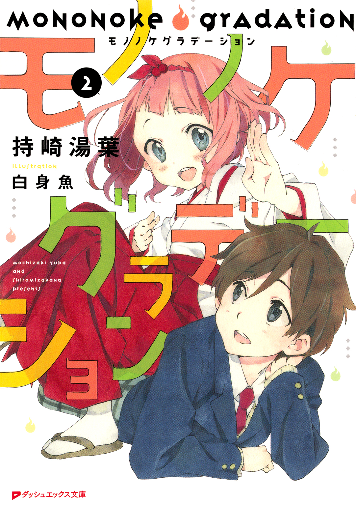
この本は縦書きでレイアウトされています。
また、ご覧になる機種により、表示の差が認められることがあります。
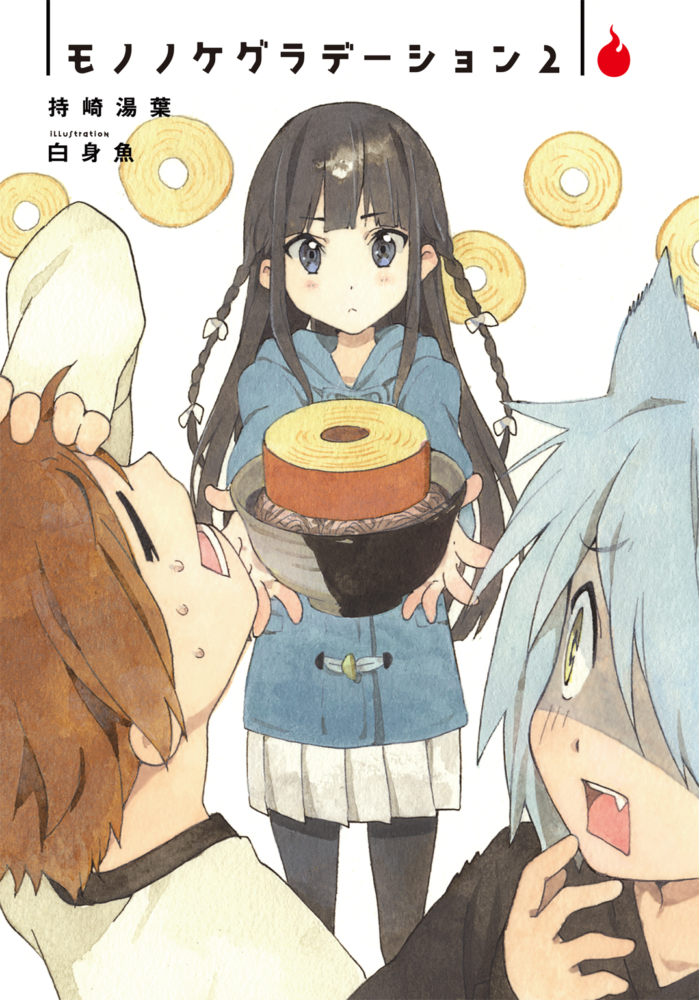
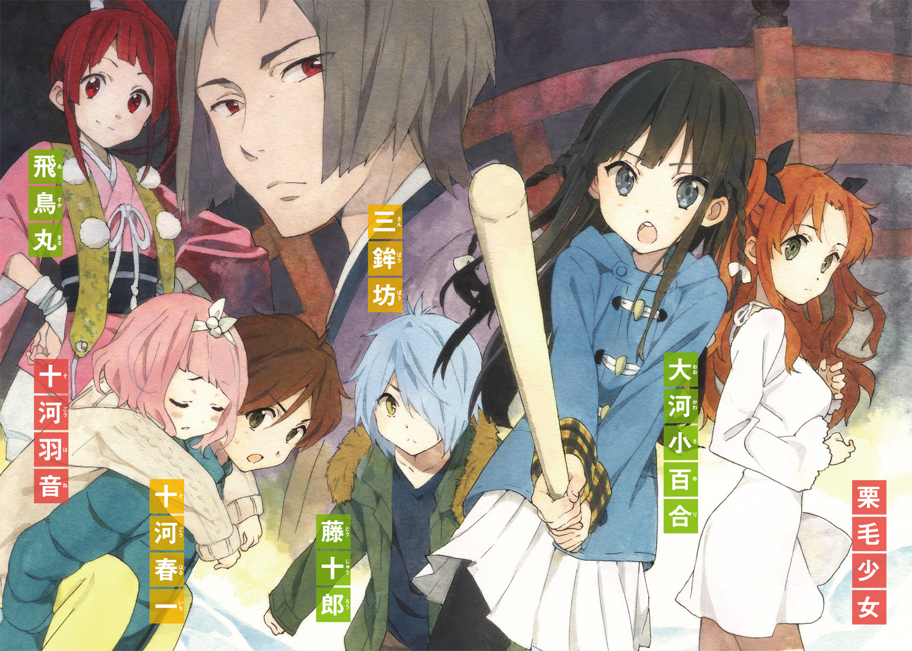
 ダッシュエックス文庫DIGITAL
ダッシュエックス文庫DIGITAL
モノノケグラデーション２
持崎湯葉
第一章
日本の心とはよく言ったもので、そば処と銘打つ店は大抵どの地域にも存在する。
それだけ日本人はあの灰色の麵を愛しているわけだが、俺にはよくわからない。
大人になればその良さはおのずとわかると大人は言うけれども、食べ盛りの高校生としてはやはりもっと歯ごたえがあって肉々しいものを食べたいところだ。嫌いではないのだけど。
ただ、なぜか俺には行きつけのそば屋があったりする。なぜか。
紹介しよう、此花庵。大通りを外れた住宅街のそのまた外れ。長い長い体感角度三十度ほどの坂道の途中に、その店はある。向かいは寺院の管理する墓地が広がっていて、どこか異様な雰囲気が漂う。外観はいかにも老舗なテイストだ。
さて。行きつけと言うだけあり、授業を終えた俺こと十河春一は、此花庵に呼び出されていた。そば屋に呼び出されるとはこれ如何に。
二月という文字を見るだけで凍えそうな月ももう大詰めだが、まだまだ寒い日は続く。はやく温まりたいと俺は坂をとっとこ下り、店先まで辿り着いた。
そこで俺は、おかしくも微笑ましい光景を目にする。
此花庵の扉を、なにやら一匹の猫が爪を立ててカリカリやっている。まるで中に入れてほしそうな仕草だ。可愛らしい。
その猫にはひとつ、目を見張る特徴があった。全身水色なのだ。かなり珍しい毛色だ。
くしくもその猫とは目的地がいっしょなので、近づかないわけにはいかない。背中を向ける猫に忍び寄り、俺はひょいっと持ち上げた。
「にゃんこさん、なにしてるんですかー？」
この猫さん人間慣れしているのか、「にゃあ」とか言っておとなしく抱きかかえられていた。
「この店に用か？ でもここには気に入らないやつをそば打ち棒でしばく変な女が......ん？」
じっと俺を見つめる猫の瞳をよく見てみる。不可解なことに、慣れ親しんだ感覚が走った。
この猫、『色』が......。
「......にゃんこさん、もしかしてきみ、妖怪？」
「ぬなっっ！」
「なーんて............え？」
猫相手に冗談を言ったつもりだったが、実に良いレスポンスが飛び出してしまった。
「......え、マジ？ マジなの？」
「............」
「いや、そっぽ向いてごまかそうとしても......急に汗びっちゃりじゃないの、きみ......」
こんな汗だくな猫、はじめて見た。この反応、もはや妖怪を通り越して人間臭い。
「完全にきみ今、『ぬなっっ！』って言ったよね......？」
「な、なー」
「いや、急に猫ぶられても......」
猫かぶってる......この猫、猫かぶってるぞ。
俺と猫との心理戦が佳境を迎えたそのとき、此花庵の扉が開く。
現れたのは白の作務衣に緑の和帽子、片手にそば打ち棒を持った、ぬばたまの黒髪少女。怪訝な表情で店から顔を出すと、俺と猫を見て納得したように言う。
「なんだ、春一と藤十郎か」
真っ先に反応したのは俺ではなかった。猫は瞳を潤ませ小刻みに震えながら、口を開く。
「さ、小百合さまぁ......」
しゃべる水色の猫。その声は、見事な猫なで声だった。
唐突だが、妖怪はいるらしい。結構いっぱい。
事実俺もつい二週間前、妖怪二人ほどと人生初の接触を果たした。ただ、どちらも人間離れした身体能力だったり特殊能力を備えていたものの、見た目は人間そのものだった。
言ってしまえば、外見からしてザ・妖怪みたいなのは目にしたことがなかったわけだ。
だから、眼下に広がるこの光景に驚く時間を、もう少しだけもらいたい。
「んぐんぐ。やはり小百合さまのそばは絶品ですねぇ」
「いやーそれほどでもあるよねー」
猫がしゃべってる。猫が箸でかけそば食ってる。猫がお世辞言ってる。
猫って、なんだっけ？
「春一、食べないの？」
和帽子を外し、さらさらの黒髪に昼白色の灯りを反射する小百合は、不満げな顔を俺に見せる。お子様用の椅子の上に立ち、テーブルのそばを啜っていた水色の猫も追従してくる。
「春一さま、はやく食べねばそばがのびてコシのある食感がなくなってしまいますよ」
猫に諭されてしまった。
「いや......まだ頭が追いついてないというか......」
「春一、往生際が悪い。猫だってしゃべる」
つい数分前、小百合が仲介となり、俺は猫の藤十郎を紹介された。その際藤十郎は「先ほどは失礼しました......」と丁重に謝ってきた。綺麗なお辞儀をする猫に、こちらも頭を下げずにはいられなかった。なので猫がしゃべるのはまだ受け入れられるが、気になるのは......。
「いや、すげー器用に箸使ってるなーって......それに、熱くないの......？ 猫舌は......？」
「やはりそばは箸で頂くのが作法かと思いまして、この藤十郎、練習いたしました」
藤十郎はくいくいっと箸を自在に操る。爪を使ってうまく挟んでいるようだ。
「それに猫舌も矯正しました。冬はやはりかけそばを頂きたく」
通だよ。この猫、通だよ。俺なんかよりもよっぽど日本人だよ。
「さあ、わかったらはやく食べて春一。かけそばは一分一秒の世界」
「わかったわかった」
猫と席をともにして、俺はかけそばに舌鼓を打つ。まるで空想の中にいるようだ。
最近は至って普通の日常を過ごせていたが......急激に引き戻されてしまった。非日常に。
これが面倒ごとのきっかけにならなきゃいいが。
「春一くんには折り入って、頼みがあるぞよ」
たちまち面倒ごとっぽいのが舞い込んできてしまった。しかも面倒な口調で。
かけそばを食す俺と藤十郎、店の鍵を閉め休憩中を良いことにテーブルに突っ伏す小百合の前に現れたのは、ちびっこ上司椎葉奈々子さん。作務衣に和風スカートの仕事着だ。
中学生のようなナリだが、中身はしっかりつかみどころのない大人である。そんな外見に合わせてわざとアホっぽく振る舞っているあたりがしたたかな、でもちゃんと優しい女性だ。
奥で電話していたらしい奈々子さんは小百合を叩き起こし、カウンターの席に座ると、前述のようなことを言って俺にウインクを飛ばした。
「......遠慮するかもしれません」
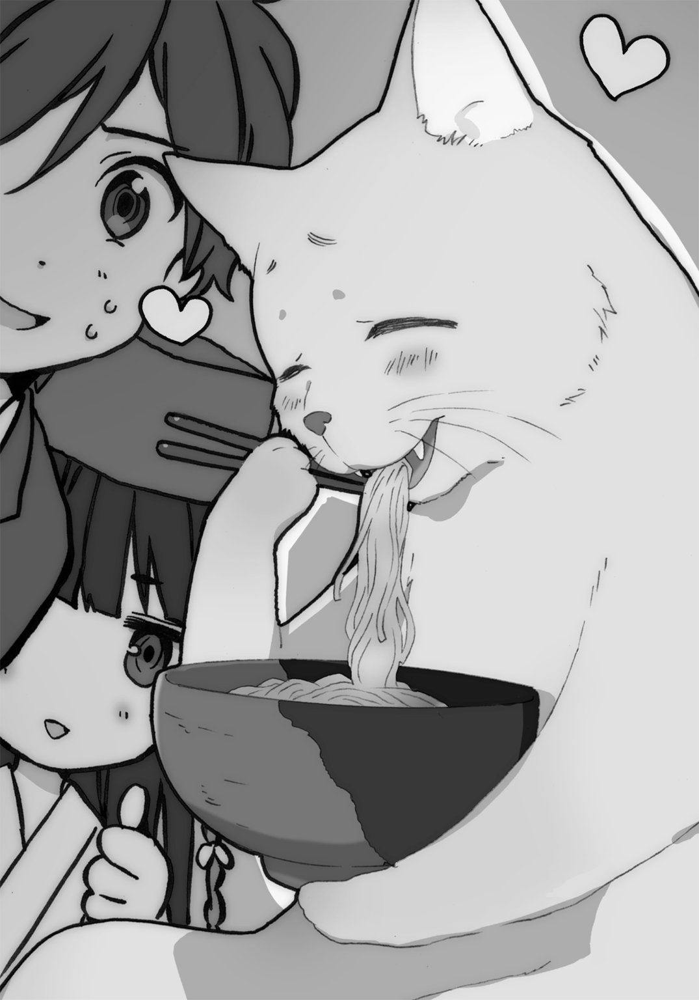
「おおう。いけずと見せかけて希望を残す春一くんは好きだぜ」
「でもホントにもう......怪我するようなことはイヤですよ？ 二週間前のでもう身に染みたのです。俺は危ないことに首突っ込んじゃいけない人種なのです。ノーモア暴力、健康第一」
二週間ほど前、俺の日常はそこでのんきな顔をしている大河小百合によって変貌させられた。
世間を騒がせていた連続傷害事件の解決を目指す小百合とひょんなことから出会い、協力することになった。それから肋骨にヒビを入れられたり記憶飛ばされたりボコボコに殴られたりもう散々な目にあったのだ。
結果として事件は解決したが、そのときに誓ったのだ。俺はもう、荒事には踏み込まないと。俺が傷つくことで心を痛める人がいるのだから。
ではなぜ、小百合が連続傷害事件なんぞの解決に尽力していたか。
「いやいや心配しないで大丈夫。休更月にだって戦闘以外のお仕事がいっぱいあるんだから」
それは、小百合が『休更月』だからだ。
しつこいようだがこの世界に妖怪は存在する。そして彼らは想像の通り、人ならざる能力を持ち合わせる。そんな妖怪たちが人間社会で生きていけるよう管理するのが、秘密結社休更月。
普段はどの地域にも一定数は存在するそば処など麵屋に扮し、陰で街に住む妖怪を保護し、監視し、時には取り締まっている。休更月によって日本全国の妖怪と人間は守られているのだ。小百合や奈々子さんは、そんな機関のエージェントといったところか。
二週間前の連続傷害事件、つまりその犯人は妖怪だったわけだ。
「あのう......」
「お？ どうしたんだい藤十郎ちゃん」
おずおずと手......ではなく前脚をあげる藤十郎は、困惑しているようだ。
「春一さまが、小百合さま方と二週間ほど前に知り合い、ともに事件を解決した、ということはすでに伺いましたが......春一さまは一体どのような妖怪なのでしょうか......？」
おっかなびっくりといった様子で藤十郎はとんでもない質問をしてきおった。
「藤十郎、ちがうよ。春一は人間」
「え、えええっっ？ に、人間でいらっしゃるのですかっっ？ で、ではなぜ......？」
「春一は、なんかよくわからないけど結界に入れる」
きょとん、とする藤十郎。驚くのも無理はないが、小百合の説明に間違いはない。
休更月の人間が戦闘時などに張る結界には、妖力を持つ妖怪や、魔術訓練を受けた人間以外は入れない。が、なんと普通の人間であるにもかかわらず、俺は結界に入れてしまうのだ。
そしてもうひとつ。普通の人間のはずが、普通は持ち合わせていない能力を俺は持っていた。
「あと、目を見たら相手の『色』がわかる」
「『色』......ですか？」
「それは............春一、パス」
途中で投げるなよ。まあ、俺自身が説明するのが一番だな。
「『色』ってのは、ひとの本質を表したものだと思う。だから俺は一目見ただけで相手がどんな人間、または妖怪だかわかるんだ。ただ動物相手では、今まで見えたことないな」
「動物相手には............あっ！ だからあのとき！」
「そう。だから俺は藤十郎が妖怪かもしれないと思ったんだ。ただの猫なら、『色』は見えないからな。ちなみに藤十郎の『色』は、青に近い紫、リンドウ色ってところだな。真面目さとか義理堅さ、あと忠誠心なんかも感じるな」
あと気弱さとか臆病とかもね。もちろん言わないけど。
小百合がなにか訝しむような目を、俺に向けてきた。
「前から思ってたんだけど、なんでそんなに色に詳しいの？ リンドウ色なんて聞いたことない」
「え、そうか？ そんなことないだろ」
「いや、絶対変」
「でもー、今回の心理占いも、ズバリ的中みたいだねっ」
奈々子さんが会話に加わる。いやたしかにそんなところだけど......心理占いって言われるとちょっとイヤだな......。
「藤十郎ちゃんほど忠誠心に溢れてる猫はいないからねー」
「い、いえ奈々子さま......わたくしはそんな......」
前脚で後頭部を搔き、むず痒そうに照れる藤十郎。もうほぼ人間、というかおっさんである。
「しかし......これで理解いたしました。春一さまはこれまで多くの者の『色』を見て、多くの心を知りながらも、それに辟易することなく真摯に向き合ってこられた人格者なのですね！」
「「いや、人格者ってほどでは......」」
なぜハモる、小百合。
「なるほどなるほど！ 安心いたしました！」
「安心ー？ じゃあ春一くんのこと、ちょっと疑ってたってことかなー？」
奈々子さんの悪戯めいた言葉に藤十郎は「にゃっっ？」と猫らしい声を放ち、ピーンッと尻尾を立てる。そしてまたも大汗をかきはじめた。
「そ、そそそそそんなことは―――っっ！ にゃにゃいのですぞ―――春一さま―――っっ！」
「いやいいよ謝らなくても。初対面なんだから、信用できないのはあたりまえだし」
「あああ春一さま、なんと慈悲深いお言葉......っ！ こんな方を疑っていたなど......藤十郎、一生の不覚！ 深く不覚！」
ほらもう動揺しすぎて事故的なダジャレが発生しちゃったよ。
「涼めスズメ」
張り合ってんじゃねえよ。
「あーごめんごめん藤十郎ちゃん、そんなつもりじゃないのよー、奈々子ちゃんが意地悪な冗談言っただけだよー」
奈々子さんの冗談を冗談として受け取れない藤十郎の純粋さが浮き彫りとなったこの場面。俺としては、奈々子さんの発言にあった小さな謎が気になるところだ。
「ちなみに奈々子さん、なぜ藤十郎は忠誠心に溢れてると？」
「お、気になるかい少年？ その答えは、春一くんへの頼みごとの中にあると言ったら？」
キラリと輝く瞳を俺に向け、ニヤリと笑う奈々子さん。その隣でクドい笑顔を浮かべ、サムズアップする小百合。いやおまえはなんだよ。
「......まあ、聞くだけは聞こうと思ってましたし......」
そう言うと、小百合と奈々子さんは「「イエーイ」」と元気にハイタッチを交わしていた。
そうして話ははじまるわけだ。今この街にある、小さいようで大きな問題のお話。
それは、藤十郎の自己紹介から幕を開けた。
「改めまして......わたくしは水野橋の『橋姫』水野の使い、水猫の藤十郎と申します」
『橋姫』という神様をご存じだろうか。俺は知らなかった。
そもそも橋という存在は、村と村、土地と土地、こちら側とあちら側という大げさに言えばふたつの世界を媒介する、つまりは強い『境界性』を持った空間である。
そんな領域には、その境界を守る神が宿るという。それが、名前の通り橋姫だ。
どの橋にも姫は宿るが、橋の規模や古さ、なにより人間の依嘱の大きさによって神としての力は変わってくる。神様パワーの原動力は、古今東西人間の信仰心なのだ。
そんな橋姫には、共通した性質がある。
それは嫉妬深いということだ。女性の皆様には悪いが、なるほど女神だと納得してしまった。
たとえば橋の上で他の橋を褒める、他の土地を褒める、また男女の恋仲を自慢するなどをすると、その人間または土地に災いが起こる、などという逸話が全国各地にある。嫁入り直前に橋を渡ってはいけない、なんて言い伝えもあるとかないとか。
ところで、俺たちの住むこの街にもひとつ大きな水道橋がある。全長二百メートルの長さと、人に車に多くの利用者数を誇る、『水野橋』だ。
もちろん水野橋にも、橋姫は存在する。その名も『水野姫』。
街一番の橋というだけありその力も強大で、橋の守り神であるだけでなく、橋の下を流れる一級河川『夜粋川』を統べる水神でもあるらしい。
さてそんな水野姫だが、そこはやはり橋姫らしく、強い嫉妬心の持ち主のようだ。
だがその嫉妬のベクトルは、他の橋姫とはちがい、どうにもかなり厄介なモノだとか。
「放浪癖？」
俺が聞き返すと、藤十郎は困りきった表情で頷いた。
「はい......水野姫さまは、水野橋で他の橋を褒めるなどされてもなんとも思われないのですが、ただひとつ......他の土地の話をされると、嫉妬心に火がつくのです。そしてそれは、その土地に嫉妬しているのではなく、『その土地を褒めた者』への嫉妬なのです」
「要は、橋姫特有の強い嫉妬心が、『自分の知らない世界を知っている者』に働くんだね。その感情を抑えきれなくなって、ふらーっとどっか行っちゃうの。水野橋で旅行の話をするべからず、って昔から休更月では言い伝えられてるくらいだし」
なるほど。それは困りもんだ。神様不在なんて不安でしょうがない。
「今も姫さまは例によって放浪されているのですが、そんな性質を知って、姫さまがいないうちに水神の座を乗っ取ろうとしている輩がいると、この藤十郎、聞きつけたのです」
水野姫の使い、水猫の藤十郎は耳をへたっと萎えさせる。有り体に言えば水野姫の秘書的なポジションらしい。ちなみに水猫とは、水辺に棲息する化け猫の俗称だとか。
「それは大変だな......。そんなことできちゃうのか......」
「水野姫本人がいないってのが最大の抜け目なんだよねえ。力のある妖怪なら、強奪できないこともない。なんとなーくわかるんだけどね、そんなこと考える輩」
奈々子さんは深いため息を漏らす。奈々子さんには心当たりがあるようだ。
「でも、なんで今そんな話が？ 水野姫の放浪癖は昔からなんだろ？ よく今まで守れたな」
「はい......水野姫さまはその嫉妬心のせいで一年の半分ほども街を離れているのですが......いない間は明条橋の橋姫さまが代わって守ってくださっていたのです」
明条橋とは夜粋川に架かる別の橋だ。かなり古くからあるようで、このご時世では珍しい木橋というレトロ感が好評らしい。
「あの年季なら経験豊富な橋姫様が祀られてそうだ。......あれ？ でも、最近明条橋って大がかりな工事をしてたような............もしかして......」
「ご想像の通りだね。老朽化に伴って、明条橋は数週間に及ぶ修繕工事してる。だからその間、明条橋の橋姫様はご休暇中」
水野姫不在で、フォローをしてきた明条橋の橋姫もいない。夜粋川水神の座を狙っていた輩にとっては、今が絶好の機会なわけか。
「それで、どうするんですか？」
「うん。放っていては良からぬ輩に水神の権限を奪われる。だからって二十四時間、私たちが橋を警護するわけにもいかない。けどひとつだけ、橋そのものの『場の力』を底上げすることで、御神体を強化する方法がある。それが、『橋姫の巫女』を立てること」
また聞き慣れない言葉が出てきた。素直に尋ねると、奈々子さんは説明を加える。
「根本は神社にいる巫女さんと変わらないよ。ただ現代版の補助的な巫女よりも、より神様に近い存在。依り代となって、ほんの少し橋姫の力を宿す。それが、橋姫の巫女」
「橋姫の巫女をプロデュースするだけで変わるんですか？」
「超変わるね。それだけで信仰によって『場の力』は増大する。巫女がたとえなんの力もない人間であったとしても。そうなれば他者が橋姫の座を奪うのは無理だろうね」
巫女さんの力ってすごいんだなー、なんてしみじみ考えていた俺だが、突如その手をがっちり摑まれる。ぎょっとして顔を上げると、俺を見るその瞳は鈍い光を放っていた。
「そ・こ・で！ 春一くんに頼みがあるのです！」
見ると奈々子さんだけでなく、小百合、藤十郎も強い眼力でもって俺を見つめている。
この話のあとで俺へ頼みごと......それって、まさか......っ！
「お、俺が橋姫の巫女に......？」
「ちがうよ春一くん」「ちがいますよ春一さま」「なわけねえだろ図に乗るなどてかぼちゃ」
で、ですよねー......俺の巫女装束とか、どう見積もっても気色悪いですよねー。ただ約一名ツッコミが辛辣すぎるのが納得いかない。
「じゃ、じゃあ俺にどうしろと......？」
俺の問いに、奈々子さんは少し話題の中心から外れた話をはじめる。
「橋姫の巫女になるには適性があるのね。まー基本は人間の女性であれば、だれでもできるんだけど。理想的なのは美しく清らかで、あまり嫉妬深くない女性ってところだね。たぶん」
「たぶんて......そんなテキトーでいいんですか？」
「すみません......なにせ水野橋において橋姫の巫女を立てるのははじめてで......勝手がわからないのです。奈々子さまのおっしゃったのは、一般的な橋姫の巫女の理想です」
藤十郎は申し訳なさそうに言う。基本誰でもいいけど、未経験だから慎重になるわけね。
「そこで！ 満を持して春一くんにお願いなのです！ 一人、橋姫の巫女にふさわしい人物に心当たりがある......だから、他でもない春一くんに協力してほしいの！」
ん？ 俺の協力が必要な、美しくて清らかで嫉妬深くない女の子って......まさか......っ！
「春一くんの可愛い可愛い妹の羽音ちゃんに、橋姫の巫女になってもらいたいのっっ！」
「断るッッ！」
スッターンッと椅子を立ち一直線に扉へと向かう俺だが、刹那、全身に悪寒が走る。
股の間から、いつの間にか細長い木の丸棒がこんにちはしていた。
「動くな」
ゆっくりと振り向くと、こちらに背を向け座る小百合が後ろ手で、股の間を通過する丸棒を握っていた。小百合の武器である、如意棒『戸隠』だ。
「少しでも動いたら、このまま『あーあ疲れたなー』とか言って......腕を高く上げるぞ」
言葉の意味を理解した瞬間、どことは言わないが、身体の一部分がヒュンッとなった。
「くっ......卑劣な！ 妹のみならず、息子までも......」
「貴様が言うことさえ聞けば、妹も息子も無事で済む」
「噓だ！ おまえらは妹を利用するつもりだろう！ この外道ども！」
「おっとそんなこと言っていいのか？ なんなら今ここで、貴様を女の子にしてもいいのだぞ」
「くっ、爆誕なのかっ？ 十河春子ちゃん爆誕なのかっ？ 近所でも有名な美人姉妹......っ！」
「はいはい。シリアスごっこはそれぐらいにして、本題に戻りますよー」
「「はーい」」
小百合は戸隠を元の長さに戻し、俺も元の席に座るのだった。
「羽音をこちら側に巻き込むなんて、絶対にできませんっ！」
「切り替えが早いな......。いや巻き込むとかじゃないよ。羽音ちゃんには神社の行事なのよー、って言って、ちょっと巫女装束を着て、ちょっと橋で儀式的なものをしてもらうだけ。正式な橋姫の巫女にはなるけど、日常生活に支障はないからさ」
「危険はなくとも、羽音を非日常に巻き込むのは許しません！ ましてそんな騙すみたいな！」
それなりにヤサ男で通っている俺だが、妹のこととなれば別だ。考えを改めさせるためにも、ここは羽音がどれだけの存在かをちょっと説く必要がありそうだ。
「たしかに言いたいことはよくわかります。羽音が究極に美しくて清らかなのは揺るぎない事実です。例えば羽音が一国の王女であったなら全国民がその笑顔のために勤労を惜しまないほどの愛くるしさに加え、内に宿る心は極限までの企業努力の末に生産された洗濯用洗剤であってももたらすことのできない驚きの白さ、人間の醜き口から生み出される言語などでは到底物語ることのできない羽音という存在は、きっと天地開闢まで遡っても勝るどころか同列に値する者さえ現れない、全宇宙至高の......」
「わ、わかったから落ち着いて春一くん」「春一さまは妹想いなのですねえ......」「もう恐ろしい。恐ろしく気持ち悪いよ、春一」
なんだ？ まだ羽音の魅力の一厘も話していないつもりだが、もう三人とも圧倒されたような顔をして。失礼な。
「というわけで羽音にはやらせません。なんなら俺が春子ちゃんとして......」
「いやそれはいいって」「むしろやりたがりか」
「じゃあ小百合がやれば良いじゃないですか！」
「........................」
「え、なにその目......」
小百合はなにかじぃと無表情で俺を見つめていた。顔が赤らんでいるようにも見える。
ああ......なるほど。巫女の理想条件に当てはめられて、照れてるのね。
俺、遠回しに小百合は美しい、とか言っちゃったのね。
「そうできたらいいんだけどね。休更月は神職に就いてはいけないってルールがあるの。だからこの奈々子ちゃんがいくら美人局次長であっても......」
「春一......なんで、私......？」
「べ、別に他意はねえよ......おまえにだって、当てはまるだろ......」
「っ......そ、そう......」
「聞けやガキども」
いやいやこんなラブコメってる場合じゃない。羽音を巻き込むことだけは回避せねば......。
「じゃ、じゃあ............詩衣さんとか？」
「羽音ちゃんはダメでも、しーちゃんが巻き込まれるのはオッケーっと......めもめも」
「待って！」
そういうことじゃない、そういうことじゃないんだ詩衣さん。うまく言えないけど、そういうことじゃないんだ。
詩衣さんとは俺の年上の幼馴染みであり、俺の通う高校の化学教師である。妖怪などとは無縁の人生にもかかわらず、俺を介して小百合や奈々子さんと知り合ってしまった女性だ。
「詩衣さんも美しくて清らかだけど、歳がちょっといきすぎ......」
「おいやめろ。無邪気な毒をやめろ。それ絶対詩衣さんに言うなよ」
いや詩衣さん二十三歳だから全然若いのよ。神事的に必要な若さではないものの、全然若いのよ。なぜ本人もいないのに俺がフォローしているのだろうか。
「てか詩衣さんがダメなら同い年の奈々子さんはよりダメなんじゃ......」
「『より』ってなんだおい。同い年なのになんで私のほうが『より』ダメなんだおい」
いよいよ混迷の様相を呈してきたこの議論。ついには気丈に振る舞い続けてきた藤十郎も、なりふり構わず懇願してくる。
「お願いです春一さまぁー......このままでは水神の座が奪われてしまいますぅー......」
「う、そ、そんなこと言われてもダメったらダメだ！ 他当たってくれ！」
俺の足にしがみつき涙を目に浮かべる藤十郎。さすがに心揺さぶられたが、それでも了承なんかしない。羽音のためなら、俺は鬼にだってなる。
「いよいよシスコンが悪い方向へ......反抗期が来たら真っ先に嫌われるだろうねえ、春一くん」
「なななっっ？」
小さな音量だが、聞こえた。聞き捨てならない言葉がちっこい人からたしかに聞こえた。
「羽音に反抗期なんて来ません！ だってもうすぐ中三なのに、あんな純粋ですしっっ！」
「いやいや女の子の反抗期ってのはびっくりするほど急に来るものだよ。純粋な子に限ってね。そして自分を愛してくれる人ほど、遠ざける」
ストレートな論述に「ぐぬぬ......っ！」とうめく。そこで小百合が、なにかピンときたっ、みたいな顔をした。喉に手を当て数回軽く咳払いすると、俺に向かって別の声色で言い放つ。
「『はるにぃなんて、大っ嫌い！』」
「ぐふぅ......ッ！」
その瞬間、心臓に弾丸を撃ち込まれたような衝撃を受けた俺は、椅子から崩れ落ちて虫のようにのたうちまわる。くそうっ......息ができないっ......ッ！ ショックで気道が......ッ！
「うわっ......想像以上の効果......」「小百合ちゃんモノマネうまいねー」
奈々子さんは倒れている俺を席に座らせると、改めて諭すように俺に言う。
「とりあえず羽音ちゃんにも話を聞いてもらおうよ。もちろん橋姫どうこうの話はせず、神社の行事に協力して、的な話をさ」
「だからそれじゃ羽音を騙すみたいに............」
いや待てよ......よく考えたら、羽音に直接頼んでも問題ないのではないか？
なぜなら羽音は、極度の恥ずかしがり屋さんだから。巫女装束なんて目立つ恰好で往来に立つなんて、性格的に絶対やろうとはしない。
「......わかりました。明日、羽音を連れてこようじゃないですか」
そう言うと、小百合、奈々子さん、藤十郎の三人は大喜びしていた。
しかし残念だが、望みは叶わない。羽音から直接断りが入れば、さすがに退くだろう。
ここは強靭なシスコン力を持つ俺に軍配が上がったわけだ。
羽音は絶対に断る。お兄ちゃんが言うんだから、間違いないのである。
＊＊＊
「いいよ！」
しかしながら羽音は、一も二もなく了承するのだった。
「「やたー」」「いやちょっと待ってよ！」
小百合と奈々子さんはそろって両手を上げて喜ぶ。羽音に見つからないようテーブルの陰に隠れる藤十郎も小躍りしていた。俺はもちろん待ったをかける。
約束通り俺は翌日の放課後、羽音とともに此花庵を訪れた。世間話もそこそこに小百合と奈々子さんが例の件を頼んだところ、なんと羽音はすぐさま可愛くオッケーした。
生まれてこのかた可愛い盛り継続中の中学二年生、十河羽音。羽音の考えることなら少なからずわかるつもりだったが......ここでまさかの大誤算である。
「ま、待ってくれ羽音！ ほ、本当に良いのか？ 羽音、すっごい恥ずかしがり屋だろ？」
「うん、かなり恥ずかしいけど......小百合ちゃんの頼みだから、がんばってみようかなって」
しまった......羽音の小百合への愛をすっかり忘れてた......。
休更月やら妖怪やらは知り得ない羽音だが、小百合とは俺経由で知り合い、仲良しになった。というか羽音は小百合に逢ったときからかなりの好意を持っていた。普段は人見知りなのに。
「で、でも羽音、だれにだってできることなんだし、わざわざ羽音が我慢しなくても......」
「......そうかもだけど......あとね、もうひとつ理由があってね」
羽音はもじもじとしながらも、パステルグリーンの『色』を俺だけに向ける。『色』の中には、生来羽音の中に存在する、意志の強さが光っていた。
「人前で緊張しちゃうこの性格、直したくて......良い機会だと思うんだけど......はるにぃ？」
「........................」
妹の人間的な成長、真摯さ、いじらしい上目遣いを前に、お兄ちゃんは万歳三唱をするべきところだろう。が、複雑すぎる心境に、どんな顔をすれば良いかわからなかった。
そんな俺に、奈々子さんがこっそり耳打ちする。
「強靭なシスコン力を持つお兄ちゃんでも、わからなかったね、女心は。あと......女の子の成長も、びっくりするほど急に来るものなんだな」
「........................」
心読まれてたー。はるにぃ、完全敗北。
絶望する俺をよそに、小百合と羽音の仲良し二人組は柔和な雰囲気で約束を取り結ぶ。
「それじゃ羽音ちゃん、改めてよろしく」
「はい！ 心をこめてがんばります！ 橋姫の巫女！」
しゃっきりそう決意表明すると、我が自慢の妹は巫女というより女神のような神々しい笑顔で敬礼するのだった。可愛い。
第二章
梅の開花も近づく二月終盤の日曜日、腹立つほどに晴天だった。
俺はため息で手のひらを温めながら、とある神社の境内にて、生乳会社のロゴが入ったベンチに腰をかけていた。傍らには神社の方にもらった甘酒の紙コップ。まるで昼間から酒を飲んでふらふらしてるおっさんのような気分だ。
なんなら酔ってしまいたい心持ちでもあるんだがな。
目の前を慌ただしく行き交う休更月や神社の人を眺める。いまだごちゃつく心のままに黄昏れていると、見覚えのあるダッフルコートが鳥居をくぐってこちらへやってくるのが見えた。
「おう」
「おう」
小百合が同調したせいで、アシカの挨拶のようになってしまった。
「遅かったな」
「橋の様子を見てから来た」
隣に座ると、疲労感を滲ませ白い息を吐いた。意外とちゃんと業務を全うしてるのね。
小百合は肩にかけている戸隠の入った黒い筒状のケースを膝の上に置き、この寒いのにコートの襟で汗ばむ顔を扇いでいた。
「............ちゃんと着てるか？」
「............（スチャ）」
「悪かった」
戸隠のケースのふたを開けようとする手を即座に制止する。小百合は頰を紅潮させ、俺をねめつけた。なんで俺が悪いみたいな顔されなきゃならないんだ。
この小百合と書いてアホと読む女、なんと俺と出会う前まで下着にコートを羽織るだけという露出狂のようなコーディネートをかましていた。そこで大いに欠如した常識を説き、インナーという概念を叩き込んだのはごく最近のこと。
今ではちゃんと中にも着込んでいる。それだけでも大きな成長だ。なんたって当初インナーと聞けば「マッスルのこと？」と真顔で言ってくるようなやつだったのだ。
「なに飲んでる？」
そう尋ねる小百合は、子供のように口を開けて目を輝かせていた。わかってて聞いているな。
「甘酒。神社の人からもらった。飲むか？」
差し出すと、すぐさま手を伸ばし......かけるがピタッと停止し、引っ込める。
「仕事中に......酒はえぬじー......」
そもそも酒飲める年齢じゃないだろ。
「甘酒だからアルコールはほぼないぞ」
「マジでかっっ？ マジでかっっ？」
「そんなにか？」
「......いや......やっぱり我慢する」
情緒不安定な小百合は、最終的に意気消沈した様子で逃げるように甘酒から目を離した。
そして、自分に言い聞かせるように、一言。
「羽音ちゃんの、大事な橋姫の巫女就任日。気の緩みは許されない」
望まずとも来てしまった本日は、羽音が橋姫の巫女になるための儀式を執り行う物日。
内容は簡単なものだ。水野橋のすぐ近くにあるこの稲荷神社から、宮司さんや巫女さんに囲まれ羽音が出発。そうして橋の中央で儀式を行って帰ってくる、ただそれだけ。儀式中の数十分間、橋を封鎖するなど交通規制まで行うらしい。休更月ってすごいね。
ちなみにその羽音だが、今は社務所にてお着替え中だ。俺とともにここへ来てから小一時間ほど経っていることから察するに、相当気合いの入った衣装なのだろう。
「時間かかり過ぎだろ......奈々子さんたちは羽音に一体どんな大変身を施してるんだ？」
「いろいろ。本当にいろいろ。装束もそうだし、髪をこしらえたり化粧とかもしてるはず」
「化粧！ 羽音の綺麗な肌に化粧！ 化粧なんてしなくても前人未到の可愛さなのにっっ？ 肌が荒れちゃったらどうするんだ！」
「羽音ちゃんが関わると春一、どんどん気持ち悪くなるよね。......というより、そんな立派なカメラ持ってたらまるで説得力ないんだけど......なにそのでっかいフラッシュ」
小百合は俺の首に提がる、高倍率ズームレンズと外部ストロボの取り付けられた一眼レフを冷たい目で見つめる。
「妹の初巫女装束、初化粧をカメラに収めずになにが兄か！ これは父親に是非使えと言われて持ってきた。データを送ることを条件にな」
「ああ......春一のお父さんもそんなんなのね......」
単身赴任までして家族を養っている父をそんなん呼ばわりとは、失礼なやつだな。
「せっかくだしおまえも撮ってやるよ。ほれポーズ」
バシャバシャバシャバシャッ！
「うわっ、ちょ、まぶしっ！ シャッター音が本格的！」
「うむ。感度、シャッター速度ともに問題なし。被写界深度はもうちょい浅めでもアリか」
「試し撮りに使われた......。そしてそのカメラの知識も羽音ちゃんを撮るために学んだのだと思うと、いっそう気持ち悪いね」
いくら温厚な俺でもこの発言は許せないと、さらなるフラッシュ攻撃をかますのだった。
「全団員集合！」
すると、突如鳥居のほうから幼げだが凜々しい声が聞こえてきた。
「今辿ってきたのが本日マリアを警護するルートだ！ 距離は短いが、けっして気を抜くな！ 蟻の子一匹マリアに近づけることのないように！」
「「「イエス！ マム！」」」
見た目は中学生だが、軍隊のような振る舞いを見せる女子の集団。全員羽音と同じ中学の制服を身に纏っている。団員の視線を一身に受けるリーダーの少女は、一際目立つ金髪だ。
彼女らを見た小百合は、ぽろりと感想を漏らす。
「......なんじゃありゃ」
「聖羽音マリアクルセイダーズ」
「え？」
「聖羽音マリアクルセイダーズ」
明快に真実を伝えてやっているというのに、小百合は首を傾げたままだった。
「有り体に言えば羽音の親衛隊だな。今日は橋までの警護をしてくれるんだ。羽音と同じ中学の女子生徒総勢二十一名で構成される団体で、羽音から悪い虫を遠ざけるために活動をしてる」
「......なんで？」
「羽音は特に同年代の同性に人気なんだ。ちなみに金髪の子が現場指揮官の姫比奈レイチェル。日本人とイギリス人のハーフで、羽音の親友だ。彼女らは壮絶な入団試験をパスした精鋭で、倍率は毎年十倍ほどになる。あと活動中は、羽音のことを『マリア』と呼ぶ決まりがある」
懇切丁寧に説明しているつもりだが、それでも小百合は変な顔で俺を見ていた。なにかと尋ねると、どうやら俺への疑問だったらしい。
「いや......なんで春一はそんなにその、聖羽音なんとかに詳しいの......？」
「ああ、それは......」
回答しようとしたそのとき、団員たちに注意喚起をしていた姫比奈レイチェルが俺を見つけ、「あっ！」と声を上げた。直後団員たちを引き連れ、こちらに駆け寄ってくる。
「えっ？ えっ？ は、春一こっち来たよ！」
小百合は接近してくる女子中学生の大群に目を白黒させた。そんな小百合をよそに、クルセイダーズは俺の目の前に集結する。
「全員、整列！」
レイチェルのかけ声に、残り二十名の団員たちは均等間隔で五列に並ぶ。直後綺麗に統率された敬礼を俺に向けた。俺が無言で頷くと、レイチェルがハキハキと話しはじめる。
「総督！ 聖羽音マリアクルセイダーズ、只今参上いたしました！」
「うむ、大義である。本日は神事の間、主にカメラ小僧共からマリアを守護するように。旗振りを頼むぞ、レイチェル現場指揮官」
「了解であります！」
大事な部下との話し中だが、空気の読めない小百合が袖をくいくいとひっぱってくる。
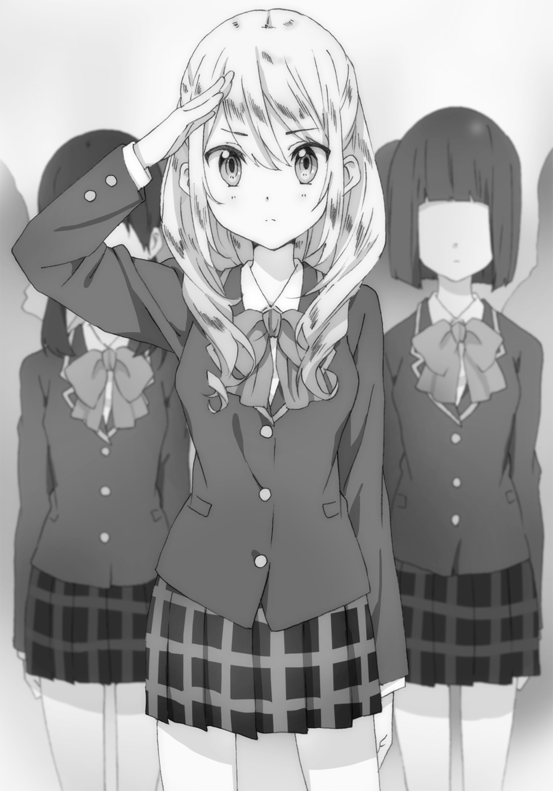
「......なに？ 春一はなんなの？ なんで女子中学生たちを率いてるの？」
「総督だからね。聖羽音マリアクルセイダーズの」
「どこに向かってるの？ シスコンを持て余すとどこへ向かってしまうの？」
シスコンであることは認めるがその態度が気に入らないので、俺は小百合の頰を縦横無尽につねることにした。それを見ていたレイチェルは、うがうが言う小百合へ好奇の目を向ける。
「あの、もしかして小百合さんですか？」
「ふえ？ あ、は、はい。小百合です......お、おす」
小百合はおどおどしながらなぜか敬礼をする。途端、レイチェルを含むクルセイダーズの面々が興奮したような声を上げ、小百合を取り囲む。
「やっぱり小百合さんだ！」「羽音ちゃんから聞いてます！」「うわさ通りキレー！」「そば屋さんなんですよねっ？」「天然なんですよねっ？」「総督の彼女なんですよねっ？」
どうやら羽音は学校でも小百合の話をしているらしい。友達としては気になる存在だったのだろう。ただ最後のセリフを言った団員はちょっと審問にかける必要がありそうだ。
「そ、そ、そう。おおむねそう。で、でもちがう！ ちがうのもある！」
女子中学生に囲まれてたじたじの小百合。しかしねじ曲がった真実を正す余裕はあるようでひと安心である。そうだ、間違いはきっぱり訂正するんだ。
「わ、私は天然じゃない！ ボケたがり！」
そっちかよ。
ちなみに俺のほうから訂正すると小百合は俺の彼女じゃないし、厳密には天然でなく、半ボケたがりの半天然である。たまにボケかマジかわからなくなる一番面倒なタイプである。
「ところで総督」
不意に、小百合を囲む集団から一人外れたレイチェルが俺に尋ねる。
「本日のこの祭、小百合さんから持ちかけられたと羽音ちゃ......マリアに聞いたのですが、総督も賛成したのですか？」
祭の本質を知らないわりに、なかなか鋭い質問をぶつけてくる現場指揮官である。
「知ったふうなことを言うようで大変申し訳ないのですが......マリアはきっとこんな目立つこと、やりたがらないと思ったので......総督もマリアに同調するのではないかと......」
「......なるほどな。さすが羽音の親友だ」
「い、いえ、いえ―――っ！ わったしはそんな―――あひははは―――っ！」
レイチェルはくねくね身体をよじらせ、独特な照れ方をしていた。この子の羽音好きは他の団員の比じゃなかったりする。だからこそ、親友であり現場指揮官なのだ。
羽音が良い友達に恵まれているようで、兄としては嬉しい。それは素直に感じる。
「......あいつ自身がやりたいって言ったんだ。恥ずかしがり屋を直したいってさ」
「そうだったのですね！ そう言えば前に聞きました、緊張しいなのが嫌だって。えらいなー羽音ちゃん！ もう大好き！」
ただ......レイチェルのことは前から知っていたが、ここまで羽音のことをわかっている子だとは、申し訳ないが思っていなかった。
彼女の口から出た、俺の知らない羽音の話。直したいなんて聞いたこともなかった。
もしかしたら俺が慢心していただけで、本当は羽音のことを、わかっていなかったのか？
「........................」
ふと思いに耽っていると、小百合がじっと俺を見つめていることに気づいた。
なにか意味のありそうな表情。意志の強さを示す大きな瞳と、その奥で光る空の『色』。なにかをわかろうとしてくれている。なにかを伝えようとしてくれている。
でもその感情は、ここではわからないということにした。
「は、春一さま、春一さま」
レイチェルが再び囲み取材を受けている小百合へ向かっていったときだ。俺を呼ぶ子供のような声が聞こえた。聞き覚えのある声だが、見ると見覚えのない人物が猫足で歩み寄ってきた。
俺を上目遣いで見つめ、びくびくしている小学生くらいの男子。中性的な顔立ちをしているため、男物のジャンパーやジーンズでなければ女の子にも見える。だれだこの子......。
「藤十郎です、春一さま」
「えええっ？ 藤十郎って......み、水猫の？」
周囲に気を配り小声で確認をとると、こくんと頷いた。ちょっと見ないうちにこんなに立派になって。
「本来の猫姿ですと、毛色のために目立ってしまうのです。なので人の多いところでは人間に化けています。追いかけられるのはこわ......不本意なので、変化の術も勉強したのです」
藤十郎はふんと自慢げに鼻息を放つ。すごいな......どこからどう見ても小学生にしか見えない。言われてみればその『色』は、たしかに藤十郎のリンドウ色だ。
「へーすごいな。いろいろな姿に化けられるのか？」
「いえいえ！ そんな器用なマネはできません！ もうこの姿でも精一杯で......ふと気を抜くと、耳や尻尾が出てしまうほどで......」
それは気をつけたほうが良いな......。というか、変幻自在に変身する妖術ってそんなすごいものだったのか。一人それができるやつを知っているが......見る目が変わりそうだ。
「それで、なにか用か？」
「はい、奈々子さまから伝言を頼まれまして。もうすぐ羽音さまの準備が整うとのことです」
「ああ。はいはい、了解。あっちで囲まれている小百合にも伝えとく」
「はい、よろしくおねがいします......」
「......なんかさっきから怯えてないか？ どうした？ 借りてきた猫のようだぞ」
「......わたくし、若い女性の集団が苦手で......猫姿の際に捕まると、よく蹂躙されるので......」
ああ......たしかにクルセイダーズくらいの女の子にとって藤十郎は、触れずにはいられない存在だろうな。男の俺ですら蹂躙したい欲求を必死に抑えているのだから。じっくり距離を縮めてから、心置きなく蹂躙する予定である。
「あ、それともうひとつ伝言が。『気をたしかに持ってね』とのことです」
「へ？ どういうことだ？」
と、疑問を呈した、そのときだった。社務所の引き戸が開く。真っ先に目を向けたクルセイダーズのだれかによる「わあ......」という感嘆の声が聞こえた。
つられて目線を向けた、その先は――そこにいるたった一人が振り撒く非日常感によって、まるで別世界のような光景が広がっていた。
そのたった一人に俺だけじゃない、小百合や藤十郎にクルセイダーズ、休更月や神社の人々、猫も杓子もすべての動きを止める。
その瞬間、十河羽音という少女は紛れもなく、全宇宙至高の巫女だった。
社務所から出てきた羽音は白衣に緋袴、千早という巫女装束。髪も天然のくせ毛を落ち着かせていた。そして小百合の言った通り、その顔には化粧が施されていた。白粉で肌をより純白に染め、唇には高貴な口紅がきらめく。
どこまでも艶やかで、どこまでも煌びやかで、どこまでも美しかった。
そんなオトナっぽい妹の艶姿に、俺は悦びと同時に心苦しい感情も抱いていた。まるで羽音が遠くへ行ってしまったような、そんな感情が、雪崩のように俺を襲う。
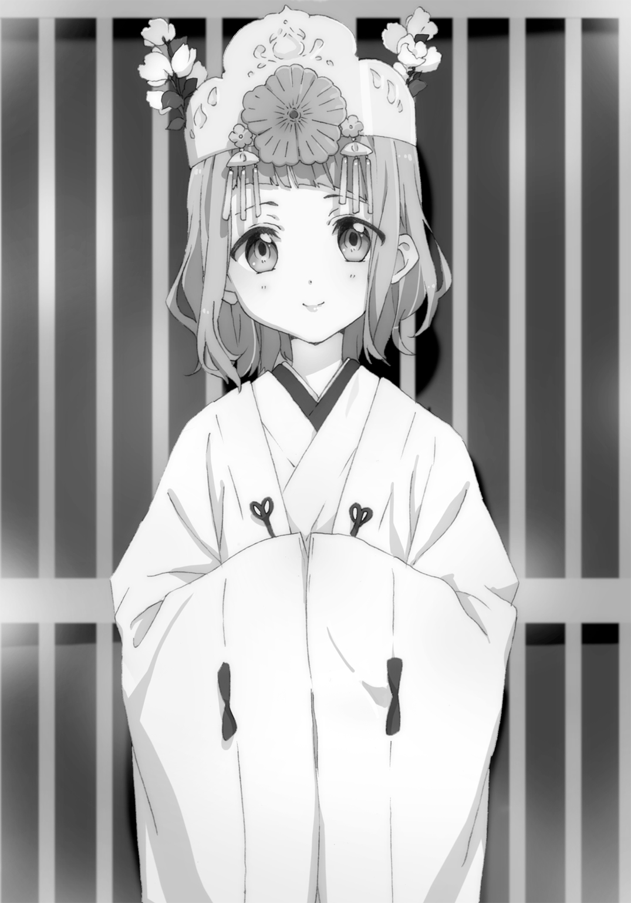
それが頰を伝う、この涙の理由だろう。
俺はひたすら頰を濡らしていた。
「は、春一さま......お気をたしかに......」
「ただいま水野橋は通行止めとなっているため、もうひとつ向こうの橋をご利用くださーい！」
「行列が通っている間、車道には出ないようお願いいたしまーす！」
「そこの方！ 写真撮影はご遠慮ください！」
「えっ？ でもそこにでっかいカメラで撮影してるやつがいるぞ」
「あの方は巫女の親族なので許可されてます！」
「うそつけ！ 親族があんないかがわしい顔で撮影するか！」
はじまった橋姫祭。天女のような気高い表情で歩む羽音とそれを囲む宮司や巫女の集団は、現在神社から橋までの車道をゆっくり進んでいる。
予想していたことだが、羽音が神社から車道に姿を現したその瞬間、現場は騒然となった。文字通り天使が舞い降りたのだから、仕方のないことだ。
しかしそこは百戦錬磨の聖羽音マリアクルセイダーズ、あっという間に観衆を落ち着かせ、現在も警護や監視、人や車の誘導など八面六臂の活躍を見せている。
彼女らにすべてを任せられるからこそ、俺は兄として精悍な表情で撮影に没頭できていた。
「はあ、はあ......羽音が......羽音が巫女に......白衣の天女に............グへヘ」
「春一ついにグへヘって言ったよ、グへヘって。いよいよだね、春一」
「断固として反対していた春一くんはどこへ行ったんだろうねえ」
背後から聞こえる小百合と奈々子さんの声は一切耳に入らなかった。俺の全神経は今、羽音をどれだけ綺麗に、臨場感をもって写真に残せるかということに傾けられているのだ。
ファインダーから見える羽音は、どれもこれもどの角度からでも、神聖にして目がくらむような佳麗さを放っている。車道を挟んだ向かいは草木の生える林であるため、背景の緑がさらに風雅さを際立たせていた。
踏みしめたアスファルトの地面に花が咲きそうな羽音の聖なる歩み。羽音は神社から橋まで五十メートルほどの距離を時間をかけて歩き、ついに水野橋へと足を踏み入れた。橋は現在不可侵領域として完全封鎖状態であるため、俺は立ち入り禁止を示すチェーンに身を乗り出すようにして羽音の後ろ姿を撮影する。
羽音が橋の中心に到着すると、儀式が始まった。
宮司さんが大幣と呼ばれる白く長い紙垂が何枚も付けられた榊の棒を、正座する羽音の頭上で何度か振る。その後紙垂は橋の上から夜粋川へ落とされた。
そして、羽音の前に御神酒の注がれたふたつの盃が置かれる。ひとつは橋姫の、ひとつは橋姫の巫女の盃だ。羽音は、ゆっくりとその盃を手に取り、口へと運ぶ。その姿を途中まで撮影すると、俺はカメラを顔から離した。肉眼で、見届ける。
理解していた。その盃に口をつければ、羽音は橋姫の巫女になる。
「........................」
俺は今どんな顔をしているのだろう。
羽音が、知らず知らずのうちに非日常へ足を突っ込もうとしている、その光景を前に。
反対していた俺の意思を封じたのは、羽音の見せた心の成長。それがすべてだった。
この儀式の本質を知らずとも、羽音が自ら選んだ道なのだから。そしてこれが羽音の願う成長の糸口になるかもしれないと、自らそう信じたのだから。
羽音は盃に口をつける。己の意思をもって、はじめての酒を口に含む。それはむせ返ることなく喉を通り、小さな身体に染み渡っていく。
そして――羽音は橋姫の巫女となった。
時は夕刻。羽音は神社に戻り、今は拝殿にて最後のお祓いをしている。俺は羽音を待ち、祭の前と同様に境内のベンチに座っていた。
オレンジ色に染まる石畳を、撤収作業に取りかかる関係者が行き交う。手水舎のあたりではクルセイダーズの一団が、振る舞われた甘酒に舌鼓を打ちながら羽音を待っていた。
俺はそんな祭のあとの風景を、ただただ眺めていた。
「おう」
「おう」
アシカの挨拶再び。不意に現れた小百合は流れるように俺の隣に座る。
「片付け作業は終わったのか？」
「終わってない。もう疲れた。きゅーけい」
小百合は、食い入るように俺を見つめている。顔色の窺い方が大胆すぎる。
「......春一は羽音ちゃんが橋姫の巫女になるの、イヤだった？」
「そりゃあ、イヤだろう」
「なんで？」
「なんでって......おまえらの世界に足を突っ込ませるみたいで......なあ」
「でも今の時代、バイトで巫女やったり、こういう神事のときだけ神楽とか巫女舞をする一般の人だって、いっぱいいる。今回のも、そういうのとそう変わらないよ」
「でも、水野橋で橋姫の巫女を立てるのははじめてなんだろ？ 日常に支障はないと言われても......不安なものは不安なんだ」
少しだけうつむいている小百合は、ここで意外な事実を口にした。
「......実は、羽音ちゃんを橋姫の巫女にって最初に提案したの......私なんだ」
「そうなのか。なんでまた」
「巫女の条件に合ってたこともそうだけど......もしかしたら私は、羽音ちゃんにほんの少しでも私たちの生きてる世界を知ってもらって、共有したかったのかもしれない......」
「........................」
「それと、もうひとつ......」
小百合は膝に置いた戸隠のケースを強く握り、武士の目で告げる。
「もし......もし万が一橋姫の巫女になんらかの問題が発生したり、最悪危害を加えるような輩がいるのなら......羽音ちゃんのほうが、守りやすいって思ったから......ごめん」
「......なるほどね」
どっかの知らない相手よりも、仲良くて互いに信頼している羽音であるほうが、近くにいやすい、ひいては守護しやすいということか。
親しい仲だからこそ、守りたいと思えたんだな。
いつもなに考えてるかわからないのっぺりした表情してるくせに、小さな頭の中ではいろいろと考えている。それがたまに空回りしたり、独りよがりになることもあるけど、こいつのそういうところは、けして嫌いにはなれない。
「......おまえは大変だな。俺を守って、羽音も守らなきゃならないのか」
かつて小百合と交わした約束――俺を守るということ。
冗談めかして持ち出してみると、一点の曇りもない空の『色』をした瞳で彼女は宣言する。
「うん。みんな守る。この手が届く範囲ぜんぶ、春一も羽音ちゃんも、守る。そのために強くなろうとしてる」
なろうとしてる、ね。
「......さて、俺も撤収作業手伝うか」
「え......？」
ぺんと膝を叩くと、小百合は不思議そうな声を漏らす。
「ここで黙って座ってても寒いだけだからな。羽音が出てくるまで、なにか手伝うよ」
「春一......」
俺の言葉に、小百合はどこか潤んだ瞳を向けた。そして、告げる――。
「いや、非力な春一に気まぐれで手伝われても邪魔になるだけだから、おとなしくしてて」
「辛辣だな、おい！」
台無しだよ！ せっかくのいい雰囲気が台無しだよ！
失礼千万な輩は両頰をつねって断罪することにした。無駄にもちもちしやがってこの野郎。
「お―――ま―――え―――な―――っ！」
「ひたひひたひ。じじつを、ひったまで」
「だれが非力だ！ 俺は死神にパイルドライバーした男だぞ！」
「もどきでひょ、ひにがみもどき。はたはらひたひわ。あとほっぺもひたひ」
もちもちの白い頰をアクロバティックにつねり続けてなんだか楽しくなってきた俺と、もはやなすがままの小百合。そんな二人の前に、一人の小学生が近づいてきた。藤十郎だ。
「春一さま、小百合さま。羽音さまですが、そろそろ穢れを祓い終えるようですよ」
「おお、そうか。こんなことしている場合じゃないな」
最後に引き締めるように頰をぺしぺし叩き、カメラの調整に取りかかる。せっかくだし近くで撮っておこう。できればクルセイダーズや小百合や俺といっしょに。主に俺といっしょに。
「そういえば藤十郎、祭の間どこにいたの？ 姿見えなかった」
小百合は弄ばれた頰をこねくりまわしながら藤十郎に問う。そういえば見なかったな。
「わたくしは歩道とは逆の林から猫の姿に戻って見学しておりました。歩道からでは、この身長では人垣で見えませんので」
「水色の猫として、だれかに見られてないだろうな。大勢に見つかるのはダメなんだろ？」
「いえ春一さま。わたくしとて妖怪の端くれ、大勢の目に触れるなどの失態は致しません」
おお、なかなかの自信だ。そこまで言うなら大丈夫だろう。
話をしていたさなか、拝殿のほうから木製の引き戸が開く音が響いた。どうやらお祓いも終わったらしい。すべての仕事を終えて、どこか疲れた表情の羽音が姿を現した。
羽音は鼻をひくつかせ、匂いで俺の位置を特定すると、百万ドルの笑顔で俺を見つける。
そして、発射される。
「んんんんんんは――――――る―――――――に―――――――――――――っっっっ！」
機動力を削ぐ足袋と草履を履いているにもかかわらず、妹の形をしたミサイルは後方に砂塵を巻き上げながら接近してくる。
言い忘れていたが、羽音には無上の可愛さだけでない、もうひとつの特徴がある。それは、類まれなパワーと武の才能を持ち合わせる、タケミカヅチ系女子であるということ。
さすればこの突進は、寿命を考えれば避けるべき代物であることは、言うまでもない。
「Come on......hit me......hit me......」
しかし......俺にはその特攻を真正面から受け止める、義務と覚悟と信念がある。なぜなら俺の身体は、羽音を抱きしめるためにあるのだから。だからこそ我が妹は......羽音は俺を――。
「コンプリートミ―――――ッッッ！」
およそ三メートル前方で踏み込み、俺に飛びかかる羽音。しっかりと抱きしめた俺はその爆発的な勢いを回転力として変換する。俺を回転軸にメリーゴーランドのように回り続ける羽音は、最高の笑顔で弾けるように声を上げる。
「はるにぃただいま―――っ！ ただいま―――っ！」
「お疲れ羽音――っ！ キレーだったぞ――っ！ オトナっぽかったぞ――っ！」
「えへへ―――――っ！」
たかだか空気抵抗や摩擦力ではそう簡単に止まらないこの愛。まだまだ回る。回り続ける。
「すごい！ これが伝説の十河兄妹ラブラブ大車輪！」
「羽音ちゃんの飛び込み抱擁という名のトペ・スイシーダをあんな風に受け止めるなんて......やはり総督のシスコン力は本物だ！」
回り続ける風景の中で、笑みを浮かべたクルセイダーズや休更月関係者たちの俺を称える拍手と歓声が耳に入る。まったく......いい気分だぜ！
その中でただ一人、最上級に呆れた顔をするのは、小百合だった。
「......なんじゃこりゃ」
さて。スキンシップもそこそこに、巫女羽音大撮影会と相成る。神社の本殿や狛犬をバックに、きっと今後着ることのないだろう麗しい巫女姿の羽音をカメラに収め続ける。この大イベントの中核を担うレフ板係には小百合を任命してやったが、やつは板を掲げながら終始不満そうな顔をしていた。まったく、なにが気に入らないというのか。
その後、最後に記念撮影としてクルセイダーズと羽音の集合写真を撮ってやることに。
「はい！ おっけーおっけーよく撮れてる」
「ありがとーはるにぃ！ あとでみんなに送るね」
「ホント？ ありがとー羽音ちゃん！ もう大好き！」
羽音を前にすっかり親友モードとなったレイチェルは、デレデレした顔で羽音の手をニギニギしていた。俺が言うのもなんだけど、この子もそこそこヤバいよな。
「あ！ そういえば私、橋に行く途中でターコイズキャット見たかもしれない！」
羽音がそんな報告をすると、クルセイダーズの面々は顔色を変える。
「ほんとっ？」「どこで見たのっ？」などと矢継ぎ早に羽音へ尋ねた。
「なんだ羽音、そのターコイズキャットって」
「知らない？ 結構昔からある都市伝説なんだよ。この街には水色の毛色をした猫ちゃんがいて、その子を見た人は幸せになるって言われてるんだよ。さっき橋まで行く途中、ちらっと林のほう見たらいたんだー。しかもこっち見てたんだよ！」
「............そうか。それはよかったなあ、羽音」
藤十郎さん？ ばっちり見つかってたみたいですよ？ しっかり伝説になってるし。
クルセイダーズの接近に恐れをなして距離をとっていた小学生姿の藤十郎を見ると、大汗をかいて焦っていた。そういうところだと思いますよ？
「しかし......そんな都市伝説、聞いたことなかったけどなあ......」
「女の子だけに広まってるのかもしれないね。他にもあるよ。この前の連続事件は妖怪の仕業で、犯人は栗髪の少女なんだけど、いろいろな姿に化けて相手を油断させる、とか」
正解！ ほぼ正解！ 情報だだ漏れじゃないですか休更月さん！ その手口に引っかかった黒髪の少女がここにいるよ！
「あと、あるおそば屋さんの前で騒ぐと、長い髪をしたそばの妖怪がそば打ち棒を持って追ってくるとか」
なんだろうなー、それも心当たりのある人物知ってるなー。あと隣の長髪から「ちっ、あのときのガキか......」という邪悪な声が聞こえてきたけど、深く考えないことにする。
「ま、まあもう都市伝説の話はいいだろ......それより羽音、今度は俺と......」
「あっ！ 私小百合ちゃんと写真撮りたい！」
「あれー？」
俺の要望をよそに小百合は羽音にこくんと頷く。二人はぴったりくっついて並ぶと、こちらに目線を送った。最初のツーショットが小百合に......と、ショックに心をよじらせていたが、ちゃんと撮ってやることにする。が......。
「小百合、表情が硬いぞ。アメイジング巫女羽音とのツーショットなんだから、笑いなさい」
「お、おお......」
本人は笑っているつもりかもしれないが、大変なことに全然笑えてない。今にもグギギ......という擬音が聞こえてきそうな、わざとらしい機械的な笑顔である。
「いや......全然笑えてねえし......」
「な、なら笑わせるようなこと言えばいいんじゃないですかっっ？ さあっ！ さあっ！」
「無茶ブリやめい」
どこまでも不器用なやつだ。ふとしたときに生まれる自然的な笑顔は、まあまあ可愛いのに。
「小百合ちゃん小百合ちゃん、あのね......」
やりとりを見ていた羽音が背伸びをし、小百合になにか耳打ちする。イチャつきやがって小百合の野郎、終わったら俺も耳打ちして羽音と間接的なアレしてやろうかと思った、そのとき。
「............ふふ」
小百合が笑みをこぼす。自然的な、まあまあ可愛い笑顔だった。
「はい！ はるにぃ撮って！」
すぐさま小百合の耳から離れた羽音は俺を急かす。慌ててフォーカスを合わせ、シャッターを切った。撮れた写真を液晶画面で確認してみると、そこには、優しく、温かく、幸せそうな笑顔で寄り添う小百合と羽音がいた。
悔しいくらい、良い写真だと思ってしまった。
「はるにぃ見せて見せてー。わーっ！ よく撮れてるよ小百合ちゃん！」
「ホントだ。これは可愛い。二人とも可愛い」
自分で言っちゃったよ。
「ほら見て見てー、小百合ちゃんかわいーっ！」
羽音はレイチェルたちにカメラごと写真を見せに行く。そのタイミングを見計らい、俺は小百合を問いただした。
「おい、さっき羽音になんて耳打ちされたんだ？」
すると小百合は少し考えたのち、生意気にも小悪魔な笑顔で答える。
「教えなひ。さっきつねったから教えなひ」
「えーっ！ おーしーえーてーよー小百合さーんっ！」
「イヤでがすーイヤでがすー」
その後何度懇願しても、小百合は教えてくれることはなかった。気になる......特に笑う直前、ちらっと俺を見たのが、気になってしかたがない。
まあでも、無理強いはよくないね。小百合相手ならいつでも尋問できるし。
そんなことよりも、いやさどんなことよりも、今の俺には大事なことがある。
「さて羽音、次は俺とツーショッ......」
「あっ！ あと奈々子さんとも撮りたいな！ どこにいるかな―――っ？」
「あれー？」
羽音はどこぞで働いている奈々子さんを探しに、駆けだしていった。俺はというと、地面に座りこんでむせび泣き、小百合に慰められるのだった。
こうして羽音の橋姫の巫女就任儀式は、つつがなく幕を閉じた。
最後まで渋っていた俺だが、小百合や奈々子さん、藤十郎にクルセイダーズなど多くの人の笑顔を見ていたら、その日の終わりには「まあ、いっか」という結論に至ることができた。
なにより、羽音が達成感に満ちた顔を見せてくれたのが、はるにぃとしては一番だったとさ。
＊＊＊
しかし、そこでめでたしめでたしといかないのがこの世のいけずなところである。
儀式から五日が経った。
代わり映えのしない日常の中で繰り広げられる高校時代のひと時を、俺は代わり映えのない相方とともに過ごしていた。
「はるちーよー、もういっそ放課後映画行こうぜー」
昇降口にて上履きから靴に履き替える俺に、隣のサクはこんな誘いをしてきた。
サクこと小金井朔名は俺の小学校の頃からの友人である。そこそこハンサムでそこそこ良いやつだが、いかんせんアホだからか彼女を作ろうとしない変わった男だ。
「なにが『もういっそ』なんだよ」
「そこは重要じゃないのよはるちー。親友の誘いなんだぜ？ 二つ返事でオーケーしてほしい俺の気持ちを察しろよ」
あと気持ちの悪いやつでもある。
断ったら面倒くさそうなので誘いに乗ってやることにした。そうしてサクとともに校門へと向かう。
そんな中で俺は、なにかサクが目を細め前方を凝視していることに気づいた。
「おいはるちー、なんか校門のところに中学生がいるぞ。しかもパツキン」
言われて俺も注視してみると、目立つ金髪はすぐ見つかった。羽音と同じデザインの制服を着ているところを見ると、たしかに中学生だ。......ん？ 羽音と同じ中学で金髪って......。
「あーあーあんなに注目されて、恥ずかしいだろうに。だれか待ってるのかな？ だとしたら待たせてるやつはよっぽど愛されて......」
「あ！ 総督！」
サクの他人事のような言葉は金髪少女の声によって搔き消される。ご主人の帰りを待っていた犬のようなその目はただ一点、俺に向けられていた。
「レイチェルか？ どうした」
校門によりかかっていた聖羽音マリアクルセイダーズ現場指揮官レイチェルのもとへ駆けよると、彼女はぴしっと背筋を伸ばし、敬礼する。
「すみません総督。マリアに関して、お耳に入れたい話がありまして......」
「わざわざここで待っていたのか？ ホントよくできた現場指揮官だ」
褒めてやると、レイチェルはくすぐったそうに笑った。
だが......そんな微笑ましい光景も、客観的に見たらあまりよろしいものではないようで。
「あ、あれ中学生だよな......？ 『総督』とか呼ばせて、敬礼させて......」「どんなプレイなんだよ......」「しかも金髪とか......何者なんだあいつ......」
麗しき我が校の仲間たちは、俺とレイチェルを見て不気味そうな表情を浮かべていた。うむ、悲しきかな、もっともだ。はじめて総督と呼ばれることに恥じらいを感じた、高一の早春。
「どうかしましたか総督？」
「い、いや、なんでもないぞ」
どうやらレイチェルは恥ずかしいとは思っていないらしい。さすればここで注意したり追い返すのはかわいそうだ。とっととその話とやらを聞いて帰すのが一番である。
「で、話ってのはなんだ？」
「はい......あの――」
その後五分ほどの会話で、レイチェルの用は済んだ。
「......じゃあそういうことで、とりあえずは様子見だな」
「はい......すみません、要領を得ず」
「いや、すごい助かる。レイチェルが羽音の親友で本当によかったよ」
「いえ、そんな......」
はにかみ、レイチェルは頭に漂うモヤを振り払うように、走り去っていった。
「............ふう」
「いや『ふう』じゃねえよ」
一息ついたのも束の間、すぐさまサクが歩み寄ってきた。
「結局誰なんだよ、あの子は」
「姫比奈レイチェル。羽音の親友で、聖羽音マリアクルセイダーズの現場指揮官だ」
「あーなんか聞いたことあるなその団体名。中学生束ねてるやつか。で、その子がなんで？」
「それはまあ、言えないよな」
「だろーよ。羽音ちゃん関連だから、余計にはるちーガードが固そうだ。......でも、果たしてそのガード、どれだけ耐えられるだろうな？」
「は？ どういう意味......？」
問いただそうとするも、サクは苦笑しながら校舎のほうを指差すだけだ。わけがわからず、首を傾げながら指し示す方角を見る。しかしてすべてを把握する。
「............おおう」
詩衣さんである。
化学室の窓にへばりつき、大きな瞳をさらに大きくさせ、こちらをひたすらに凝視する白衣の化学教師、詩衣さん。夜に見かけたら軽くホラーである。
また注目なのが、その胸部の大きなふくらみがこう、窓にむぎゅっと......。
『ああ？』
ごめんなさい。余談でしたねごめんなさい。
なにか聞こえたよ。遠く化学室から、思念みたいなのが飛んできたよ。
さすがは俺と詩衣さんの仲、以心伝心だね！
『そういうのいいから。ちょっとこっち来ようか、ハルくん』
「へ、へい......」
『へいじゃないでしょ？ はいでしょ？』
「はい......」
これもうテレパシーじゃね？
「こりゃあ、映画なんかより面白そうなものが見れそうだぜ」
一人、下衆な笑顔で心躍らせているサク。観覧料ぶんどってやろうかと思った。
我が校の新人教師白坂詩衣さんは、優しく授業もわかりやすい上に美人だと生徒から大評判である。ひとたび廊下を歩けば、その凜々しく揺れる白衣の裾を女子生徒に摑まれ、よく話の相手をさせられている。
とにもかくにもみんな大好きしーちゃん先生。
そんな彼女をなんと俺は今、独り占めしていた！ やったぜ！
「........................」
「......ハルくんどうしたの？ いきなり来たと思ったら、おもむろに正座しだして」
「............すみません」
「なにがすみませんなのかな？ 私ハルくんになにか謝られるようなことされたっけ？」
化学室の床に正座する俺を、詩衣さんは聖母のような笑顔で見下ろす。しかしながら俺には、その笑顔の裏にどす黒いなにかがうごめいているように感じてならない。
端的に言えば、詩衣さんは超怒っているのだ。すごく怖いのだ。
その怒りの理由は把握しているつもりだ。自分の教え子、それも小さな頃から知り合いの男子生徒が、女子中学生と校門で堂々と逢っていたらそりゃ先生としては看過できないだろう。それをわかりきっているからこその、積極的自主的正座敢行なのである。
「なーんかそのトーヘンボク、ズレたこと考えてそーですよ、しーちゃん先生」
百パーセント面白がって来ているサクは化学室の椅子に座り、こんなことを言う。なにがズレているというのか。テキトーなことを言うんじゃないよ。
「そんなことわかりきってます！」
「え？」
「それより、さ、さっきの金髪ちゃんは誰っ？ ぎゃるなのっ？ やんきーなのっ？」
ワードチョイスがちょっと古い詩衣さんである。
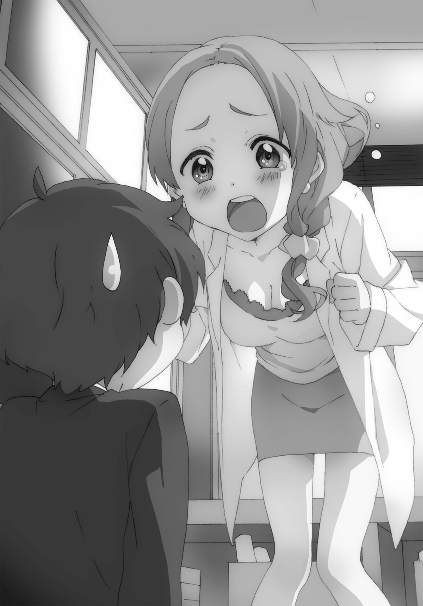
「いや、あの子はハーフですよ。羽音の親友のレイチェルです」
「あ、ああナチュラル金髪なのね。それならまあだいじょ中学生っ？ 中学生とですかっっ？」
なぜ敬語......あと『と』ってなんですか？
「ちゅ、中学生ってハルくん......中学生と一体なにを......？」
「あの子、はるちーの言うことには逆らえないらしいですよ。あの子だけじゃなく女子中学生総勢二十一名が。はるちーの言うことはなんでもするように調教したんですって」
「ちょう......」
ここで外道サクが事実を歪曲したことを言うもんだから、純粋すぎる詩衣さんは口を開けてフリーズである。そうして、冷たい沈黙の先には......。
「............ふええええハルくんがぁ―――っ！ ハルくんがいんこーじょーれ――――っ！」
「なに言ってるのっっ？」
詩衣さんはこの世の終わりとばかりに泣きわめき、サクはこの世の春とばかりに笑い転げる。絵に描いたような修羅場の完成である。
もはや正気を失った詩衣さんは泣きながら俺を指差して叫び続ける。
「いんこーじょーれ―――っ！ おまわりさはぁ―――んっ！ おまわりさはぁ―――んっ！」
「詩衣さん落ち着いてっっ！ そういうんじゃないですから話を聞いてっっ！」
「使い方わかりますか？ イチとイチとゼロ押して、最後にここを......」
「てめえはなにマジでスマホ渡してるんだサク！ おまえもう帰れや！」
「ひっく......イチと、イチと......」
「やめて――――――っ！」
なにか壮大な勘違いが発生しているようなので、ここは詳細に説明することにした。すさまじく冷静さを欠いていた詩衣さんだったが、落ち着くよう正座させてじっくり告げると、徐々に平静になっていった。副作用として徐々に顔も赤くなっていく。
「――つまりレイチェルは、俺に報告をしに来ただけなんです......わかりましたか？」
「う、うん......わかったです............ごめんなさいです」
恥で燃え尽きてしまいそうな顔を両手で隠し、詩衣さんは震える声で呟く。なにはともあれ、無事戻ってこれたようでなによりである。
「いやいやああなるのも無理ないですよ、しーちゃん先生。はるちーが女子中学生をたぶらかしてるってことに変わりはないんですから。小百合ちゃんもいるのに」
「いや全然ちげえだろ！ そんで小百合も関係ないだろ！」
サクも詩衣さん同様、小百合や奈々子さんとは面識がある。ただ妖怪や休更月などの非現実的なことは教えていない。あくまで俺の知り合い、という形で知り合っただけだ。
「あ、あの......」
俺と互いに正座して向かい合っている詩衣さんが、おずおずと手を挙げた。もう正座する必要もないのだが......詩衣さんがやめようとしないので、俺も解除できない現状である。
「それでそのレイチェルちゃんって子は......なにを報告しに......？ わざわざ来るってことは、羽音ちゃんになにかあったの......？」
よく見ればもうその表情から恥ずかしさは消え、心配そうなものに変わっている。
その内容、気になるのはあたりまえだ。詩衣さんは羽音が小学生の時から通っている空手道場の娘さんなのだ。つまり羽音と詩衣さんも非常に長い付き合いになる。
ついでだが、サクも珍しく真剣な顔で俺を見ていた。サクだって、俺たちが小学生の頃から羽音を知っているのだ。
こうして考えると、本当に羽音はいろいろな人から愛されている。でもそれは、羽音がそのすべての人を愛しているからなのだろう。だからこそ、羽音の周りは笑顔で溢れている。
なら、羽音だってちゃんと笑顔でいるべきなんだ。
そこまで考えたら、ここで兄としてとるべき行動は自然と決まっていた。
「俺やレイチェルの杞憂かもしれないですけど......羽音の話聞いてもらっても良いですか？」
尋ねると、詩衣さんとサクは大きく頷いた。
俺は、数分前のレイチェルとの会話を思い出しながら、二人に語りはじめる。
そのときレイチェルは周囲の視線を気にも留めず、ただ俺だけをどこか奥歯にものが挟まったような顔で見つめていた。
「羽音ちゃ......マリアなんですが......」
「いや、今は羽音ちゃんでいい。話しやすいように話しな」
「......はい。羽音ちゃんなんですが......ここ数日、ちょっと......本当にちょっとなんですけど、様子がおかしいような気がして......」
「具体的には？」
「......笑顔が減った、気がします」
レイチェルは少し俯くと、ひとつ乾いた咳払いをする。
「羽音ちゃんって、話をしているときも、話を聞いているときも、基本笑顔じゃないですか。びっくりするような話なら大げさに驚いて、しんみりするような話なら悲しそうに目を潤ませるけど......それ以外はずっとずっと地上に舞い降りた天使のように微笑んでるじゃないですか。その顔がもうとんでもなくて、極限までの企業努力が施されたカメラであっても捉えることのできない無限の可愛さを振り撒いているじゃないですか！ もう大好き！」
唐突にテンションが変貌しおった。やはりこの子の羽音愛は他の子とは段違いだ。
もしかして......俺も羽音のこと話してるとき、こんな感じなの？
「それなのに最近その笑顔が減った......というより考え込んでいるようなときがあって......。本当にちょっとの違和感で......他の子はあまり感じないみたいなのですけど......」
無理に作った笑みを顔に張りつけ、冷たく乾いた風が煌びやかな金髪を激しく乱す。レイチェルは頭を搔きむしるように、崩れた髪型を手ぐしで整えた。
俺はその話を静かに頭の中で嚙み砕き、受容していく。
そのとき俺は疑う余地もなく――ホッとしていた。
「......気のせいじゃないかもな、レイチェル」
「......え？」
「俺もだよ。俺にも羽音が、そう見えてたんだ」
その言葉にレイチェルは、今にも崩れそうな微笑みで応えた。
話を終えると、奈々子さん、サクはともに難しい顔で唸る。
「羽音ちゃんから笑顔が減って、考え込むような仕草......正直俺には、考えられないな......」
独り言のようなサクのこの言葉も理解できる。羽音は元来心にある感情を素直に出す、喜怒哀楽を非常にわかりやすく表現する子なのだから。
だが、詩衣さんはまた別の視点からこの件を捉えているようだ。
「もしかしたら羽音ちゃんもぼちぼち、そういう時期なのかもねえ......」
「そういう、時期......？」
「まあ......有り体に言えば、思春期？ もうすぐ中三なんだもんね......自分の中のいろいろなことがわかって、いろいろなことがわからなくなってくるんだよねえ」
詩衣さんはしみじみ呟くと、懐かしむように目を細めて膝を組んだ。大人っぽくて、ちょっと色っぽい。そんな詩衣さんに、サクが茶化すように尋ねる。
「お？ 体験談ですか？」
「私に限った話じゃないよ。純粋だった子があるときを境に思い悩むようになる、なんてのはよくある話でしょ？ それが転じて自分を傷つけたり周りを傷つけたり......」
前に奈々子さんも言ってた反抗期とも重なる内容だ。よく聞く話ではあるが......正直言って、俺にはあまりピンとこなかった。
「俺は......思春期とか反抗期みたいなのは、なかった気がするけどなあ......」
「俺はあったぞ。中学のときとか、親父に反発しまくってた」
この発言に、思わずサクを二度見する。こいつとは小中高と同じ学校で昔からよくつるんでいたけど......そんな素振り見せたことなかったぞ。
「そ、それは知らなかったな」
「外では見せないようにしてたんだよ。一時期険悪な空気が家ん中充満してたなあ......」
ノスタルジックに笑うサク。なんだかちょっとちがった雰囲気醸し出しやがってムカつくな。
「ハルくんは......小学生の頃あの事件を経験して、乗り越えたってこともあるから、もう心は十分に落ち着いちゃってたのかもね」
あの事件。俺が小学生の頃に遭遇した、それなりに痛ましい事件だ。
六年前に起きた、児童館立て籠もり事件。俺は人質として犯人の男に拘束されていたが、犯人の本質的な優しさに触れ、心を許していた。しかし機動隊の突入とともに結末を悟った犯人が、拳銃で自らのこめかみを撃ち抜いたことで、俺の心は破壊された。
そんな事件から俺は長年心に深い傷を負っていたが、羽音やサクや詩衣さん、ついでに小百合のおかげで、今ではトラウマも大分克服できている。
ちなみにこの『色』を見るという不可解な能力は、そのときに発現したものだったりする。安っぽく言えば、意識を失うほどの衝撃的な経験をしたことで目覚めた能力なのだ。
よくよく考えれば......この能力でイヤでも人の本質を見抜けるようになってしまったのも、反抗期らしきものがなかった原因なのかもな。
「ところで......詩衣さんにもあったんですか、そんな時期」
現在の優しい詩衣さんからは想像できないが、聞いてみる。詩衣さんは顔を少し紅潮させながら、こくんと頷いた。
「ハルくんには前に言ったよね？ 教師を志した理由とか、時期とか......」
「ああ、はい。憶えていますよ」
たしか件の事件を経験した俺が再び立ち上がるまでの過程を見ていて、教育の大切さを知った......とかだったな。改めて考えるとこそばゆい。
コホンとひとつ咳払いを挟むと、詩衣さんは自分の思春期について話しはじめる。
「教師って目標を得るまでの私はホント、ろくでなしだったよ。特に中学の頃は、実家の空手もイヤになってやめて、それどころかなんで私は道場の娘なの、なんてくだらないこと考えては両親に反発してたな。親のちょっとした一言がカンに障って、お父さんなんかの子供に生まれたくなかった、とか言って......口では言えないようなもっと恐ろしいことも考えてたな」
「ま、まじですか......？」「想像つかねー......」
詩衣さんにそんな荒れた時期があったなんて......にわかに信じ難い。
「でもそういう、自分の中にある自分でもびっくりするような黒くて怖い感情の存在に気づくのも、中学くらいなんだよね。そして真面目だったり純粋な子ほど、自分のものとは思い難いその感情に戸惑って、独り抱えて悩んじゃったりするの。だから実は私みたいにぜんぶ吐き出しちゃってたくらいのほうが、いいのかもね」
そこまで言うと詩衣さんは「はい終わり！ はーはずかしっ」と言って顔を手で扇いだ。
詩衣さんの見解を聞いた上で、俺から見た羽音の現状を鑑みる。さすれば考えられる仮定が、ひとつ挙げられる。
「じゃあ、俺やレイチェルが感じた羽音の小さな変化は......思春期の予兆？」
「その可能性は十分にあると思うな。羽音ちゃんはピュアで、人間的にも真面目だから、自分がわからなくなりかけているのかもしれない。あくまでかもしれない、だけどね」
必要以上に心配しないよう、詩衣さんは俺を諭してくれる。
羽音はずっと純粋で、感情がすべて表に出る子だった。だからこそ羽音のことはなんでもわかる、なんて勘違いをしていたと気づいたのは、つい最近のことだ。
つまり俺の目に見えるものだけじゃもう、わからないのかもしれない。
ただし今までの話を聞けばそれが、きっと成長の痛みなのだと、受け入れることはできる。
「......詩衣さん、貴重な意見、ありがとうございます。詩衣さんに相談できてよかったです」
「いえいえ。羽音ちゃんは元々良い子なんだから、心配しなくてもきっと自分で答えを見つけられるよ。でもなにかあったら、またいつでも言ってね」
詩衣さんは柔らかな表情で、優しくそう言ってくれた。
そこでアホのサクが、穏やかな空気を瓦解させるようなことを言いだしやがった。
「いやーなんだかんだ、しーちゃん先生って先生なんだなー。なんだかんだ」
「な、なんだかんだってなにっ？ なんで二回も言ったのっ？」
うむ。詩衣さんには悪いが、言い得て妙だと思ってしまった。
詩衣さんは良い先生だけど......どうしても俺としては幼馴染みのお姉さん感が強すぎて......正直先生だと思っているときのほうが少ない気がする。当人には言えないけど。
「ほら。はるちーも言い得て妙だ、って顔してますよ」
言っちゃったよ。
「ハ、ハルくん......？ 私普段そんなに頼りない......？」
あげく詩衣さんは本気でショックを受けている模様。「う......うう......」とか言って、目尻にたっぷりたまった涙が今にもこぼれ落ちそうな顔で、俺に問いかける。
「わ――っ、わ――っ！ そんなことないですよ！ ホント年がら年中頼りにしてますって！ 俺には詩衣さんくらいしか頼れる人いないっ......詩衣さんじゃなきゃダメなんですって！」
「えっ......ほ、ほんと......？」
そして抜群にちょろ......疑うことを知らない詩衣さんは俺の言葉もばっちり受け入れ、表情に晴れ間を見せた。
「ほう、詩衣さんのどんなところが頼りになるって？ 具体的に言ってくれよ、はるちー？」
おまえはなぜそう火種を増やそうとするのか。
「そ、それはもちろん優しくて、相談にも親身に乗ってくれて......それで......」
目を潤ませて俺の回答を待つ詩衣さんを前に、もはや脳が正常に回らない。
詩衣さんがほしいのは、先生として頼りになる印象だ。なんだ......なにが最適だ......？
そのとき、適した単語が浮かんだ気がした。それを、俺はなにも考えず言い放つ。
「ホント、良いお母さんって感じですね！」
「................................................」
刹那、詩衣さんの顔から感情が失せた。
うん。改めて思えば、ダメだよねこれ。若い女性に一番言っちゃダメなやつだよね。
震撼を覚えるほどの失言を自覚した俺は即刻サクにフォローを求める。しかし......。
「俺これからバイオリンの稽古あるからー」
ここぞとばかりに薄情な悪友は、そそくさーと化学室をあとにしていった。
「ウソつけてめえ！ おまえにそんなしずかちゃんみたいな予定ねえだろ！」
「ハルくん............？」
「ひぃっ！」
気づけば背後から俺の肩を摑む、白魚のような手がひとつ。指がほっそりとしている綺麗な手だが、俺にはそれが万物を握りつぶす悪鬼のそれのように思えた。
おそるおそる振り向けばそこには、詩衣さんの恐ろしくクールな無の表情。だがそれは、徐々に移り変わっていく。再び目に涙がいっぱいたまっていき、頰はみるみるうちに膨らみ、顔色はじっくり時間をかけて紅色にグラデーションしていく。
それはまるで爆発のカウントダウンのようで、覚悟を決める猶予としては十分だった。
しからば詩衣さん、爆ぜる。
「ハルくんッッッ！」
生徒から大評判、みんな大好きしーちゃん先生。その日、化学室にてぶっ放される彼女のどこか悲愴感を孕んだ説教の声は、陽が落ちるまで響き渡っていたとさ。
＊＊＊
すったもんだはあったものの、詩衣さんのおかげでおそらく事態の把握ができた。
どうでもいいけど詩衣さんとの会話の結びはどうしてこう、すったもんだが多いのだろうか。うんそうだね。おおむね俺が悪いんだね。今後気をつけます。くわばらくわばら。
不毛な閑話は休題し、全宇宙至高の妹について考える。
レイチェルが言うには、学校でなにか変わったことがあったわけではないらしい。なにがしかに意地悪をされたなら確実にクルセイダーズが勘づくし、成績も変わらず中の下だ。
では家ではどうかというと、やはり変化はない。元気に毎食ごはん三杯で、規則正しい起床就寝時間も変わらない。
だが、笑顔が少ないという違和感はたしかに存在する。
そしてもうひとつ、詩衣さんやサク、レイチェルには言わなかったが、俺にしかわからない異変が羽音には見られた。
羽音の『色』にほんの少し、黒いモヤのようなものが見えるのだ。
温和で安心感のある羽音のパステルグリーンを覆う、陰りのような存在。それが微かにだが捉えられた。こんな状態はこの能力を持って六年になるが、はじめて見た。はじめてだからこそ、えも言われぬ不安感がある。
詩衣さんが言うには、その原因は思春期にあるらしい。ならば俺の見た黒いモヤとは、詩衣さんの口にした『自分でもびっくりするような黒くて怖い感情』なのだろうか。
成長によって『色』が変化することは実はよくある。特に小学校の同級生などと再会すれば、如実に変わっている人もいる。人間の本質だって諸行無常なのだ。
それはさておき、もし詩衣さんの予想が正しければ、きっと俺の出る幕はないのだろう。
あまり経験のない俺が言っても説得力はないが、その治療には自分自身でぐるぐる考えて、行動して、心に抗体を作るのが一番なのだ。家族、それも異性の手出しは無用だ。
妹の成長とその後の幸せを本当に願うなら、兄として時には木の上に立って見守ることも必要だろう。いや、これは親か。草葉の陰から......いやもっとちがうな。
とにかく俺は、断腸の思いで静観を続けることを決めた。
しかしながら、やっぱりこの世はいけずというものだ。願うほど、順調にはいかない。
詩衣さんに相談したその翌日、ついに羽音は体調を崩した。
「おじゃまします」「おじゃまーっ！」「おじゃ」
「はい、いらっしゃーい」
我が家に訪れた三人を、俺は招き入れる。上から詩衣さん、奈々子さん、小百合である。珍しい取り合わせの来客に、リビングで照明の引きヒモ相手にスパーリングをしていた母は、わざとらしく驚くフリをする。
「あらあらどこの美人三姉妹かと思った。大学生に高校生に中学生と組み合わせもバッチリね」
「そんな十河さん、私はもう社会人ですよお」
「私は年相応。年相応でコケティッシュ女子高生小百合ちゃん」
「ナチュラルに私を中学生枠に入れたね、しーちゃん、小百合ちゃん。あたいだって社会人ぞ」
「いやいや奈々子ちゃん、いつまでも若く見られるほうが今後楽よ？」
「えへー？ そんなこと言ってママさん、こうはなりたくないって本当は思ってるでしょー？」
「そうね。絶対イヤ」
「........................」
この瞬間、口撃級王者が決定。我が母が頂点に立った。
チャンピオンの「三人ともゆっくりしていってねー」との言葉を背に、俺は三人を引き連れて階段を上る。その途中、小百合が俺の服を見て、なんとなしに言った。
「春一......その服似合わないね」
なんとなしに言うわりには、そこそこ毒を持っていた。
今着ている服は、スタジャン。ドラマの主人公が着ているのを見て迷わずネットで注文したが、あまりの似合わなさに絶望した軽い黒歴史だった。
「う、うるせえな。だから部屋着として使ってるんだろ」
「うーんスタジャンって感じじゃないよねー、春一くん」
「やめて！ 自覚してるからもうやめて！」
もう絶対スタジャンなんて買わない。こんな思いをするならもう絶対買わない。
ちなみに笑いを隠そうとしている詩衣さんの姿が、一番堪えた。優しさはときに無情。
部屋の扉をノックして入ると、布団にもぐる羽音が具合の悪そうな顔色を一変させた。
「わーっ！ 三人ともどうしたのーっ？」
「羽音ちゃんのお見舞い」
三人を代表した小百合の返答に、羽音のテンションは最高潮となる。
昨夜、俺は羽音が体調を崩したというメールを小百合に送った。返信は簡潔に一言、『明日行く』。さらにその情報が奈々子さんと詩衣さんにも行き渡ったらしい。結果、三人による我が家訪問と相成ったわけだ。
日曜日で此花庵は定休日とはいえ、わざわざお見舞いに来てもらえるとは思わなかった。好意の対象は羽音だが、兄としては嬉しい限りだ。
挨拶もそこそこに、俺たちは羽音の部屋にて雑談に花を咲かせる。
「思ったよりも元気そうでよかったよー、羽音ちゃん」
奈々子さんがそう言うと、羽音は頭を搔いてエヘヘと笑う。
「ちょっと身体がだるくなっただけですよー。なのにはるにぃが大げさに言うからー」
「体調が悪いのに変わりないだろう？ それに昨日の夜なんてもっと顔色悪かったんだぞ」
瞳の『色』を覆う黒いモヤも、変わらずうっすらと見えるし。
「春先で気温が不安定だからね。ちょっと疲れちゃったんだよ」
まさに羽音のことを金曜に相談したこともあってか、詩衣さんはどこかいつもとはちがう雰囲気で話す。小百合や奈々子さんよりも心配に思ったことだろう。
だが、様子がおかしいのはそれだけが理由ではない。
「いやー詩衣さんも貴重な休日なのにわざわざすみません。ほんっっっと頼りになります！」
「............（ぷいっ）」
はい、この通り詩衣さんはうちに来てから俺とまったく目を合わせてくれない。俺が目を向けると必ずぷいっ、と顔を背けるのだ。もちろん原因は承知している。金曜日のすったもんだだろう。いまだ万死に値する俺のお母さん発言が尾を引いているのだ。
でも、怒っていても羽音のために見舞いに来てくれるところは、本当に優しいと思う。まともにしゃべれずやきもきするが、ほとぼりが冷めるのを待つしかない。
ふと、俺の肩がつんつんと突かれる。羽音だ。
「また詩衣さん怒らせちゃったのー？ どうせまたデリカシーのないこと言ったんでしょー？」
羽音が耳元でそんなことを言ってくる。『また』ってどういうことだ羽音？ おおむね合ってるけど、そんな頻繁には怒らせてないぞ？
「ちゃんと女心考えないとダメだよー。だって詩衣さんは......」
そこでなぜか羽音の声が途絶えた。不思議に思って肩越しに羽音の顔を見る。自分自身の発言にびっくりしたような、不可解な表情だった。よく見ると、顔色が少し青白くなっている。
「どうした、羽音？」
「......いや、なんでもないよ。とにかくちゃんと詩衣さんを見てあげてねっ」
最後に耳打ちすると、羽音は小百合たちと何事もなかったように話す。気のせいだと......考えていいのだろうか。
「そういえば、これ。お見舞いの品」
モヤモヤを抱える俺をよそに、能天気な小百合がビニールパックを取り出し羽音に差し出す。
「あっ、もしかしてこれ、そば？」
小百合は横一列の前髪を縦に揺らした。小百合特製そばの生麵だ。
妙に凝り性な小百合は、そばを打つことに常日頃心血を注いでいる。その甲斐あってたしかに小百合のそばはコシがあってうまい。うまいのだが......。
「おい......それ戸隠で打ってないだろうな......？」
小声でこっそり小百合に耳打ちする。
小百合の得物、如意棒戸隠は大河家に代々伝わる家宝らしい。しかし所有者の小百合には、あろうことかその武器をそば打ち棒として使う悪癖がある。見た目はそば打ち棒そっくりだが、妖怪などバシバシ叩いている棒で打ったそばは......なんかイヤだ。
「これは奈々子さんに言われて、普通ので作った。......別に戸隠で作っても問題ない。むしろ戸隠じゃないと本気が出ないから、これには実力の八割も発揮されていない」
理解不能なこだわりを抱えていらっしゃる小百合は、むすっと答えた。
いやはやよかった......これで羽音におかしなもの食わせずに済む。
そのとき、小百合に耳打ちしていた俺は強い視線を感じた。もとを辿ると、そこにあったのは羽音の顔だ。笑顔の似合うその表情は、どうしてか苦しそうなものだった。
ただ俺の目線に気づくと、羽音は元の笑顔に戻った。
「小百合ちゃんっていつもそば作ってるの？ バイトもそば屋だし家でも作ってるんでしょ？」
此花庵はこの街における休更月の拠点ではあるが、羽音や詩衣さんはそれを知らない。小百合は普段は高校生で、此花庵でバイトをしているという設定となっていた。ちなみに奈々子さんは探偵で、此花庵では同じくバイトという設定だ。
「うん。そばは私にとって仕事であり、趣味であり、生き甲斐であり、ひつまぶし」
「それを言うなら『ひまつぶし』だし、その流れで暇つぶしって辻褄合わないし、私にとってそばはひつまぶしってもうどういうことだよ。謝れ、そば屋にもウナギ屋にも謝れ」
「さすが春一くん、小百合ちゃんのボケたがりと天然が融合した複雑なボケを、見事余すところなく突っ込んだね」
「ハルくんのツッコミはついに次元を超越しはじめたね」
この上なく褒められているのだろうが、どうしても嬉しいとは思えない。
ツッコミも済んだところで話題を戻す。羽音はニコニコしながら小百合をおだてていた。
「じゃあ小百合ちゃん、そばだったらもう右に出るものはいないね」
「うん。でも頂点に立つ人間として進化も続けている。最近は創作そばにも挑戦してる」
「そこまでは言ってないけどな」「なんなの小百合ちゃん？ 創作そばって」
俺のツッコミは無視し、詩衣さんの質問にだけ小百合は答える。都合いい耳をしていやがる。
「ただのそばじゃ芸がない。多国籍の人に愛してもらえるグローバルなそばを鋭意開発中」
鼻息荒く小百合は語る。本当に趣味に留まらないものなんだな、小百合にとってそばとは。だってもう目がちがうもの。
「今度の水曜日、うちで創作そばの試食会を催そうと思っている」
「そ、そんな大規模な計画なのか......？ どんな人たちが来るんだ？」
「私だけ」
「............」
それ会とは言えねえよ。おまえの世界のみで完結してるじゃねえか。
こいつの創作そばとか、大丈夫か......？ そばは一級品のくせに料理はまったくできないし。小百合の異次元な思考で『創作』とか......危険な匂いしかしない。
「春一も、よかったらどうぞ」
「す、水曜日か......その日はバイオリンの稽古が......」
「............」
「い、いや冗談です......ありがたく参加させていただきます......」
普段は無表情なくせに、こういうときだけ心を打つような顔をしないでほしい。
不意に、ベッドからぽすっというなにかが落下したような音が聞こえた。
「......ハアッ......ハアッ......」
「は、羽音ッ？」
見るとそこには、横たわる羽音。マラソン直後のように息を荒くしているその顔は真っ青だ。目を見ると、『色』を覆う陰が濃くなっている。突然悪化した容態に、俺は動揺を隠せない。
「春一くん、ちょっとごめんよ」
そう言って俺を押しのけたのは、奈々子さんだ。うろたえる小百合や詩衣さんとはちがい、一人冷静な奈々子さんは羽音の首筋や脈、額を触診する。
「羽音ちゃん、いつぐらいから、どんな症状が出たか、わかる？」
奈々子さんが柔和な語り口でそう尋ねると、羽音は息苦しそうにしながら答える。
「今週くらいからっ、だんだんっ......胸が、じわじわしめつけられるみたいにっ......」
奈々子さんは顎に手を当て、見透かすような瞳でじっと羽音を見つめる。数秒ほどすると、奈々子さんは変に落ち着いた口調で、問う。
「............もしかしてその症状......小百合ちゃんやしーちゃんを見てるとき、二人について考えてるときに、多くなかった？」
「ッ！」
羽音は目を見開いた。ひどく動揺した様子で、釈明するように答える。
「ちがっ......さ、小百合ちゃんは友達でっ......詩衣さんはお姉さんでっ......大好きなのに......私っ......わたっ......ううぅッ！」
言葉の途中で羽音は胸を押さえ、ベッドの中で縮こまる。その姿を前に、全身の血が凍る。
「羽音ッ！ な、奈々子さんッ！ 一体......？」
「......まず春一くんに謝らなきゃいけない。春一くんの意見が、正しかった」
その口調は、苦痛と己への怒りを孕んでいた。
「この症状は、妖力に拒絶反応を示す人のそれに似てる......」
「なッ！ 妖力っ？ なんで羽音が............まさか......」
「羽音ちゃんはおそらく、橋姫の巫女になったことによる、呪いのようなものにかかってる。そしてその要因は......」
途中から、奈々子さんの声を意識が受けつけなくなった。
俺はベッドからすがるように伸ばされた羽音の手を握る。いつだってぽかぽか温かい手は、うっ血しているようにひんやりと、俺の体温を吸い取る。
青白い顔で苦しむ羽音、焦る奈々子さんや小百合、詩衣さんの表情、冷たい手が連想させる最悪の事態、すべてが俺の心を真っ黒な恐怖で埋め尽くす。
「羽音ッッ！」
叫ぶようにその名前を呼ぶ。羽音は大丈夫だよ、と言いたげに口角を無理矢理上げてみせた。
俺にはそれが、笑顔には見えなかった。
此花庵に多少の治療・検査機器があるということで、ひとまずそこへ羽音を運ぶことになった。タイミングの悪いことに母が買い物かなにかに行ってしまったため、車は出せない。
そこで俺が羽音を背負い、この足で此花庵まで連れていくことにした。小百合と詩衣さんも付き添い、奈々子さんは先に行って準備をすると言って、飛び出していった。
急ぐ必要はないと奈々子さんには言われたが、耳元で辛そうに呼吸をする羽音を思えば、そんな余裕は出てこない。俺は揺らさないよう心がけ、できるだけ速く向かう。
その途中、俺たちは水野橋を渡ることとなる。
この橋のせいで......と恨めしい思いがないわけではないが、そんな場合じゃない。俺は踏みつけるように橋の歩道を行く。
「......ん？」
橋の中間地点にて、歩道のど真ん中に仁王立ちし、空を眺める人物がいた。
その男性は着流しに羽織と今時珍しい和風な恰好だ。そんな素敵な兄さんだが、いかんせん道の真ん中を陣取っているため、正直邪魔だ。なので俺は一声かける。
「すみませ......」「苦しそうだな、その女子」
そこへ、俺の声に意図して重ねるように、その男性が話しだす。身体と顔をこちらに向けると、一言つけ加えた。
「いや......橋姫の巫女、と言うべきか」
「なッ！」「春一ッ、下がって！」
俺が驚きの声を上げるのと同時に、小百合が俺を押しのけて先頭に立つ。その手にはケースから取り出した戸隠。それを地面に突きつけると、かけ声を放つ。
「結界！」
直後、小百合を中心に結界が展開する。妖力のない、または魔術の使えない者を除外するこの空間。先ほどまで歩道を歩いていた人は一瞬にして消え失せた。
だが、俺の背中には変わらない重み。苦しそうな表情で眠る羽音は、結界内でもちゃんとその姿を俺に見せている。証明されたようなものだ。今羽音の中には、妖力がある。
ちくりと胸を刺す感情は一時忘れ、俺は現状に意識を集中する。羽音を含めた俺たち四人を前に、着流しの男性はニヒルな笑みを見せる。この人も、妖怪ってことか......。
「春一、気をつけて。この人そこそこ危険人物」
「き、危険人物......？」
「生で見るのははじめて。でも奈々子さんに写真見せてもらったことある。大鳥見山の......」
「きさまッ！ この橋から離れろッ！」
説明の途中、子供のような甲高く、しかし穏やかでない声が背後から聞こえてきた。小学生姿の藤十郎である。容姿に似合わず激しい剣幕だ。こんな藤十郎、はじめて見た。
藤十郎は俺たちの前に立つと、男性へ怒鳴る。
「不穏な空気を感じて来てみれば......やはりきさまかッ、三鉾坊ッ！」
「橋姫の使いか......我にそのような口をきくとは、偉くなったものだな」
男性は余裕の笑みを浮かべる。火花が目に見えるような、険悪な雰囲気だ。
「さ、小百合......なんなんだあの人......？ 藤十郎があんなに敵意を見せるなんて......」
「あの人は大鳥見山に住む川天狗たちのリーダー。おそらく、前に話していた橋姫の座を乗っ取ろうとしている妖怪」
「なっ......あの人が......？」
「そうさ。おまえさんらは初めましてだな」
俺たちの会話が聞こえたのか、男性は藤十郎には目もくれず、こちらに涼しげな目を向ける。
「我こそは夜粋川の水神にふさわしき、大鳥見山川天狗一派が頭領、大鳥見山三鉾坊だ」
言下、三鉾坊と名乗る男性の背中から、漆黒の翼が広がる。両翼合わせて二メートルほどの幅を持つ、大きな翼。なるほど、天狗だ。
ちなみに大鳥見山とは街の北にある、標高五百メートルほどの山だ。昔からあの山には天狗が出るなんて言われてきたが......まさか本当にいたとは。それと、『川』天狗ってなんだ？
威嚇ともとれる三鉾坊のその行為にも、藤十郎は感情を昂らせる。
「ふざけるな！ 水神にふさわしいのは他でもない水野姫さまである！ 撤回しろ！」
「ではその水野姫とやらは今どこにいる？ この街にいるのか？ 橋の守り神であり水神であるにもかかわらずあの奔放さで、ふさわしいと言えるのか？」
「それは............もっともである......」
認めちゃうのかよ。そこはウソでもがんばれ藤十郎。
「し、しかしだからといって貴様がふさわしいわけではない！ 貴様らが統べていた頃の夜粋川は、我々にとって窮状でしかなかった！ それを救ってくれたのが姫さまなのだ！」
「戯言を......夜粋川は我ら川天狗一派が百数十年に渡り守ってきたのだ。それを勝手に奪ったのがこの橋と、あの憎き橋姫ではないか。我が水神の座を取り戻したとて、奪われたなどと言われる謂れはない。夜粋川は元々我らのものだ。あの無能な女などには任せておけん」
なにか俺には把握しきれないやりとりが、妖怪の間で激甚と交わされている。どういうことだ？ 元々夜粋川は、あの三鉾坊たちが統べていたのか？ 尋ねたいがそんな雰囲気ではない。
特に藤十郎は、ついに怒りが限界に達したようだ。
「き、貴様ッ......今なんと言ったッ......」
「何度でも言ってやる。あの無能で野放図で愚かな女に夜粋川水神など......」
「貴様ああああああああッッ！」
怒号を放ち、藤十郎は三鉾坊へ襲いかかる。さすが水猫というだけあって、駆ける速度は人間離れしている、が......。
「ぐあっ......！」
三鉾坊は飛びかかる藤十郎を顔色ひとつ変えず、はたくように薙ぎ払った。吹っ飛ぶ藤十郎は橋の欄干に背中を打ちつけ、ポンッという音とともに猫の姿に戻ってしまう。
「藤十郎ッ！」
俺の呼びかけにも、倒れ込む藤十郎は微動だにしなかった。
「こんな非力で橋姫の使いとは、笑い話にもならないな」
三鉾坊の冷ややかな笑みに、小百合が身に纏う雰囲気を一変させた。ゆっくりと一歩前に出て、戸隠を構える。憤りを抑えつけている様子が、華奢な背中から伝わる。
「......なにが目的......？」
静かな問いを、小百合は投げかける。
三鉾坊は小百合のただならぬ様子を見ても屁でもないという笑みを見せる。
「巫女を立て『場の力』を底上げした水野橋において、水神の座を譲り受けるにはどうすればいいか。答えは簡単、先週その巫女がやったように、橋で儀式を行う。しかしこれは神譲りの儀。成功させるには橋姫の力を持つ者が必要だ。つまり水猫と......その巫女だ」
「待てよおいッ！ それはつまり、おまえは羽音を......」
「なに、危害は加えん。儀式の間そこにいてもらうだけさ。おまえさんはたしか巫女の兄だな。おまえにとっても悪い話ではないと思うが。もし我が水神の座についたら、巫女の任を解いてやる。そうすればその苦しみからも解放されるだろう」
「なッ......？ い、いやおまえの言うことなんて、信用できない！」
「第一印象で判断するのはよくないぞ、少年。短時間で理解した気には、ならないほうがいい」
あいにく第一印象でひとを明確に判断できる所以があるのだ。
やつの『色』は菖蒲色、強くどこか危険な野心と欲望が入り混じる。少なくとも第一印象で信頼できる『色』ではない。
「とにかく。許可もない勝手な神譲りなど言語道断。休更月として、看過できない」
小百合はいきり立つ俺を手で制すと、三鉾坊に言い放つ。
「威勢がいいな......。小娘、名前は......？」
「大河小百合」
「やはり、おまえさんか。最近この街に来た休更月の若きエージェント、大河小百合とは。是非とも一戦交えたいと思っていたのだ......」
「......ッ！」
瞬間、小百合はあらぬ方向へ顔を向け、とっさに戸隠で身体を守ろうとする。
しかし、気づくのがわずかに遅かった。
それは、『あらぬ方向』からの、神速の奇襲。
「――――ひっく」
「ッ......グッ！」
そこで起きたことは、俺にはなにひとつ見えなかった。
気づけばうめき声を残し、小百合が目の前から消えていた。直後、車道を挟んだ向かいの欄干が、乾いた大きな音を立てる。
見ると、欄干にはりつけにされたような状態の小百合が、ゆっくりと地面に崩れ落ちていく様子が網膜に刻まれた。強烈な恐怖感が、背筋を襲う。
「まあ我ではなく......部下が、な」
満足そうな声色で言う三鉾坊を見る。その背後に、先ほどまでいなかった人影がひとつ。桃色に染まった山伏の装束に一本歯の高下駄、そして黒き翼の少女。高い位置で結んだポニーテールを風で揺らしながら、こちらをじっと見つめている。
「なにが起こったのかわからない顔をしているな、少年。無理もない......ただの人間では、こやつの高速飛行を目で追えるはずもない」
「こ、高速飛行......？」
「ああ。今こやつは、そこの小娘に空から接近し、体当たりしたのだ。エースと呼ばれるだけあり直前で防御したが、まだ遅かったな」
空から接近って......まったく、影すら見えなかった。しかも小百合があんなところまでぶっ飛ばされるなんて......そんな速度の体当たり、避けられるわけないだろ。何者なんだ、あの子。
「こやつは大鳥見山川天狗一派で最速の飛行速度を誇る我の右腕......ほれ、自分で名乗れ」
三鉾坊がそう促すと、静かに佇んでいた彼女は、小さな口を開いた。
「あたしはっ、ひっく、大鳥見山川天狗一派、ひっく、特攻隊長の飛鳥丸！ ひっく！」
「........................」
ところどころで入るしゃっくりのせいで、緊張感が一気に消滅した。
「おい飛鳥丸......さっきからなんだ、ひっくひっくって......酔ってるのか......？」
「すみません！ さんさんぼーぼーさまっ、ひっく！ なんか朝からしゃっくりがっ、ひっく、止まらなくて！」
「いや前から言ってるように、我はさんさんぼーぼーじゃなくて三鉾坊だから......まあいい、
まずそのしゃっくりを止めろ。アホがバレる。どっかでびっくりしてこい」
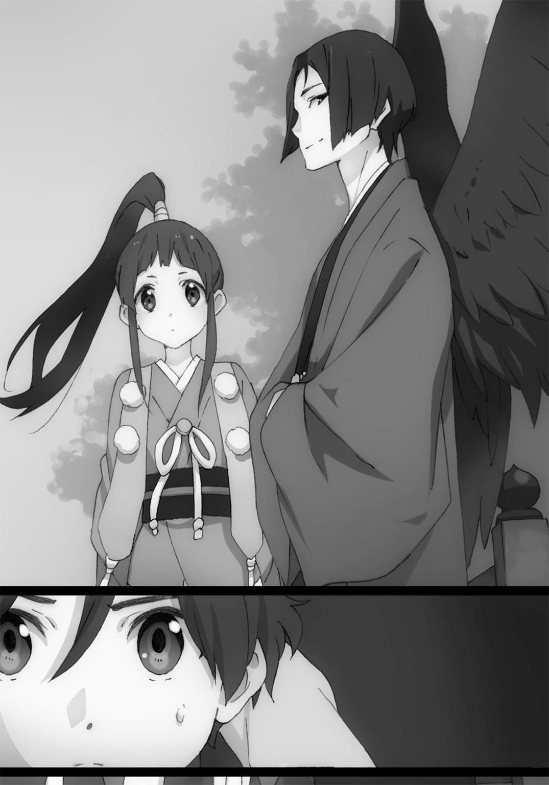
「えっ......さ、さんさんぼーぼーさま、なにを言って......？ ひっく、びっくりしてこいって、なんの意味が......？ 頭大丈夫ですか......？ ひっく」
「このアホ！ しゃっくりはびっくりすれば止まると言われておるだろうが！」
「ええええしゃっくりってびっくりすると止まるんですかああああっっ？ ......あ、止まった」
ああ、なるほど。そっち系の子なのね......。さっきまでクールな悪役風だった三鉾坊が......あっという間にツッコミ役に......。緊迫した空気はいずこへ。
ちなみに彼女の『色』は元気満点たんぽぽ色。言動でだいたいわかるやね。
「ッ！」
突如、飛鳥丸は野獣のように視線を切る。瞬発的に反応した飛鳥丸とは異なり、気配のみで状況を察知した三鉾坊は、目を向けないまま告げる。
「驚いたな。アレを喰らってまだ立ち上がるとは......少々甘く見ていたようだ」
三鉾坊の冷淡な声と、飛鳥丸の荒々しい瞳の先には......ふらつきながらも戸隠を構えて立ち上がる、小百合がいた。
「っ......甘く見てもらってっ、構わない......っ！ あなたたちを、捕らえるためなら......っ！」
見るからに決定的な怪我をしている小百合を前に、三鉾坊は冷酷に言い捨てる。
「......飛鳥丸、やれ」
「やった！ 『つよいやつ』、今度こそたおす！」
そう言い残し、飛鳥丸は姿を消した。遅れて地響きのような羽ばたく音が身体中を揺する。今の瞬間に、飛び立ったのか......？ と戦慄している場合ではなかった。
「ぐっ！ はあっ！」
車道に立つ小百合が戸隠を盾に、なにかから必死に身を守っていることだけはわかった。断続的に響く戸隠の鈍い衝突音と、その一瞬だけわずかに見える拳や足。きっと飛び回る飛鳥丸の三次元的な攻撃を、痛手を負いながら小百合は防ぎ続けているのだ。
俺の目にはその全貌は一切捉えられない。小百合には彼女が、見えているのか......？
「見えた」
「ぬわあ！」
呟くと同時、小百合はなにもないように見える背後の空間を戸隠で薙ぐ。すると戸隠をギリギリでかわした飛鳥丸が、驚いた声とともに姿を現した。動転してバランスを崩したのか、上空から地面に墜落し、素っ転んでいる。
「びびびびっくりした―――っ！ な、なんでわかったのっっ？」
地面に女座りして叫ぶ飛鳥丸。対して小百合は、嫌な汗をかきながらも冷静だ。
「慣れた」
「そっかあ！」
納得しちゃうのかよ。
「じゃなかった！ く、くそ―――なら、もっと速くっ！ びゅんびゅんびゅ―――っ！」
変なかけ声を放ち、再び飛鳥丸は超高速で飛び立つ。おそらく小百合の周辺を連綿と飛び回っているのだろうが、俺には激しい風音しか認識できない。姿なき天狗少女は小百合を襲う機会を見極めている。
小百合はそれに対し、息さえも忘れているように、静かに宙空に目を凝らす。
背後からの接近を察した小百合は後方を確認しようとする、が......。
「なッ！ 足が......ッ！」
小百合は焦燥感にかられた表情をしながらも、身体はその場から動こうとはしなかった。まさか......動けないのか......？
小百合は怒りを露にしたような目をする。その視線の先は、三鉾坊だ。彼はひるむどころかニヤニヤと小百合を眺めている。
三鉾坊がなにかしたのか......？ 小百合の足下に目を凝らしてみると、小百合を囲うように、三本の黒い羽根が地面に突き刺さり正三角形を描いているのが見えた。あの陣で遠方から術を発動させて、小百合の動きを止めているのか......っ？
小百合の顔が、瞬時に青ざめる。背後から、飛鳥丸が超高速で迫っているのだ。
「くッ......防壁展開ッ！」
言下、小百合の後方に『色』と同じ空色に染められた、光の壁が出現する。
これでは飛鳥丸も体当たりなどできまい......と、安堵した俺が間違っていた――。
清らかで、どこまでも晴れやかな空色の壁は、ガラスの割れるような音を立て散り散りに崩壊する。
キラキラと魔力の破片が乱反射するその向こう側――飛鳥丸の体当たりが背中に直撃した小百合の、目を剝き口を歪める横顔を、俺は見た。
額を穿たれたような、強烈な衝撃が脳を巡る。
小百合は声もなく、スロー再生のようにゆっくりと、前のめりに倒れていく。
ドサッと米袋を地面に放ったような音を立て、アスファルトの冷たい地面に抱かれると、小百合は動かなくなった。
背筋を舐め回すような絶望感が、俺を襲う。
「小百合いいいいいいいッッ！」
声が裏返るほどの叫びにも、小百合は反応しない。するのは、笑みを浮かべる三鉾坊のみだ。その態度に、はらわたがグラグラと煮えくり返る。
「てめえッ！ 小百合になにをしたッ？」
「うん？ 彼女をあんな姿にさせたのは、この飛鳥丸だと思うが？」
三鉾坊は何食わぬ様子で、いつの間にかやつの背後に立っていた飛鳥丸を示す。
「とぼけるな！ おまえが小百合の動きを封じたんだろ！」
「おやバレていたか。だが、こちらも遊びではないのでな。......では、今度はおまえさんの背中で眠る、可愛らしい巫女を頂戴しようか」
「ッッ！」
やつが言い終えるよりも早く、俺は自然と身構える。
「素直に渡してくれれば危害は加えない。ご先祖の川天狗一派頭領殿たちに誓ってな」
三鉾坊の言葉に、微かに心が揺らぐ。
いまだ背中で苦しむ羽音。彼女を救えるのなら、世界がどうなってもいいとさえ思っていた。
だが......気絶したままの小百合、藤十郎を前に、素直に言うことを聞けるはずがない。
「ダメだ！ 絶対に羽音は、おまえらなんかには触れさせない！」
本能のまま喚き散らす。俺の意思を、三鉾坊はつまらなそうに受容した。
「そうか。......おい、飛鳥丸」
「はいっさんさんぼーぼーさまっ！ 倒しましたよ！ 『つよいやつ』倒しましたよっ！」
「ああ、よくやった。最後に......あの巫女を、奪ってこい。丁重にな。ただあの少年のほうは......抵抗するなら痛めつけてもかまわない」
「あのちっこいの持ってくればいいんですねっ？ りょーかいですっ！」
小百合を倒して満足そうな飛鳥丸は、三鉾坊の命令を了承する。翼を広げ、こちらへ飛んできた。目で追えるほどの速度だが、それでも乱暴な速さ。非力な俺ではどうにもできない。逃げることなんて、できるはずがない。
「くそっ......！」
人の『色』を見る、なんてわけのわからない能力じゃ、辛そうな妹さえも守ってやれない。悔しくて、情けなくて、自分をぶん殴ってやりたい。
羽音を抱え持つ腕にすべての力を注ぐことしか、できなかった。
「............？」
衝撃の代わりに俺の耳に届いたのは、誰かと誰かの衝突音。
こんなときだけ冴え渡る脳はすぐさま推論する。
おそらく誰かが間に入り、飛鳥丸の突進を制してくれたのだ。
では、一体だれが？ 小百合と藤十郎でないならば今、ここにいるのは俺と羽音と......。
あれ？
疑問を感じて目を開く。驚愕が、すべての感情を凌駕した。
「詩衣、さん......？」
俺の前に立ち、飛鳥丸を左腕一本で押さえているその人物は――詩衣さん。
ありえない光景に呆然とする俺を、詩衣さんは無言でちらりと見る。
「ッッ！」
目を合わせ、脳細胞に刻まれる『色』を感知して......俺はすべてを理解した。
羽音のことや敵の襲来で動転していたせいで、疑問にさえ思わなかった。
なぜ詩衣さんが結界内にいるのか。
三鉾坊ら天狗の翼、猫の姿に戻る藤十郎を見て、なぜ詩衣さんは声ひとつ上げないのか。
今ならわかる......そこにずっといたのは、詩衣さんではなかったのだ。
「うわっぷ！」
自らを腕一本で押さえつける人物が煙を上げはじめたことで、飛鳥丸の驚きは上塗りされた。
「ふぎゃあっ！」
次の瞬間、煙の中から飛鳥丸がぶっ飛んでいく。おそらく、やつに殴り飛ばされたのだろう。初対面の天狗っ子だが、心中お察しする。
やつの拳の痛さは、経験済みだ。厳密に言えば喰らったのは蹴りだが。
晴れていく煙の中で悠然と立つその容姿は、もう詩衣さんではない。
栗色の御髪をはためかせる、透明色の少女――。
「栗毛っ！」
相変わらず無言の、栗毛少女。彼女は俺の呼びかけに、後頭部を向けたまま一度だけこくんと小さく頷くのだった。
＊＊＊
栗毛少女という呼び名は、彼女を追っていた俺たちが勝手に呼んでいた、いわばあだ名だ。
今からおよそ三週間前、人間離れした怪力をもって人を襲っていた栗毛少女の捕縛のため、小百合たちは奔走していた。
しかしのちの調査で事件の主犯は人間を見下し、襲って楽しんでいた死神見習い、通称『死神もどき』であることが判明した。栗毛少女は死神もどきによって、操られていたのだ。
結果として栗毛は小百合が、死神もどきは俺が成敗し、事件は解決した。
以上からわかる通り栗毛は自分の意志で人を襲っていたわけでなく、また善悪の理解もないままに操られていたのだ。重い罪に問われることはまずないとのことだったので、いつかまた会えるだろうと、俺は密かに期待していた。
だが......まさかこんなにも早いとは、思わなんだ。
「「........................」」
そしてもっと言えば、まさかこんなにも唐突に二人きりになるとも、思わなんだ。
遡るは数分前のこと。
「はいはーい！ 羽音ちゃんも小百合ちゃんも藤十郎ちゃんも、みんなまとめて奥で検査＆治療するからねー！ 春一くんは羽音ちゃんを奥の部屋まで運んで！ 栗子ちゃんも藤十郎ちゃんを同じ部屋に！ 小百合ちゃんは自力でたどり着いてね！ はー大変大変！」
負傷者二人と呪いに冒された羽音を抱えた俺たちは、此花庵に到着すると大慌てで奈々子さんに従った。羽音をおぶっていた俺、藤十郎を抱えていた栗毛は言う通りにしていたが、背中を押さえて痛そうにしている小百合は、最後まで俺たちを見て心配していた。
「い、いいんですか奈々子さん......春一と栗毛を二人で残して......。てかなんで栗毛が......」
「いいから！ あの二人は大丈夫だから、怪我人は黙って治療士奈々子さんの言うこと聞きんしゃい！ じゃないと麻酔ぶち込むよ！」
奈々子さんって......先端魔術の科学者じゃなかったっけ......？
「魔術治療士免許も持ってるのよん！ じゃね！」
ばっちり俺の心を読んで回答し、奈々子さんは要治療の三人と奥の部屋へ消えていった。
お店に残されたのは俺と栗毛のみ。急に訪れた静寂に、数秒間目を見合わせていた。
今はテーブル席で向かいに座り、互いに無言である。
無表情に俺を見る栗毛少女。だいぶ顔を見ていなかったが、長い栗色の髪にフランス人形のような顔立ち、白ワンピと外見に変わった点はない。ただ今ここにいるという事態が、彼女の環境の大いなる変化を表しているのに他ならないだろう。
あまりにも思いがけない再会だったもんで、情けなくもかける言葉が見当たらなかったが、頭がクールダウンしていく中で聞きたいことが山ほど湧いてくる。
しかしまずは、感謝の言葉だろう。なにせ絶体絶命の危機を救ってもらったのだ。そう思った俺は、最初の言葉を口にした。
「ありが......」「やっぱりその服、似合わない」
想定外すぎる栗毛の第一声は、俺の心に住むファッションモンスターを追撃するのだった。
「......栗毛さん、それですか？ 最初の言葉それですか？」
「ずっとずっと、言いたかった」
愛の告白後によく似合うセリフである。だが現状それは俺を傷つけるものでしかなかった。
「てか、そのくだり知ってるって......おまえ、いつから詩衣さんだったの......？」
「最初から」
最初から......っ？ じゃあ小学生の頃俺と遊んでくれた詩衣さんも、中学生の頃急に大人びて俺を軽くときめかせた詩衣さんも、高校の入学式で整列する俺に教員席から小さく手を振ってくれた詩衣さんも......ぜんぶ......っ！
「ちがう。春一ちがう。たぶん勘違いしてる。今日、春一の家で最初に会ったときから」
「あ、ああ......そうか。そういうことか......」
「動揺しすぎ」
いやそりゃするでしょ。今日一日でいろんなことがありすぎて、もう周回遅れくらい頭が追いついていないのだもの。
「そもそもなんでおまえは詩衣さんの姿だったんだ？ 詩衣さんと会ったことあるのか？」
たしか対象の姿を見たことがなければ、変身はできなかったはずだ。少なくとも俺は栗毛と詩衣さんがはちあわせた場面など、見た覚えがない。
「詩衣とは奈々子といっしょに春一の家に行く途中で会って、奈々子に紹介された。それで詩衣と別れたあと、詩衣に化けて春一と小百合驚かせようって奈々子が言ったから、やった。こんなことになるとは思ってなかったから......変身を解くタイミング見失ってた」
栗毛は淡々と平坦な口調で説明をする。奈々子さんが考えそうなことだ。だから小百合も俺と同様、栗毛のことを知らなかったわけだ。
「なるほど。だから『色』を見られないように、顔を背けてたのか」
納得していると、ふと栗毛がなにか尋ねたがっているように見えた。不変の無表情だが、彼女の作る空気感からどことなく感じた。なので発言を促すと、栗毛は素直に疑問をよせる。
「あの襲ってきたやつらが敵なのはわかった。けど、それ以前に状況がわからない」
奈々子さん、その部分はまだ栗毛に話していなかったのか。そんなよくわからない状況で、俺たちを助けてくれたのか。ホント、ありがたい。
隠しても仕方がないと、俺は包み隠さず栗毛に説明した。
ここで話は逸れるが、先ほどの橋での三鉾坊たちとのやりとり、その続きについて述べる。
遡るは数十分前のこと。
影の薄い人間だと思っていた詩衣さんこと栗毛の活躍に、三鉾坊は驚愕していた。ぶん殴られた飛鳥丸も、大いに焦って空中を右往左往している。
さらに小百合が目を覚ました上、結界を感じて此花庵から飛んできた奈々子さんの登場により戦況は一転、三対二とこちらが優位となる。なので、三鉾坊は逃げの一手を打った。
「この場は退くぞ！ 飛鳥丸！」
「えええっ！ でもさんさんぼーぼーさま、あっちのつよいやつはよわいやつにしたのに、また別のつよいやつが出てきて、しかも変身しちゃってもうしっちゃかめっちゃか飛鳥丸です！」
「わけわからなくなるほど悔しいのはわかるが、ここは撤退だ！」
「うううっ......わかりましたっ！ あっ、そういえばさんさんぼーぼーさま、今日はどうして全裸じゃないのですか？」
「もうなにを言っているんだっっ？ 殴られておかしくなったのかっ？」
「ああっ、すみません間違えました！ これ昨日の夢の話でした！」
「なんだ夢か、ならよかっ......いやちょっと待て。その夢について、詳しく聞かせろ」
「........................」
「飛鳥丸？ なぜ顔を赤らめる飛鳥丸？」
こんな不毛なやりとりをしたのち、三鉾坊と飛鳥丸は目にも留まらぬ速さで大鳥見山方面へ飛んでいった。なんというか、敵ながら天晴だ。こっちの陣営にも天然はいるが......あの飛鳥丸って子のほうがよほどファンタジスタである。
ただやつら、コミカルな漫才を見せただけではなかった。飛び立つ寸前、三鉾坊は俺や小百合などを見回し、最後に一言言い残していった。
「水神の座は、我々川天狗一派がもらい受ける。次は、必ず奪いに来るぞ」
それは思わず気圧されるほどの、ただならぬ覚悟を持った目だった。ただそれを受ける小百合、栗毛、奈々子さんの瞳も強い意志を映して、頼もしいものだった。
回想終了。俺が説明を終えると、栗毛は納得のいった様子で頷いていた。
「じゃあ私は、羽音を守ればいいということ？」
「お？ なんだ、おまえもいっしょに戦ってくれるのか？ というかずっと気になってたんだけど......どうしておまえはまた、この街に来たんだ？」
「......そういえばまだ、話してなかった。今からぜんぶ話す」
今度は栗毛が俺に解説することとなった。瞳の『透明』が示す通り色も抑揚もない、ある意味らしい語り口だが、だからこそ明瞭に理解できた。
あの事件から栗毛少女が辿った、現在に続くこの三週間について。
あの日休更月によって連行されていった栗毛は事情聴取から勾留、そして裁判と大忙しだったらしい。ただ、重ねた公判の末に下された判決はあってないような処罰のみだった。
自らの生みの親とも言える死神もどきによる不可避の教唆煽動、常識の欠如による責任能力の低さが大きな鍵となり、結論として相当な温情判決となった。
ただアイデンティティー確立までの期間、休更月の特別監視下に置かれることとなった。それが、奈々子さんのもとなのだ。なので当分は奈々子さんの家でいっしょに暮らすらしい。
さらにこれから栗毛はこの街にて、休更月のお仕事を手伝うことになった。よって今回の騒動も、栗毛には活躍が求められるわけだ。
「なるほどなー。よかったじゃん、働き口まで見つかって」
「うん。奈々子と小百合のおかげ。春一も、ありがとう」
「俺はなにもやってないだろ」
無表情とはいえ、きちんと感謝を口にできる子である。きっとこれからいろいろな感情を見せてくれるのだろう。それだけで楽しみである。
「......春一とこんな風に話すの、はじめて」
ふと、栗毛はしみじみとこんなことを呟いた。
「そうか？ アウトレットにいっしょに行った......のは小百合のフリしてたからちょっとちがうか。そう考えたらおかしいな。なにせ俺たち、被害者と加害者だしな」
自嘲するように言う。栗毛が死神もどきに操られていた際、俺は栗毛に怪我をさせられたのだ。今でこそ笑い話だが、あれは痛かった。周りにも心配かけたし。
「......って、どうした？ なにか落としたか？」
見ると、なぜか栗毛はこちらにつむじを向けたまま動かなくなっていた。
「......ごめんなさい」
「え？ あ、ああ！ いやいやいいってもう！」
しまった。デリカシーがなかった。全然笑い話になってなかった。
「......痛かった？」
「あ、ああ。でももうほぼなにも感じないぞ。奈々子さんの治療のおかげだな」
フォローしても、いまだ栗毛から罪悪感の雰囲気は拭えない。そうしてぽそぽそと話す。
「本当は、怪我させた人たち全員に謝りたい、けど......」
「まあ、そりゃ無理だよな。びっくりさせちまう」
「うん。だから私は、がんばる。休更月でがんばる」
「そうだな。街を守っていれば、巡り巡って罪滅ぼしになるもんな」
「うん」
透明の『色』を持った瞳は、確固とした使命感で静かに燃える。どうやら思っていたよりも、精神力が強いようだ。きっとそんな魂なのだろう。
「そういえば、その肉体については、わかったのか？」
実はまだ栗毛少女という存在には謎が残っている。
死神もどきは、所持していた魂の抜けた肉体に、冥界に送られた魂を埋め込んだ、との証言を残していた。魂の情報は行方不明となっていた魂と合致したため、わかっている。
しかし死神もどきは、肉体に関しては詳細な証言をしていないらしい。なので休更月は独自で栗毛の肉体、その起源を探していた。ただ......その進捗はどうにも芳しくないらしい。
「わからない。この能力とか怪力から妖怪であることは間違いないけど、時代も場所も、なんで魂が抜かれた状態だったのかも、わからない」
「そうか......」
少し沈黙が訪れたのち、栗毛はなんでもないように、驚きの事実を語る。
「......私はこの世にいてはいけない、っていう意見もあった」
「は......？ どういうことだ？」
「この肉体と魂は、元々別のひとたちのもの。それもおそらく人間の魂と妖怪の肉体。それが無理矢理結びつけられたのだから、倫理的にはあってはならない。だから肉体と魂を別離させて、それぞれ正当な処理をするべきって言う人も......」
「いいわけねえだろ、そんなの」
少しだけ俯いていた栗毛は、覆い被さるような俺の言葉に、驚いたように顔を上げる。そして、俺の目をじっと見つめる。
それはつまり、栗毛少女という存在を消すということ。ここにちゃんといて、ちゃんと息をして、表情はなくてもちゃんと感情があって、ちゃんとありがとうと言える女の子を殺すということだ。そんなこと、絶対にあってはならない。そんなこと言う人間、俺は絶対に許さない。
言葉をさえぎった俺に、栗毛はつけ加えるように言った。
「......うん。でもそれは奈々子が全力で反対してくれた。そもそもそんな意見に賛成する人間のほうが少ないから、大丈夫だった」
「そっか。ならいいや」
「うん。でも、ありがとう」
栗毛は先ほどのとはまるでちがう、どこか温かく感じるお辞儀をする。ぺこりと下がった頭が戻った瞬間......気のせいかもしれないが、小さく笑っていた気がした。
「だから私は休更月として働きながら、この肉体がだれのものだったのか、手がかりを探していこうと思う」
「やっぱり、気になるのか？ その身体が何者なのか」
「うん。身体の奥にあるなにかが、求めている気がする。だからそれに従うのが、私の使命。そういう人生。............『人』生？」
「いや、人生でいいと思うぞ」
「......うん。人生」
肉体が求めているのか、魂が求めているのかはわからない。ただその好奇心はきっと彼女の人生にとって大切なものなのだろう。俺にはそう思えてならなかった。
なんとなく、互いに話すべきことは終えた、という空気を感じた。
最後ちょっとシリアスな内容だったせいか、二人の間には妙な静寂が流れる。そこで、実はずっと気になっていたことに、ついに触れてみようと思う。
「はじめて会ったときからずーっと聞きたかったんだけど......その恰好、寒くないの？」
栗毛は、きょとんとした。丸っこい目をさらに丸くさせ、かくっと小首を傾げる。
「......考えたこともなかった」
「うそだろ......」
あれだけ常識外れな体力を持ち合わせているのだから、おかしいとは言い切れないが......やはり驚きだ。この時期に灼熱の太陽と入道雲が似合いそうな白ワンピ、しかも裸足なのだ。
「......だめ？」
「......ダメってことはないけど......。いや、でもそれで街歩いたらちょっと目立ちすぎて、休更月としてはよくないかもな。今持ってる服は？」
「これだけ。服はない。なぜなら金がない。世知辛い」
どうしてこう、俺の周りの無表情系女子たちは服を持たないのだろう。
ここで俺は嫌な視線を感じた。見れば栗毛の目線が、いつからか下方修正されている。その先には、俺の上半身。なんとなく、言いたいことがわかった気がした。
「......それ、ちょうだい」
栗毛は俺が身につけているスタジャンを指差す。素直すぎる要望である。
「......ほしいか？ この批判の的となっているスタジャン、本当にほしいか？」
「それは春一が着ているから。私が着ることでその服は真価を発揮する」
少しはオブラートに包んだらどうなのだろう。そしてなんだその自信は。
ただまあ......別に良いか。もう部屋着としてしか使ってないし、幸い今日はそこそこ暖かいので、アウターなしでも外を歩けないことはない。
「......わかったよ。ほら」
悪評の染み込んだスタジャンを脱ぎ、差し出す。栗毛は「ありがとう」と言って早速袖を通した。白ワンピにスタジャンとはどうなんだ、と思っていたがこれがなかなかバカにできない。ちょっとボーイッシュな感じが様になっている。真価を発揮している。
つまるところ、悔しいほどに似合っていた。
「大事に......してやってくれ......くぅ......」
「泣くほどなの？」
「『公平』って言うんだ......」
「名前つけてたの？」
そのとき、部屋の扉が勢いよく開いた。反射的に俺と栗毛は顔を向ける。そこにいたのは、大粒の汗を流しながらなにか慌てている小百合だ。彼女は俺と栗毛を見比べ、言う。
「栗毛が......春一泣かせてる......っ！」
絶妙な勘違いが発生していた。
「こら――栗毛――っ！ 春一になにを......はっ！ 春一の服着てるっ！ こらっ、返してあげなさい！ 春一くんに返してあげなさい！ 似合ってないけど本人は大事にしてるの！」
そして俺のメンタルに追い討ちをかけるのだった。
対して栗毛は冷静に小百合を静観する。そして時折俺を見る。いや自分で説明せい。
そんなわけで栗毛のいる理由からスタジャン譲りの経緯まで、事細かに話してやる。落ち着いてきた小百合は納得していたが、どこか不服そうな表情を浮かべていた。なんだ？ まだ不満なのか？
「不満じゃない......不満じゃないけど............春一、あげることなかったと思う......」
「へ？ いやでも栗毛に着てもらったほうが......」
「春一、似合ってたし......」
いやいや。おまえだれよりも早く、そして多く似合ってないって言っただろ。ついさっきも口走ったじゃねえか。
自らの発言に責任の持てない小百合は置いておいて、再び栗毛の恰好について話をする。
「あとの問題は......靴だな」
いくら衣服に変な部分がなくとも、裸足はまずい。
栗毛は少し考えるような仕草を見せ、満を持して口を開く。
「春一、それちょうだ......」
「いやいや、さすがに靴はサイズ合わないだろ......」
「たしかに......じゃあ小百合、それちょうだい」
追い剝ぎかおまえは。
「こ、これはダメ！ 特注品で、一応武器のひとつだから！ 栗毛にもやったあの蹴り技は、この靴じゃないとすぐだめになる！」
「......ああ、アレは痛かった」
栗毛にも繰り出した蹴り技って......アレか。戸隠の収縮速度を利用した高速ドロップキック。たしかにあの衝撃に耐えられる靴は、そこいらの店には置いてないだろうな。
「あの秘技......小百合ちゃん足ボンバー」
だ、だっせえ......あんな派手な技なのに、そんな名前だったの......？
「小百合、春一がその技名だっせえ......って顔してる」
なんで告げ口するの栗毛さん？ なんで心読めるの栗毛さん？
「そ、そこがいいの！ 常人にはわからない、ちょっとダサいかっこよさがあるの！ それに、かっこいい名前の技もある！」
「へえ。なんて名前なんだ？」
「小百合ちゃんめいきょうししゅ......めいしょ......めっ......もういいや」
「あきらめるなよ」
なんでそんな言いにくい技名にしたんだよ。結局名前わからねえし。というか『小百合ちゃん』が付いている時点であまりかっこよくないぞ。
「まあいいや......。とにかく栗毛、靴に限っては自分で店行って、ちゃんとサイズ合ったやつ買ったほうがいいぞ」
「わかった。じゃあ買うの付き合って」
「......そのほうが良さそうだな」
「わ、私も行きますぞ！ ご一緒しますぞ！」
飄々と願望を口にする栗毛と、なぜかいっしょに行きたがる小百合。似ているようでちょっとちがう二人とのお出かけは、なにか面倒なことになりそうだが......仕方ない。
こうして来週は謎の試食会に加え、栗毛の靴購入会も予定されることとなった。
ただ......そんなのんきなことを考える前に、なによりも気にしなければならないことがある。俺はすでに治療を終えたという小百合に、問いかけた。
「それで、小百合......羽音の様子はどうなんだ？」
「あっ......うん。落ち着いてきたみたい。今は奈々子さんがじっくり検査してる」
「そっか......」
「それで、春一......」
ここで、小百合の言葉を遮るようにまたも部屋の扉が開く。今度は藤十郎だった。猫の姿でてこてことこちらへ歩み寄る。
「すみません春一さま、小百合さま......ご迷惑をおかけしました......」
床で深々土下座するように頭を下げる藤十郎。相変わらず律儀な猫だ。
「いいって。というかそこじゃうまく話せないから、テーブルあがってきな」
「い、いえそんな！ わたくしなんぞがテーブルに足を......」
「いいから。そのままだとこっちの首が疲れるんだ」
俺はひょいっと藤十郎を持ち上げ、テーブルの上に運ぶ。申し訳なさそうな藤十郎だが、栗毛を見つけるとさらに申し訳なさそうに声を上げた。
「あ、あのっ、さきほどはここまで運んでいただき、ありがとうございました......。はっ！ じ、自己紹介がまだでした！ 初めましてわたくし橋姫の使い、水猫の藤十郎と申しますっ」
もううつぶせに寝転ぶような最大級の土下座を披露する猫を、栗毛はじぃぃぃっと食い入るように見つめていた。無表情だが、なんだか怖い眼光だ。
「......？ あ、あの......どうかされましたか......？」
「............ねこ......しゃべるねこ......水色のねこ」
「は、はい......」
「......ちょっと蹂躙していい？」
「ええええええっっ？」
藤十郎は両前脚を上げて驚いている。この発言には、俺も黙ってはいられなかった。
「おい栗毛！ おまえそりゃないぞ！」
「は、春一さま......」
「藤十郎を蹂躙するのは俺が先だ！」
「えええええ春一さまっっ？」
「あ、じゃあ私も。実は狙ってた」
「小百合さままでっっ？」
「しかたないな......じゃあ公平に、みんなで蹂躙するか」
「ひええええええっ！」
藤十郎はテーブルの上でまな板の魚のようにぴちぴち怯える。しかしながら三方向から迫り来る六つの手に、ついには覚悟したのだろう。ぷるぷる震え、前脚で身体をかばうようにしながら呟いた。
「や、やさしくしてください......」
蹂躙したい系猫、藤十郎。残念ながらそのセリフは、今の俺たちには逆効果だった。
三人そろって満足できたところで本題に入る。
なにやら藤十郎は、奈々子さんから頼み事をされたらしい。
もはや立てなくなっている藤十郎は、仰向けという猫として完全服従を表す無防備な体勢で、痙攣したまま話をはじめた。
「羽音さまですが......容態は落ち着いてきて、今は眠っていらっしゃいます......ですが今の恰好では帰るときに恥ずかしい思いをするでしょうから......お洋服を用意してほしいと......」
なるほど。家から出るときは慌てていて、その辺にあったコートをパジャマの上に羽織らせてきてしまったのだった。たしかにパジャマのままでは帰れないな。なにより不特定多数のやつらが羽音のパジャマ姿を見るなど、図に乗るなと言いたい。
「じゃあ俺がひとっ走りして持ってくるか」
「あ、いえ。ここは私におまかせください、春一さま」
どういうことか尋ねる間もなく、藤十郎はなにやらことをはじめる。尻を落とし、目を瞑る藤十郎。妖力を集中しているようで、藤十郎の身体がリンドウ色に輝いていく。
藤十郎はそのまま、俺に問う。
「春一さまと羽音さまのご自宅の場所は、奈々子さまに教えていただきました。それで、羽音さまの部屋は家のどの辺りにありますか？」
「え、ええっと、二階の一番南の部屋だな」
「では、羽音さまのお洋服は、部屋のどこに？」
「部屋の北側にあるクローゼットの中だな」
「わかりました。少々お待ちください」
言われた通り待っていると、すぐに反応があった。藤十郎が「はっ！」と甲高い声を上げたと同時に、なんと羽音のセーターやスカートなどが現れた。
「うおおっすげえ！ 羽音の服が出てきた！ もしかして瞬間移動させたのかっ？」
「はい。わたくし戦闘能力もなければ大した妖術も使えないのですが......ただひとつ召喚術を勉強したのです。位置さえわかれば、物でも人でも自在に呼び寄せられるのです」
藤十郎はえっへんと、俺たちにもしゃもしゃにされた胸を張る。そんなことできたのか、藤十郎。ただの猫かと思ったら、妖怪らしいこともできるじゃないか。
「しかし、なんで召喚術なんて勉強したんだ？」
「それは......水野姫さまは猫使いが荒く......すぐにアレを持ってこい、今度はコレを持ってこいなど要求してくるので......できたら便利かな、と......」
なんだか悲愴感の漂う理由だな......。
藤十郎の意外な特技に感心していたところだが、召喚された衣服を手に取っていた小百合が「あれ？」と呟くのが聞こえた。
「スカートが二着ある。あとインナーがない」
見ると、たしかに一着と頼んでいたスカートがダブっていて、逆に頼んだインナーがない。それに対し藤十郎は「はえっ？」と発する。
「あ、あああすみません！ また間違えてしまった......もう一度やります！」
再び術を行うと、今度はちゃんとインナーが手元に届いた。藤十郎は安堵のため息をつく。
「『また』って言ったけど、よくあるのか？」
気になったことをそのまま質問すると、先ほどとは一変、藤十郎は自信をなくしたように尻尾をへたっとさせる。
「この術には不安定なところがありまして......たまに間違いが生じてしまうのです」
「必ずしも思った通り召喚できるとは限らないってこと？」
「はい。今回は戦闘の後だったのでより不安定だったみたいです......。また、人など複雑な存在を召喚するととてつもなく妖力を消費するので、一時間ほど経たないとまた人を召喚することはできません。なのでその際は、非常に気を遣うのです......」
難儀な能力だ......人を間違って召喚するなんて、場合によっちゃシャレにならないぞ......。
「水野姫さまがちゃんとこの街にいれば、もっと安定するのですが......」
藤十郎は気苦労がにじみ出た顔で小さく呟いた。
話によれば藤十郎の妖力は水野姫から授かったものらしく、水野姫の膨大な妖力を媒介としているのだとか。なので水野姫がいない現状では、本来の力を発揮できないようだ。
つまるところ水野姫がいれば、すべて丸く収まるわけだ。
失礼だが、俺にとって現状水野姫には、身勝手な神様という印象しかない。だが、彼女の話をする藤十郎は呆れながらも、言葉の端々に彼女への尊敬が見え隠れしている。
そしてどこか、寂しそうであった。
羽音が奥の部屋に運ばれてから一時間ほど経った頃、ついに奈々子さんが顔を出した。
入室を促されたので、俺はだれよりも早く駆け込む。中には、普通の治療器具と見分けがつかない機械が並んでいた。
それらに囲まれ、羽音はベッドの上で寝息を立てている。
「羽音はどうなったんですか奈々子さん！」
「今はその様子を見ればわかる通り、問題なく寝ているだけ。で、羽音ちゃんの身体に起きていることだけど......ここじゃアレだから、店のほう行こう」
俺たちは羽音を部屋に残し、再び此花庵のテーブル席につく。定休日である本日、店内にいるのは俺たちだけ。しんと静まり返る中、奈々子さんが口を開く。
「羽音ちゃんは今、橋姫の妖力にあてられて、いわば呪いにかかっている状態にある」
断言する奈々子さんの表情からは、いつもの余裕そうな笑みは消えていた。覚悟していたことだが、その事実はやはり堪える。羽音を、巻き込んでしまったのだ。
「本当に、申し訳ない。今回のことはすべて私に責任がある。ごめんなさい」
奈々子さんは、仰々しく頭を下げた。するとその隣に座る小百合が、その言葉を否定する。
「ち、ちがう！ 最初に羽音ちゃんを巫女にしたいって提案したのは私！ 私が悪い！」
「わ、わたくしに......わたくしにもっと力があれば、皆さまに頼らずにいられたのです......だからわたくしが、悪いのです......申し訳ありません、春一さま......」
ついには藤十郎までも、俺に頭を下げだした。
正直、今回に限って言えば俺自身の非はあまり感じられない。俺はたしかにこの場で止めた。なんの知識もないただのシスコンだったが、だれよりも正しかったわけだ。
しかし......それでも結果的に受け入れたのは、羽音の判断を尊重したからだ。羽音だってもう中三になる。自分のことは自分で決めて、自分で背負うべきなのだ。
なにより――かつて過去に立ち向かう俺の背中を押してくれた、あらゆる場面で俺を救ってくれた小百合と奈々子さんを責めるなんて、俺にはできなかった。
「頭を上げてください。俺には三人を責められません。今はとにかく、どうすれば羽音が良くなるのか、教えてください」
三人はそれぞれまだ顔から罪悪感が消えていないが、立ち止まっている場合じゃないと言って聞かせる。すべては羽音のために、動くべきなんだ。
そうして奈々子さんによる、状況説明がはじまった。
「橋姫の妖力を必要以上に身体に抱え込んでいる羽音ちゃんは今、嫉妬の呪いにかかっていると推測される」
「嫉妬の呪いって......？」
「人間だれしも多かれ少なかれ持っている嫉妬心を、呪いのせいで増長させてしまっているの。羽音ちゃんがだれかに少しでも嫉妬の心を向ければ、そのちょっとの感情がありえない勢いで膨張する。それに精神が耐えられなくなっているんだね」
羽音が嫉妬......考えられないな。ただそれは俺から見た羽音の印象であることを、忘れてはいけない。俺は、羽音のすべてを知っているわけではないのだ。
「......羽音は、一体だれに対して嫉妬を......？」
俺の消え入るような独り言に、奈々子さんは予想外の答えを口にする。
「今日の羽音ちゃんの言動や行動から予測するに......小百合ちゃんやしーちゃんだろうね」
一番驚いていたのは小百合だった。泡を食った様子で俺と奈々子さんを見る。
奈々子さんは「完全な私の主観だけど......」と前置きをして、予想を話す。
「羽音ちゃんにとって最も強い絆は、春一くんとの兄妹の絆なんだ。春一くんが羽音ちゃんを愛しているように、羽音ちゃんも春一くんをだれよりも大切に思っている。本当に、うらやましいほど最高の兄妹だね。けど......その絆の強さが今、羽音ちゃんを苦しめている」
「........................」
そこまで聞けば、いくらニブい俺でもわかる。それは、飛び上がるほどに嬉しいことなのに、素直に喜べない。飛び上がりたくても、それを妨げる足枷がある。
羽音が俺を想ってくれているからこそ、羽音を苦しめているんだ。
「つまり、春一くんをだれかに取られてしまうという恐れが、嫉妬を生み出しているの。特に同性......春一くんにとって異性となる女の子の存在は、春一くんの隣っていう今まで自分がいた場所を脅かす可能性がある。だからこそ、自然と恨めしく思ってしまう」
「でもそれは、あたりまえのこと......」
栗毛の意見に奈々子さんは頷く。だがこうもつけ加える。
「そうだね。でも羽音ちゃんはあまりに純粋で、きっと嫉妬というあたりまえの感情を意識したことがなかった。その微小な思いが今、呪いによって意識せざるを得ないほど大きくなっている。そんな醜い感情が自分の中にあるって理解させられて、戸惑っているんだね」
前に詩衣さんが言っていたことを思い出した。純粋な子ほど、自分でもびっくりするくらい黒い感情が自分の中にあることを知り、思い悩んでしまう。厳密にはちがう話だが、羽音の苦しみも根本は同じだ。
嫉妬深くなかった羽音だからこそ、その苦しみは大きいのだ。
「それで、羽音が呪いにかかってしまった大本の原因は......？」
「儀式において不手際があり、穢れが羽音さまに残ってしまったという可能性はあります......」
「けど......儀式に誤りはなかったはずなんだよね......。だから現段階では、正直わからない」
玄人である藤十郎と奈々子さんは、複雑な表情でそう述べる。
「じゃあもしかして......解決策もない、とか......？」
「申し訳ないけど......その通り。羽音ちゃんの精神、それも深いところに原因がある以上、巫女の任を解いても妖力の残滓はあり続ける。だから最善なのは精神的な成長とともに嫉妬心を受け入れること。そうすれば妖力を自由にできる。つまり、消滅させられる」
「そんな長期的な計画......その間ずっと羽音は苦しみ続けるんですか......？」
「......ひとつだけ、極力羽音ちゃんが苦しまずにいられる方法がある」
見るからに沈痛な面持ちで、奈々子さんは呟く。その様子だけでわかる。その方法というのが、ひどく悲しいものであるということが。
「前提として、羽音ちゃんが嫉妬を感じなければいいの。だから......春一くんが、嫉妬の対象となる小百合ちゃんとかとの接触を控えれば......」
「........................」
見てはいけないと心は叫んでいるのに、それを口にする奈々子さんのすぐ隣にいるせいで、イヤでも目に入ってしまう。気丈に振る舞おうとする、おとなしすぎる感情の機微。揺れる瞳と震える手のひら。バレバレな小百合の心情が、心臓を鷲摑む。
小百合と会わなければ、羽音は辛い思いをすることはない。紛れもなく、俺の行動ひとつで羽音を救える。羽音さえ助かるのならどうなっても、何度もそう考えた。
でもそうしてまた俺は――小百合を独りにするのか？
「そんなの、ダメだよ」
「えっ......」
その声は、席につくだれのものでもなかった。その声色を、口調を、勘違いするはずがない。
涙で目を腫らす羽音が、寝ていた部屋の扉を開いて立っていた。
「私のために......っ......はるにぃも小百合ちゃんも、みんなツラい、さみしい思いをするのなんて......っ......絶対にイヤだよ......。そんなことになったら、そのほうが......っ......私はツラいもん......。小百合ちゃんと会えなくなるのだって......っ......イヤだもん......」
羽音は濡れる目を袖で拭いながら、少しずつこちらに歩み寄る。
そのとき、俺の心臓は嫌な予感に騒音を響かせていた。この状況に、背筋が凍っていた。俺だけではない、小百合も奈々子さんも青ざめた表情で羽音を見つめている。
神様でも仏様でもいいから助けてください。そう、祈りながら......俺は羽音に尋ねる。
「羽音............この話、どこから聞いていた......？」
「............私が橋姫の妖力っていうののせいで、嫉妬の呪いにかかってるって......ところ」
やめてくれ、やめてくれよ。こんなの、ないだろ。
「あと......水野橋の上でのことも、ぜんぶ見ちゃった......。黒い羽の生えた人たちとか、男の子がそこにいる水色の猫ちゃんに変身したところとか、詩衣さんがそこにいる女の人に変身したところとか......。夢かと思ったけど......やっぱり、現実だったんだね......」
だれか......だれか趣味の悪い冗談だと言ってください。神様も仏様も、勘弁してください。
どうしてこんなことになるのですか？ 俺は羽音が、穏やかに、笑顔で、幸せに暮らしてくれさえすればよかったのに。
どうして俺の願いを聞いてくれないのですか？ ふざけないでください。
どうして羽音を――こっち側へ引っ張り込んでしまうのですか？
「ねえ......はるにぃ......教えて、ぜんぶ。私の身に起こっていることも、そこにいる女の人としゃべる猫ちゃんのことも......小百合ちゃんと奈々子さんが、一体何者なのかも、ぜんぶ......。ねえ、はるにぃ......？」
絶望的な顔をする小百合や消沈する奈々子さんには目もくれず、羽音は俺のみに問いかける。鼻と鼻が触れそうなほどの距離にある羽音の顔は涙で濡れ、いまだ呪いの苦しみを抱えていながらも、強い覚悟を持った揺るがない瞳は、目を逸らすことを許さない。
羽音の目に映る俺の表情は、どれほどまでに複雑で、情けないものなのだろう。
自然と、俺は羽音を抱きしめていた。
底の知れない泥沼にどっぷり踏み込んで沈んでいく羽音が、せめて穢されないように、悪いものに触れさせないように、力強く抱きしめた。
かくして、不思議で危険な非日常の世界へと、兄妹ともに堕ちていく。
残酷なまでに俺たちは、どこまでもいっしょにいられるのだ。
長い時間をかけて、俺たちは羽音にすべてを話した。
休更月とはなにか、小百合と奈々子さんが何者か、前の連続事件の概要と栗毛の正体、そして藤十郎を含めた橋姫関連のこと。
そうなると、俺の『色』を見る能力についても説明せざるを得ない。必然的に、前述した六年前の事件を反芻しなければならなかった。
そういえば、この事件がきっかけで羽音は強くなろうと決心し、道場に通うようになったのだったな。羽音としても少なからず、心の古傷として残っているのだろう。それを知っていて蒸し返すのも、心苦しかった。
羽音は俺たちから繰り出される非現実的な話を、意外にも冷静に受け止めていた。すでに橋の上であらゆる光景を見たからだろうか、動揺している様子は見せなかった。
すべての話を終えた俺たちは、静かに羽音の反応を待った。
「......やっぱり小百合ちゃんは、強かったんだね」
その第一声には、少しだけ驚いた。
「はじめて見たときから、なんとなくわかってたよ。この人は、強い人だって」
「え......い、いや......私......私は......」
想定外の感想だったからか、小百合はどもりながらその言葉を否定していた。
「そっか。はるにぃが、いつの間にかそんな不思議な世界に足を踏み入れていたなんて......『色』を見る、なんてことができてたなんて......全然気づかなかったな」
しみじみ呟く羽音に、奈々子はほっとしたような笑顔で尋ねる。
「羽音ちゃん、あんまり驚かないんだね。普通もっとうろたえるものだけど......」
「もちろん驚いてますよ。でも......はじめから小百合ちゃんも奈々子さんもどこか浮世離れしてるなって思ってたから、逆にそんな裏があるって知ったほうが、しっくりくるのかな？」
さらに羽音は、「あとね......」と前置きし、恥ずかしそうに目を伏せながら告げる。
「そういう不思議な世界が私と小百合ちゃん、奈々子さん、栗毛ちゃん、藤十郎ちゃんを結びつけてくれたって考えたら......驚きよりも嬉しさのほうが大きい、から」
羽音は藤十郎の背中を優しく撫でながら、そう口にする。優しい発言に、場がほっこりと温かな空気に包まれた気がした。
「それじゃあ改めて、橋姫の呪いをどうするか、考えようか」
全員が状況を受容し終えたところで、奈々子さんが次のステップへ踏み出そうとする。その提案に、俺や羽音もするりと乗りかかる。
「そうですね......羽音、今でもまだ苦しいか？」
「うん......私の部屋で倒れたときよりは大丈夫だけど......まだ胸の奥が苦しくて......。ごめんね、小百合ちゃん......嫉妬なんて、したくないのに......」
「ううん。ちゃんとわかってる。全部呪いのせいだから」
「そうです、羽音さま。今はその嫉妬を受け入れることも大切ですよ」
こうして話題が橋姫の呪いに移りかけた、そのときだ。
「......ちょっと、待って」
他の声を遮るように口を開いたのは、栗毛だった。その顔は、やはり無表情だがどこか苦しそうな心情を浮かべている。よくよく考えれば、羽音にいろいろ説明しているときからそんな顔だった。
「......ごめん。やっぱり私まだ、納得できてない」
栗毛はかいつまんで、その心にあるひとつの感情をさらけ出していく。
それは、罪悪感だった。
「私は......前に、春一に大怪我を負わせた。だからさっき謝った。でも......あのとき傷つけたのは、春一だけじゃなかったって、わかった。私は......羽音も傷つけた」
「栗毛......それは......」
栗毛の言いたいことが、わかった気がした。
あのとき、肋骨にヒビが入るほどの怪我をした俺を見て、羽音は涙を流すほどのショックを受けていた。精神的に最も傷を負ったのは、むしろ俺より羽音だった。
しかしだからといって栗毛のみが罪を被る必要はないと、羽音だってわかっている。
「栗毛ちゃん......たしかにはるにぃを怪我させたのは栗毛ちゃんで、あのときは許せないって思ったけど......栗毛ちゃんは命令されてたんでしょ？ だったら別に私は......」
「いや、それじゃダメ」
栗毛はまっすぐすぎる透明の瞳をもって、強い意志を短い言葉で表現する。
「春一に怪我をさせたのも羽音を傷つけたのも私。羽音の春一への想いを見てきて、わかった。怪我させた人だけじゃない......その周りの人も私は傷つけた。私は、何十人も傷つけた」
「栗毛ちゃん！ そこまで背負わなくても......っ！」
「わかってる、奈々子。それはもうどうにもならない。だから私は休更月でがんばって、罪滅ぼしをする。でも羽音には今、謝れる。だから......ごめんなさい」
栗毛は、俺にやったのと同様に羽音へと謝罪の意を示す。ずしっと重い頭を垂れたまま、動きを止めた。その様子に羽音は、優しい口調で気持ちを届ける。
「......うん。もうしちゃ、ダメだよ」
「うん。約束する」
頭を上げる栗毛。少しだけ、暗い雰囲気が晴れたような気がした。
しかし、まだ完全には晴れていない。ケジメはまた別にあるらしい。
「最後に......羽音、私を殴ってほしい」
「......ゔぇ？」
その願望を聞いた直後、声帯が危険を察知した音を発した。
「そんな栗毛ちゃんっ......私そんなことできないよ......」
「そ、そそそそうだぞ栗毛！ そんなの絶対おまえ、死......」
「いや。私の勝手な気持ちだけど......殴ってもらわないと、これから羽音と向き合えない」
潔白な性格はいいが、それはさすがに命知らずだぞ、栗毛......っ！
すると、このやりとりに小百合が加わる。そうだ、おまえからも栗毛を止めろ......っ！
「待って。それなら、私だって殴られるべき」
「ゔぇっ？」
「な、なに言ってるの小百合ちゃん！ 小百合ちゃんを殴るなんて......」
「私はあのとき、春一を守れなかった。守るって約束したのに、できなかった。私だって、春一と羽音ちゃんを傷つけた一人」
強い意志を持って小百合は言う。しまった、こいつら羽音の超絶パワーを知らないんだ......。腹くくったつもりなのだろうが......そんな覚悟じゃ心も身体も物理的にへし折れるぞ！
でも待てよ......あの優しい羽音が二人を殴るなんて、よく考えればありえないことだ。羽音は絶対、なにがなんでも断るはずだ。そう思えば、なにも心配することは......。
「......うん、わかったよ」
「ゔぇぇぇぇぇっ？」
「春一、さっきからうるさい」
ヤバいって！ この展開は絶対ヤバいって！
「は、羽音......？ そこまでする必要は......」
「私だってホントはしたくないけど......二人の目は、本気だよ。このままじゃ、二人と本当の友達にはなれない。ここでケジメつけて、はじめてちゃんと向き合える気がする」
漢だよ......我が妹、思考が任俠の世界だよ......。でもダメだって！ はじめてちゃんと向き合えるって......その一発ですべてが終わるぞ！
「春一さま、ここは当人たちの気持ちにすべて委ねましょう。これが、武士の義なのです」
「まあいいんじゃない？ 羽音ちゃんだってそんな本気では、ねえ？」
律義な雰囲気に呑まれたか、藤十郎と奈々子さんも漢な三人に呼応する。
みんな知らないんだよ......羽音はいつだって本気じゃないんだ......本気じゃなくても万物を滅亡させられる力を持っているんだよ......ッ！
「じゃあまず小百合ちゃんからね、いくよー」「や、やめっ......」
残念ながら、俺の制止は届かなかった。
目を瞑る小百合へ、羽音は可愛らしい拳を握ると――処刑をはじめた。
ドガァッと轟音を立て、羽音のコークスクリューブローは小百合の腹部に到達。直後小百合の身体は螺旋を描き、テーブルや椅子をなぎ倒しながら吹き飛ぶ。そして壁面に衝突し、めり込んだ。その後グチャッという音を立てて床に落下した小百合は、動かなくなった。壁にはくっきりと小百合の型が残されている。
「「「........................」」」
一部始終を見ていた面々は言葉を失い、無の表情で倒れる小百合を見つめていた。人は驚きがある域を越えると、こうなるらしい。俺はというと、もう頭を抱えるしかなかった。
「うわはー小百合ちゃん大げさだなー。私のためにそんなダイナミックな演出しなくてもー。スタントマンみたいだねー。休更月ってすごーい」
無惨にも破壊されたテーブルや椅子、焦げつく床、人型の残った壁を見て、羽音はキャハハとおかしそうに笑った。ちがうんだぞ羽音？ 全部おまえがやったんだぞ？
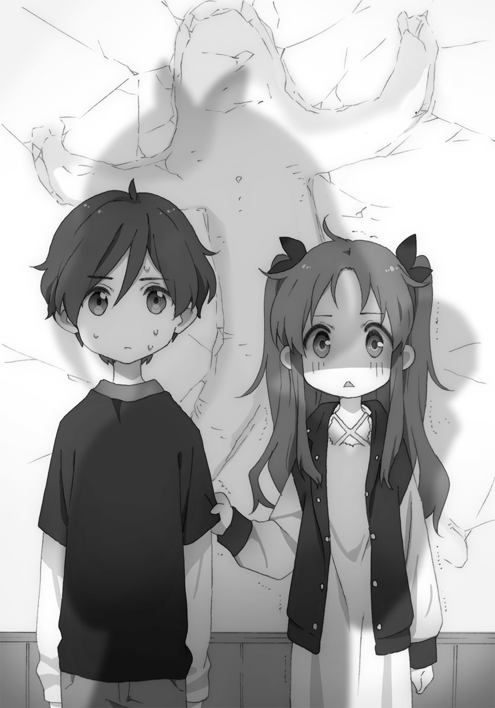
ふと、俺の袖をくいくいと引っ張る手がひとつ。栗毛だ。
「こういうのじゃない。春一、こういうのじゃない」
「......おまえが言い出したんだぞ......俺は止めたからな......」
「想像だにしなかった。こんな未来、想像だにしなかった」
助けてやりたいところだが、もうどうにもならない。
断罪天使羽音ちゃんは、もうスイッチが入ってしまった。
「次は栗毛ちゃんだね！ 栗毛ちゃんはより悪いことしたから......ちょっとだけ強くやるね」
「ヒッ......」
軽い気持ちで口にしたのだろう羽音の衝撃的な発言に、栗毛はかつてない怯えた声を漏らす。表情も、少しずつ無ではなくなっていく。
三週間前、どれだけ小百合に攻められても常に無表情を貫いてきた栗毛が、その顔にはじめて浮かべた感情......それは、恐怖。目にはあっという間に涙が溜まっていく。
最後に栗毛は、迫り来る羽音に目を向けたまま、俺に告げる。
「春一............春一と、会えてよかった」
辞世の句が済んだところで、羽音のとても可愛らしい拳が栗毛を襲う。
バコォッという爆音を残し、小百合が駆け抜けていったルートを一・五倍速でぶっ飛ぶ栗毛。デジャヴのように栗毛はゴシャァッと壁にめり込んだ。狙い澄ましたかのように、小百合の残した人型にはまり込む。そして、落下した。
「グヘェ！」
降下点に先着していた小百合は下敷きとなり、うめき声を上げた。
こうして小百合と栗毛は仲良く折り重なり、気絶したのだった。
場はしばし静寂となる。奈々子さんは人型の残った壁を眺め、茫然としている。藤十郎は涙目でぶるぶる震えながら、腰を抜かしていた。
不意に、二人の勇者を再起不能にした剛の帝王が「あれっ？」と声を上げる。
見ると、不可解なことが起きていた。
「なんか苦しいのがなくなったよ！ すっきりした！」
羽音の顔が、言う通りさっぱりしたようないい顔色に戻っている。また羽音の目の奥に見えていた黒いモヤも、ほとんどなくなっている。まるで呪いが軽減されたような、そんな様子だ。
久しく見ていなかった羽音の、地球上の全生物に多幸をもたらす花丸満点の笑顔が、俺に向けられた。その華奢な肩越しに見えるのは、死屍累々の地獄絵図。
無邪気でいて無敵、唯我独尊する気はないのに天上天下なナチュラルハードパンチャー羽音は、二人の尊き犠牲をもって、呪いに立ち向かう光明を見いだしたのだった。可愛い。
第三章
要するに、羽音の中にある嫉妬の増長が心を圧迫しているのだから、嫉妬の対象となる相手に一発かませば発散される。このように奈々子さんは分析していた。
気に食わない相手をポカッとやればスカッとするのは、悲しきかな人の性なのだろう。たとえそれがウユニ塩原のごとき心を持つ羽音であっても。
この事実により、俺たちはひとつの法則を見つけたことになる。
たとえば俺が小百合とラブコメっている場面を羽音が目撃してしまったとき、呪いが発動し、羽音を苦しめる。だがその手で小百合をひとつポカリとやれば、解消されるのだ。
実に理に適っている。しかし、これには重大な欠点がある。
羽音の『ポカリ』は、一般的な人類にとっては生き死にに関わるのだ。
なので小百合たちはとにかく、羽音を嫉妬させないように心がけるしかない。失敗すれば、ハードモードのお仕置きが待っている。
そんなへんてこな緊張感を孕む日々が、幕を開けた。
最後の授業を終えて教室を出ると、廊下で詩衣さんとバッタリ出くわした。日曜日以来......いやあれは栗毛か。ややこしいことしやがって......この詩衣さんすら、疑ってしまうわ。
「羽音ちゃんはその後どう？ 奈々子ちゃんから体調崩したって聞いたけど」
「あー......まーひとまずは大丈夫......ですかね」
「そう？ よかったー。そ、そういえばハルく......十河くん、今日空いてる？ 準備室の整理を頼まれちゃって、手伝ってほしいなーって」
そわそわとどこか落ち着きなく詩衣さんは尋ねてくる。相談を聞いてくれた詩衣さんの頼みなら、二つ返事で聞き入れたいところだが......。
「すみません......ちょっと今日は先約が。明日でしたらいくらでも手伝いますよ！」
「あうっ、そうなの......。ちなみに先約って？」
「小百合がなにやら創作そばの試食会とかわけのわからないものを催すみたいで。一応行くって言っちゃったんですよね」
本日は水曜日。日曜に約束した、小百合宅でのそばの試食会が開催される日だった。正直あまりいい予感はしないが......招待されてしまったので仕方ない。
気づくと詩衣さんは妙な表情をしている。笑顔が人工的すぎて、ハニワのようだ。
「ふ、ふ、ふうーん......さ、小百合ちゃんと二人で？」
「いや。羽音と、栗毛っていうやつもいますね」
「ああ......この前奈々子ちゃんといっしょにいた子。可愛い子だったねえー？ ねへえー？」
うむ。あからさまに様子がおかしい。だが詩衣さんはたまにこうなるので、今更気にすることはない。理由はわからないが......まあ変わった人なんだ。
「わ、私も行こうかなー？」
「えっっ？」
「今日は仕事少ないから早く帰れそうなんだよねー。途中からでも行こうかなー？ 栗毛ちゃんって子とも、ちゃんと話してみたいし......どこでやるの？」
予想外の展開に俺、慌てる。今回は事情が事情だ。なにせ、呪われし妹羽音がいるのだ。
もしも詩衣さんと俺が、なにかの間違いでラッキースケベを引き起こしてしまったら......普段なら全然ウェルカムなのだが......いやホント詩衣さんとのラッキースケベなんてこちらから申し込みたいくらいなのだが......もしもそんなことになったら......詩衣さんが羽音に......っ！
「ハ、ハルくんっ？ どうして泣いてるのっ？」
「うっ......うぅ......そんなの、俺には耐えられない......」
「えええっ？ わ、私が行くのそんなにイヤなのっ？」
ちがうんだ詩衣さん。うまく説明できないけどちがうんだ詩衣さん。
「どうしたはるちー、普段なら全然ウェルカムだけどしーちゃん先生のことを考えたら言う通りにできない事情がありそうな顔してるぞ」
どっから湧いたんだおまえは。だが今日に限ってはグッジョブだサク。
「え？ どういうこと？」
「すみません詩衣さんっ！ 今日だけは......ダメなんですっ！ ごめんなさい――――っっ！」
「なに――っ？ なんなの――っ？ あと廊下走らな――いっ！」
説明を望む詩衣さんの虚しき声を背に、俺は涙をこらえて廊下を駆け抜けるのだった。
詩衣さんには悪いが、この場はこうするしかない。
詩衣さんと羽音を同じ空間に置くのはあまりに危険だ。小百合や栗毛のように身体を張れるほど頑丈ならまだしも、清純派の詩衣さんには荷が重すぎる。事情話すわけにもいかないし。
ごめんなさい詩衣さん......この埋め合わせはいつか必ず。
小百合宅のある高級マンションのエントランスにて、俺はもはや見慣れたインターホンを操作して入り込む。エレベーターで最上階へと向かった。
「ぶぉんじょーるの」
イタリア風の小百合に案内され、リビングにお邪魔する。羽音と栗毛は先に来ていたようで、小百合宅名物ゾウのすべり台でキャッキャウフフと微笑ましく遊んでいた。
「お疲れさまです、春一さま」
「あれ？ 藤十郎も来たのか」
足下から声が聞こえたかと思ったら、お辞儀をする水色の猫がいた。
「小百合さまから招待されまして。それに責任者の一人として、この場にいるべきかと......」
「なるほどね」
本当に生真面目な猫だ。同じく責任者である奈々子さんはいろいろ調べたいから、とか言って断っていたが......おそらく逃げたな。
「しかし......本当に大丈夫かよ。この状況で、しかもこのメンツで会うなんて」
すべり台をエンジョイしている二人やキッチンで忙しなく作業をしている小百合に聞こえないよう、しゃがんで藤十郎に耳打ちする。
「はい......わたくしとしても正直不安です......。なので今日は呪いの傾向を分析するという目的もあって、来た次第です」
このように男二人はこの会合、あまり乗り気ではなかった。端的に言えば、殴る側と殴られる側三人の希望であるところが強いのだ。
日曜日、呪いの法則が発覚したところで、俺はこんな提案をした。
「小百合たちとこれまで通り会えることは会えるんだろうけど、羽音もまだコントロールできてないからなあ......。もうちょっと呪いの発動条件とか明確に解き明かしたほうが安全だろ。だから来週の試食会とか靴屋は、もうちょっとあとのほうが......」
我ながら正論だったと思う。が、正論と乙女心は往々にして相容れないものだ。
「「............................................................」」
「......うんそうだね。一度決めた約束は守らなきゃだね」
無表情姉妹の物悲しい視線には、正論も音を立てて崩れるほかなかった。
こうした経緯があり、試食会は予定通り決行となったのだ。ちなみに土曜日には栗毛の靴選びも控えている。もちろん羽音や小百合も同行する予定だ。
「ひとつ思いついたことがありまして......こんなことを言うのは不躾ですが、そもそも羽音さまに、お越しになられるのを控えていただくという手はないのでしょうか......？」
遠慮がちに藤十郎は意見を述べる。
藤十郎の意見は的を射ている。そもそも俺と小百合や栗毛がいっしょにいることを、羽音に知られなければいいのだから。だがしかし、その案には重大な欠陥が存在した。
「残念だが、それは無理な話だ。なぜなら小百合たちと会ったことを羽音に知られないようにする、ということ自体が不可能だからな」
「なぜですか？」
「なぜなら、羽音には匂いでわかってしまうのだから」
小百合と会ったなら「小百合ちゃん、元気だった？」と確定され、詩衣さんと放課後話し込んだなら「今日は詩衣さんだね？」と悪戯に笑う。それが羽音の、超妹嗅覚である。
「......前々から疑問だったのですが......羽音さまは本当に人間なのですか？」
「どちらかといえば天使だな」
そんなわけで小百合や栗毛と会うときは、羽音も同行させねばならない。女子と遊びに行く際は常に妹同伴となるわけだ。よくよく考えればすごいシチュエーションだ。
どうやら試食会の準備にはまだかかるようで、羽音と栗毛もいまだすべり台の上で女子トークに花を咲かせている。なのでこっちはこっちで男子トークに興じようと思う。
「この前はバタバタしてて聞けなかったんだけどさ......」
俺がそう切り出すと、ガラステーブルの上で器用にも急須を抱えてお茶を注いでいる藤十郎は、頷いて相づちを打つ。
「あの三鉾坊だっけ？ あいつ、夜粋川は元々自分らのものとか言ってただろ？ あれってどういうことなんだ？ 元はあいつらが水神だったのか？」
この問いに、藤十郎は苦笑を見せた。
緑茶の注がれた湯のみを俺に差し出すと、藤十郎は静かに語りはじめる。
「厳密にはちがいます。元々夜粋川は里根川支流の川なので、里根川の水神さまの管轄になります。なので夜粋川自体の水神は存在しなかったのです。しかし......里根川の水神さまの目が届かないことをいいことに、あの大鳥見山の川天狗たちが支配しはじめたのです」
「ええ......じゃああいつら水神でもなんでもないじゃん......」
勝手に水神名乗るって......横柄なやつらだなあ......それが天狗なんだけど。
ちなみに川天狗というのは、主に川辺に生息する天狗のことらしい。やつらは普段夜粋川の上流にある大鳥見山に住処を構えているのだとか。
「やつらが夜粋川を統べていた頃は、それはもう息苦しい日々でした。力の強い川天狗一派には逆らえず、我々川妖怪は肩身の狭い思いをさせられていました。しかし、今からおよそ五十年前、水野橋が建設されたことにより状況は一変しました」
藤十郎はぐっと前脚に力込め、口調が熱っぽくなる。
「橋姫として誕生した水野姫さまは里根川の水神さまに認められ、力を譲渡されました。正式な夜粋川の水神となったのです。圧倒的な力を持つ姫さまに川天狗も太刀打ちできず、大鳥見山へ引っ込みました。こうして夜粋川に平和が訪れたのです。すべて姫さまのおかげなのです」
「へえー......そんな歴史があったんだな......」
なかなか興味深い話を聞いた。そんな強大な力を持つ水野姫、一度会ってみたいな。水野橋の危機だというのに全然帰ってくる気配ないけど。
「そう。だから向こうの言い分には正当性がない。川天狗さんたちの要求を拒むのは、街にとっても川妖怪たちにとっても限りなく正義に近い行為」
テーブルに箸を並べはじめた小百合が話に入ってくる。どうやらおおよその準備は済んだらしい。キッチンの方からカツオ出汁のいい香りが届いてくる。
「なるほど、よくわかったよ。ところで小百合、怪我はもう大丈夫か？ あの飛鳥丸とかいう子の体当たり、相当痛かっただろ」
「余裕」
小百合は俺の目を見ず、食い気味にそう答えた。
そうして再びキッチンへ向かおうとする小百合。なんとなく、俺も手伝おうという気になり小百合の後ろをついていこうと立ち上がる。
不意に、小百合が「あっ！」と声を上げた。電気カーペットのコードに足が引っかかり、バランスを崩したのだ。とっさに俺がその肩を摑んだため、転ばずには済んだ。
「なにやってんだよ小百合」
「う、うん......ごめん、ありがとです」
なぜ敬語。そして抱き合っているような体勢だからって、顔を赤らめるんじゃ............。
「ハッ！」
威圧的な視線を感じ、俺と小百合は同時に振り向く。羽音が、すべり台の上からこちらを凝視していた。思わぬ光景に見開いた瞳孔の、その奥に見える『色』には、どよどよと黒いモヤが立ちこめる。小百合の顔色も、サアッと青ざめていく。
つまるところ、嫉妬発動です。
「ううっ......胸が......苦しい......っ！」
唐突に胸の異変を訴える羽音。橋姫の呪いへの拒絶反応だ。だが、対処法は心得ている。
ポン、と小百合の肩に手を載せると、ビクッとして口をぱくぱくさせていた。
「残念だが......羽音のためだ。さあ早く」
そう言うと、小百合は無言で羽音の元へ歩いていった。まるで死刑台へ向かう囚人のようだ。
「ごめんね......小百合ちゃん......うう......」
「い、いいってことよ......バッチこいですよマジで......」
恐怖でもう口調がおかしくなっている小百合に、羽音はゆっくりと拳を構える。本人としてはちょっと叩く程度のつもりなのだろう。
だがその無自覚なパンチひとつで、彼女は世界を獲れるのだ。
「ごぶっ！」
右ストレートを喰らった小百合は例によって吹っ飛び、壁に背中を叩きつける。ついでに壁にかかっていた時計が衝撃で落下、脳天に直撃すると「へうっ！」という悲鳴を上げ、そのままぐったりしていた。二次災害が舞い降りるところに、天性を感じる。
先ほどまで楽しそうにしていた栗毛はその光景を見て、明日は我が身だと感じたのだろう。身震いを起こしていた。藤十郎は小百合に対し、合掌していた。
羽音はというと、見事すっきりしている。
「はー治った！ ありがとう小百合ちゃん！」
「おうよ......余裕ですよ会長......」
意識が朦朧としているのだろう小百合は、彼女の頭の中だけに存在するボクシングジムの会長としばし会話していた。
表面上は和やかな試食会。しかし内情は、愛と嫉妬の入り乱れる恐怖のデスゲーム。
『絶対にイチャついてはいけない創作そば試食会』、開幕。
しかしそうは言ってもあまり緊張感を持ちすぎるのも情けない。また羽音にピリついた雰囲気を気づかせてしまうのも、よろしくない。
ならばできるだけ試食会を楽しもうじゃないか。実はそこそこ腹も減っているんだ。
おすわりして待っていると、小百合がどこかフラフラ危うい足取りで、キッチンからお盆を持ってやってくる。まだ回復には至っていないのだろう。
「はい、最初の創作そばは、これ」
「おうさんきゅ............え？」
目の前に提供されたのは、いつもと変わらない雅な陶器の丼、変わらないかけそばの香り。
しかし眼下に広がるおつゆの海には、不可解な現象が発生している。
こんがりきつね色をした物体が、ぷかぷか浮いていた。一際存在感のあるなにかのフライと、細長いフライ。細長いのは、形状からフライドポテトだとわかる。だがそれが判明したとてなんの解決にもならない。なぜかけそばにポテトが付属しているのか、それが問題なのだ。
「フィッシュ＆チップス＆かけそば」
「え？」
「フィッシュ＆チップス＆かけそば」
どうしよう、全然意味がわからない。
周りを見ると、羽音は「わー斬新ー！」と好感触を示す。栗毛はよくわからない無表情。ただ藤十郎はちゃんとポカーンとしていた。
「ご、ごめん小百合......説明をくれ。なにが起きたらかけそばがこんなことに......？」
「多国籍の人に愛してもらえるよう、グローバルなそばが本日のテーマ。まずは英国紳士を唸らせようかと思って、フィッシュ＆チップス＆かけそば」
そりゃ唸るよ。英国紳士も「Oh...」って唸るよ、こんな惨状見たら。
すっかり忘れていた。これはファンタスティックな思考を持つ小百合の、『創作』そば試食会。まともな創作が施されているわけがなかったのだ。
静かに戦慄する俺と藤十郎をよそに、羽音は喜んでもりもり食べていた。そばという料理自体あまり知らないのだろう栗毛も、こういうものなのか、といった表情で食している。
ふと、羽音が並んで座る俺と栗毛を見比べて、なにか納得したような顔をした。
「そうだ思い出した！ 思い出したよ栗子ちゃん！」
「栗子ちゃん？ 栗毛のことか？」
「うん！ 栗毛ってはるにぃたちが前の事件のとき、テキトーに付けた名前なんでしょ？ それだと味気ないなーと思って。私が勝手に呼んでるの」
「そう。呼ばれてるの」
そう言う栗毛はどこか気分が良さそうだ。たしかに、栗毛のままじゃなんか寂しいよな。
と、いうわけで羽音命名。以降栗毛は『栗子』と呼ぶことにする。
「で、その栗子がどうした？ なにを思い出したんだ、羽音」
「うん。栗子ちゃんの着てるスタジャン、どっかで見たことあるなーって思ったら、はるにぃが持っているやつと似てるんだ！」
ああ、なるほどね。似ていると感じるのは、あたりまえな話だ。
「このスタジャン、俺が栗子にあげたんだよ。こいつ服ないから」
「うん。もらった。気に入ってる」
なにやら嬉しいことを言ってくれる栗子。だが......ここで問題が発生する。
「はるにぃが......スタジャン、あげたの？」
どこか羨ましそうな、切ない声で問う羽音。
栗子は数秒間すべての動作を停止させた後、ガッと自らのスタジャンに手をかける。
「や、やっぱりこれ返す......っ！ 返す春一......っ！」
「お、おおう、そうかっ？ そうだなそうしようっ！」
栗子は大急ぎでスタジャンを脱ごうとするも、焦りすぎてうまくできない。やっと肩から半分脱げたところを見て、羽音が慌ててつけ加えた。
「だ、大丈夫だよ栗子ちゃん！ 私そんなことで嫉妬しないよ！」
それを言う羽音の顔色は、たしかに正常だ。ギリギリ嫉妬は発動しなかったらしい。
安全を把握した栗子は、心の底から安堵の息を吐く。
「よ、よかった春一......っ！ 私もうダメかと......っ！」
「大丈夫だ、羽音はそう簡単に嫉妬しない！ 落ち着け、どんだけ手震わせてんだおまえ！」
涙を目に浮かべ、ぶるぶると立って間もない子鹿のように震える栗子。ひとまず心を落ち着かせようと、俺は栗子の両手を握りしめてやる。
「................................................」
気づくと、羽音がそんな俺たち二人をじぃぃぃっと見つめていた。
改めて、客観的に顧みる。手を握り合う男女。目を潤ませる女子は上着半脱ぎ状態で、取り乱しているせいかワンピースの首元が大きく開き、双丘の谷間が広く露になっている。
実に色っぽい状態。だからこそ、湧き立つものがある。
「う、ううっ......胸が......」
「........................」
はい、栗子さんアウト。
「ご、ごめんね栗子ちゃん......えいっ」
「ごっ......！」
最後、俺に向けて非常に悲しそうな顔を見せていた栗子は、羽音のアッパーカットを喰らうと猛烈な勢いで跳ね上がり、天井に頭が突き刺さった。首から上が天井裏にすっぽり埋もれた栗子のぷらんぷらんしている身体を、俺や小百合、藤十郎は恐れをなして見つめる。「うちの天井......」と呟いた小百合の声が、不憫に感じてならなかった。
「さ、さてじゃあ食べようかなーフィッシュ＆チップス＆かけそば！」
「そ、そうですね！ いやーわたくし楽しみですー」
気を取り直して俺と藤十郎は眼下の丼を見る。もう上は見ない。見てはいけない。
「う、うん。早く食べないと伸びちゃうからね。私は次のそば用意してくるから。次はドイツ風だから、楽しみにしてて」
「........................」
次、絶対かけそばにフランクフルト載ってるじゃん......っ！ こっちはこっちでなにか別の地獄が発生してるじゃん......っ！
こうして小百合と栗子の嫉妬心との戦い、加えて俺と藤十郎の創作そばとの戦い、その幕は切って落とされた。
食欲をそそる豊潤な出汁の香りと、脳をとろけさせるような香ばしく甘い香り。そのふたつが織り交ぜられるとき、俺は言葉にできない感覚に襲われる。
琥珀色のつゆに沈む灰色の麵。そのすべてを覆い隠すように載せられた、同心円状の甘味。
それこそまさに――バウムクーヘン。
「そっちか――――っ！」
悪夢のような丼を前に、俺と藤十郎は頭を抱える。
ドイツ風、たしかにドイツ風である。てっきりフランクフルトかと思い、そば出汁と肉汁のハーモニーを覚悟してきた俺たちには、あまりに惨すぎる事態だ。まさかかけそばの上に洋菓子が載っているなんて、夢にも思わなかった。
「かけそバオウムクーヒェン」
満足げに小百合は料理名を発表していた。無駄に発音がいいのが腹立たしい。
「あっ、これおいしーっ！ 甘いかけそばなんてはじめて！ 小百合ちゃん天才だね！」
しかしながらやはり羽音にはストライクらしい。興奮しながら二杯目とは思えない速度で食していく。同じものを食べて育ってきたのに、この味覚のちがいはなんだろう。
ちなみに天井から脱出した栗子も、特に不満はないのか黙々と口に運んでいく。ただそのホコリまみれの栗色の髪は、先ほどよりも俺から離れた位置にあった。嫉妬対策として俺から距離を置いたのだろう。正しい判断だ。よく考えれば最たる根源は、俺なのだから。
「春一、なにをもたもたしてるの。早く食べて」
禍々しいかけそばへ踏み込む勇気のない俺に、小百合は気色ばんだ声を投げかける。まだ食べていないのは俺だけのようだ。藤十郎も、尻尾をピーンッとおっ立てながら挑戦している。
「い、いやほら俺甘いものちょっと苦手だからさ......な、なにか調味料があれば......七味とか」
「調味料は今シナモンしかない」
「......じゃあなにかトッピングできる具材とか......」
「トッピングできるもの......ジーマーミ豆腐ならあるけど」
もう怖えよ。ジーマーミ豆腐ならトッピングできると思えるその思考が怖えよ。沖縄の甘い豆腐じゃねえか。ぜんぶ甘いじゃねえか。
「お客さん、提供しているのはすでに完成された料理です。手を加えずとも、十分なのです」
「それは料理人のエゴだぜ。客は常に食べたいものを食べたい状態で食べたいんだぜ」
「客じゃないし。お金取ってないし。いいから食えや」
「おお？ 本性表しやがったなこの悪徳そば職人め......あっ、やめて。戸隠持ち出すのやめて。ごめんなさいごめんなさい」
恐れをなしてへーこらする俺を見て小百合は「ふへっ」とか言ってムカつく笑みを浮かべた。
「まあシスコン舌にはこの深い味わいはわからないよね。ごめんぬごめんぬ。ふへっ」
「........................」
率直に、カチーンときた。俺は黙って立ち上がり、小百合に歩み寄る。
「な、なんだこのやろー。やんのかこのシスコン日本代表」
少々うろたえながらも、小百合は好戦的な態度を見せる。
俺はそんな小百合に手を伸ばし......。
「よーしよし小百合は今日も可愛いなー。髪もつやつやでキレーだし、そのセーターも似合ってるぞー。きゃわいーねー、きれーだねー」
思いっきり頭やら顔を撫でてやる。予想外だったのだろう、小百合は顔を急沸騰させた。
「な、ななななにを急に！ か、可愛くなんか............ハッ！」
悪寒で顔を強ばらせる小百合。その肩越しに、指をくわえてこちらを眺める羽音が見える。
「......うう......む、胸が苦しい......」
嫉妬発動。うむ、計画通り。
「......春一、図ったな......」
「ええー？ そんなことないですよー？ 素直な気持ちですよー？」
その後、小百合は「許さない......絶対に許さない......」と呟きながら羽音のコークスクリューを喰らい、顔から壁にめり込むのだった。ざまあみさらせ。
そんな一連の流れの中、栗子と藤十郎は俺をジトッとした目で見ていた。なんだこのやろう、おまえらも同じ目に遭わせてやろうか。
「か、かけそヴォンゴレ......」
「もう無理矢理だな！」
創作そば地獄最後の一品を、もうボロボロな小百合が運んでくる。イギリス、ドイツと来て最後にイタリア上陸である。
しかもこのかけそば、これまで以上に、絶対的におかしい。
つゆに沈むアサリとハマグリ。
それはまだわかる。だが、これ......麵がパスタですのよ？ カツオ出汁香るそばつゆの中に、薄い黄色のパスタ麵が沈んでいるのですよ？
「すごいこれ、おもしろい！ そばなのに、パスタ食べてるみたい！」
そりゃそうだ羽音。だってこれそばですらないもの。
パスタをそばつゆで食ってるだけだもの。
しかし......もうこれで最後だ。ここを乗り切れば終わる......そう考えれば......。
「そうだ。デザートのそば粉で作った『そパンナコッタ』も冷蔵庫で冷えてるんだった」
終わらないのかよ......しかも最後いっそう強烈そうなのが控えてたじゃん......。
キッチンに向かおうと立ち上がる小百合は、ふと栗子に呼びかける。
「栗子、持ってくるの手伝って」
もう体力の限界なのだろう。小百合は最後の最後で栗子に協力を要請する。
少し沈黙したのち、栗子は静かに応えた。
「......やだ」
「へ？ いや手伝ってよ」
「やだ。もう余計な行動をとりたくない」
羽音の嫉妬心を反応させない方法として、栗毛は極致の手段に至ったようだ。
しかし、無論小百合がそんなことを許すはずがない。
「そんな理屈が通るか！ いいから手伝いなさい、ほら立って！」
「いやだ......いやだ......」
「だだこねるんじゃない！ 女の子なんだから家事の手伝いくらいちゃんとしなさい！ そんなんじゃいつまで経ってもお嫁にいけないよ！」
「いいもん......私結婚なんてしないもん......」
「なに言ってるの！ いつまでも養ってもらえると思ったら大間違いよ！」
なにか母娘のケンカのようになってきたぞ。なにやってんだこいつら。
「ほら、お父さんもなんとか言ってやって！」
だれがお父さんか。
ついにはつかみ合いをはじめる小百合と栗子。それを見て羽音と藤十郎はあわあわしだす。
そしてこの不毛なキャットファイトは、想像だにしない結末を迎える。
「もう......私が手伝うから、二人ともやめて―――っ！」
痺れを切らした羽音が二人へ駆け寄り、制止しようとする。羽音は二人に軽く触れようとしただけなのだろう、が......現在その内なるパワーはアイドリング中にあるため......。
「えっ？」「わっ！」
必要以上の力でもって押し出された小百合と栗子は、同時にバランスを崩し二人して「ぎゃふん！」と言って倒れた。それ自体に大したダメージはないだろう。
問題は二次的な被害にあった。俺の目は、男の本能に抗うことができず倒れる女子二人の尻へと向かう。スカートとワンピースの裾が大幅にめくれていた。
つまりは単純に、仲良く並んでパンツ丸見えだった。ピンクと白。
羽音は驚いた顔で、俺と小百合（ピンク）と栗子（白）を見比べる。あとは、言うまでもない。
「うう......胸が......っ！」
「「........................」」
嫉妬発動の声に、小百合と栗子は条件反射のようにじんわり涙を浮かべるのだった。
二人そろって倒れ込んだまま、羽音のダイビングボディプレスを喰らうと「ごふっ！」という悲鳴を上げ、動かなくなったとさ。転んでパンツ見られてしかもボディプレスされるって、もう不憫すぎる。小百合に至っては本日三発目である。
「ひぃぃぃ......」
おぞましい光景に、藤十郎は腰を抜かして怯えきっていた。やはり『色』の通り、根は臆病なのだろう。なのに三鉾坊に立ち向かったその勇気は、天晴だと素直に思える。
なので俺はぷるぷるしている藤十郎の小さな背中をさすり、なだめてやる。
「は、春一さまぁ......」
「大丈夫だ、おまえが怯えることはない。羽音の嫉妬心が発動するのは女性だけなんだから、おまえが餌食になることはまずない。だから落ち着け男子。ほれほれ」
懇切丁寧に、優しく藤十郎のさらさらした毛並みを撫でる。心和らいできたのだろう藤十郎は気持ち良さそうに目を細めていく。
「あぁ......気持ちいいです春一さま......」
「そうか。じゃあここはどうだ？ ほれほれほれー」
「あっ、あはあっ......っ！ そ、そこはくすぐったいです春一さ............ハッ！」
藤十郎はその気配を察知するやいなや、全身の毛を逆立たせ、大汗をかきはじめる。
「は、春一さま......羽音さまが......羽音さまがこちらを羨望の眼差しで......」
「うむ。やはり小動物系でも嫉妬の対象になるらしいな」
「やはりっっ？ 春一さま今やはりとおっしゃいましたかっっ？」
「う、ううう......胸が......」
「ひ、ひぃぃぃぃっ！」
逃れようとする藤十郎を俺は放さなかった。腕の中でピチピチと跳ねる藤十郎だが、その目前に苦しそうな表情の羽音が現れると、引きつった顔で、一言。
「や、やさしくしてくださいぃ......」
さすがに猫に拳はまずいと踏んだのだろう羽音は、藤十郎の小さな額にデコピンをかました。ただそれは、武神のデコピン。結果として壁にはくっきりと猫型の穴が形成されたのだった。
「さて......じゃあそろそろ帰ろうか、羽音」
俺は屍が乱雑に横たわるこの空間からの早期脱却を願い、強引に羽音の腕を取る。
「え、でもまだ『そパンナコッタ』が......」
「い、いいから......って、うおっ！」
しかし、早急になりすぎたのが運の尽きだった。油断した俺は、小百合がやっていたように電気カーペットのコードに足を引っかけ、そのまま素っ転んでしまう。
「いてて......ご、ごめん、大丈夫か羽......音............」
幸い羽音を巻き込まずに済んだようで、目の前には俺を見下ろす羽音がいる。だが......その角度が悪かった。瞳に映るは、天国のような地獄の景色。
倒れた俺はまごうことなく、羽音の制服スカートの中を覗いていた。ピンクベースの黒水玉。
「............ふあっ......」
羽音の顔は、ゆっくり紅色にグラデーションしていく。
あ、これヤバいやつだ。嫉妬の呪いとか関係ない、ただ純粋に俺の命が危険なやつだ。
零コンマ数秒で危険性を察知した俺は、即刻その場から離脱しようと試みる。が......俺の手足を捕まえる魑魅魍魎が二人と一匹。
「......因果応報」「......勧善懲悪」「......天網恢恢疎にして漏らさず」
ボロボロの小百合、栗子、藤十郎は最後の力を振り絞り、俺の動きを封じていた。
「や、やめろてめえら放......ハッ！」
見上げれば、可愛い妹の顔色は充電完了とばかりに真っ赤っかだった。そして叫び、飛ぶ。
「は、はるにぃのエッチィィィィィィッッ！」
「ぴぎぃっっ！」
羽音が繰り出したのは本日一番の超大技、ムーンサルトプレス。大地の割れるような音を立てて遂行されたその一発は一撃必殺の威力を誇り、満タンだった俺の体力ゲージを一瞬でゼロにした。間違いない、可憐豪傑羽音史上最高の破壊力だった。
そうして小百合、栗子、藤十郎に加え俺も屍のひとつとなりそろって気絶したのだった。
＊＊＊
暦の上では春なのに未練がましく寒さの残った日の夕暮れ、俺と羽音、小百合、栗子の四人はぞろぞろと此花庵ののれんをくぐる。店内の掃除をしていた制服姿の奈々子さんは、そんな俺たちを愛嬌に溢れた笑顔で出迎えた。
「お帰り四人ともー。早かったね？ アウトレット行ってきたんでしょ？」
「はい......もういろいろと......満足なので......」
「小百合ちゃん栗子ちゃんがボロボロなのはわかるけど、なぜ春一くんまで満身創痍なの？」
本日土曜日、かねてより計画していた栗子の靴選びと称して俺たちはアウトレットへ出向いた。年頃の女子三人がそろっておいて靴屋だけで終わるわけもなく、服や雑貨、果てはスイーツを堪能した。そんな、一見充実した休日を過ごした。一見は。
もちろんだが呪いは継続中である。なので結局のところ小百合や栗子にとっては『絶対にイチャついてはいけないアウトレット』へと様変わりしたわけだ。ほぼ全身ボロボロなのに靴だけピカピカという栗子の現状が、いっそう悲愴感を醸し出している。
二人との偶発的なイチャつきに誘発されてか、加えて俺もいくつか羽音へのラッキースケベを発生させてしまい、試食会のときのような制裁を喰らっていたのだった。
「いやー楽しかったねーっ！ また行きたいねーっ！」
だが羽音が屈託なく笑ってこんなことを言うのだから、俺はもう満足である。幸せなのである。
「さーてじゃあ、これからみんなでごはんでも行こっか？ 奈々子ちゃんがおごっちゃるよん」
「へ？ この店は大丈夫なんですか？」
「でーじょぶでーじょぶ。今日はもうお客さん来る気配ないから閉めたところなのよん」
いくら売り上げが休更月の運営に関係ないからって......そんなんでいいのか。
「でも私たちまで、いいんですか？」
「いーのいーの羽音ちゃん。未成年は大人に気を遣わんでもいーの。それに奈々子さん先端魔術開発局局次長兼現世地区本部長ですから、そこそこもらってますのよ。嚙まずに言えた」
いやらしいことをいやらしい笑顔で言い放つ奈々子さんであった。
そこまで遠慮する理由もなく、俺たちは厚意に甘えることとなった。
「では早速......といってもまだ早いね。んーとじゃあ、ごはん行く前に羽音ちゃん、ちょっと検査しておこうか？ 見た感じ呪いもなにもへっちゃらそうだけど、一応ね」
「はいわかりました！ お願いします！」
「あらいい返事だわさ。じゃーあっちの部屋でね。へい二番弟子よ、ユーも手伝いんしゃい」
「わかった」
そうして羽音と奈々子さん、いつの間に奈々子さんの弟子になっていた栗子も、検査機材などのある部屋に引っ込む。同居しているからといって弟子になる必要はないぞ、栗子よ。
奈々子さんは奥の部屋へ入る直前、一秒にも満たない間、俺に不自然な目線を送っていた。言葉もなければウインクもない、いつもの笑顔で俺を見つめる。
「........................」
了解。俺は心の中で呟いた。
三人がいなくなった俺と一番弟子のみの店内は、ひんやりと落ち着く。店の前を走る自動車のエンジン音やカラスの鳴き声、扉を揺らす風の音、談笑する人の声。すべての街の音がこの空間に集結されたように、俺たちを包む。
「......明日の仕込みする」
小百合はそう言って立ち上がると、そそくさと調理場へ入っていった。
「おー、そば屋のキッチンってこんな感じなんだなー。うわ、でっけー寸胴」
張りつめた空気の調理場に俺の声が響くと、まな板に向かっていた小百合はピクッと反応し、ちらりとこちらを確認する。
「......ここは入っちゃダメ」
「やだ」
「............」
小百合はそれ以上なにも言わず、俺に聞こえるくらい大きなため息をつくと、こちらに背を向けたまま長ネギを包丁で切りはじめた。
「なにやってんだ？」
「だから、仕込みだって」
「あれー？ 此花庵って日曜定休日じゃなかったっけー？」
返答もせず、小百合は黙々と長ネギを切り続ける。
「もうさ、なんでそうなってるのかわからないから率直に聞くけど、おまえ最近変だぞ」
「......変じゃない」
変なんだって。じゃなかったら奈々子さんも俺にアイコンタクトなんて送んないって。
「具体的に言うと、あの日......川天狗たちと橋で出くわした日からだな」
無表情で無口だけど、だからこそほんのちょっとした変化が際立つ。なに考えてるか全然読めないやつだから、なにが原因なのかはわからないけれど、違和感だけは明らかだ。
ピリッとした空気を纏って、普段よりさらに口数が減って、羽音なんかにはぎこちない笑みを見せて、俺と二人きりになろうとしない。試食会でも、アウトレットでもそうだった。
「ちょっとイラついてる......ってのはちがうな。全体的に暗い感じがする」
「......暗くない。ドント暗い」
「意味変わっちゃうな、それ」
そして今も、図星を突かれたのが明白だ。けしてこちらを振り向かない。淡々と答え、手を止めない。どんどん長ネギの輪切りが山を作っていく。
まあ、大方予想はついている。おそらくあの飛鳥丸って子にやられたのが悔しいのだろう。三鉾坊の卑劣な加勢のせいなんだから、気にすることないのにな。
しんとした調理場に微かな声が響く。少しずつ大きくなっていくことで明瞭になる。なにか嗚咽のような............え？
もしやと思い俺は小百合に歩み寄り、ゆっくりと顔を覗き込む。
「............っ......ううっ......ふっ......」
驚いた。小百合は機械のように長ネギを刻みながら、まな板に大粒の涙を落としていたのだ。
「な、なんで泣いてるのっっ？ な、泣くほど悔しいのっっ？」
「う、ううっ......うえっ......っ......」
小百合はふるふると首を横に振った。目と頰を赤くさせ、涙にむせぶ。まさかこんな展開は想定しておらず、アドリブのきかない俺は大いに慌てる。
「ちょ、ちょっと待ってよ！ な、なんで泣くのっ？ どんとくらいっどんとくらいっ！」
素直な小百合は、少しずつその感情を言葉に変換していく。していくの、だが......。
「わっ、私っ......負けたからっ......ううっ......春一にっ......嫌われるからっ......」
「............へええ？」
もう全然わからない。俺が小百合を嫌う？ どう頭を巡らせたら負けが嫌われることに繫がるの？ ダメだもうこの子なに考えてるかわからない！ 助けて小百合マスター奈々子さん！
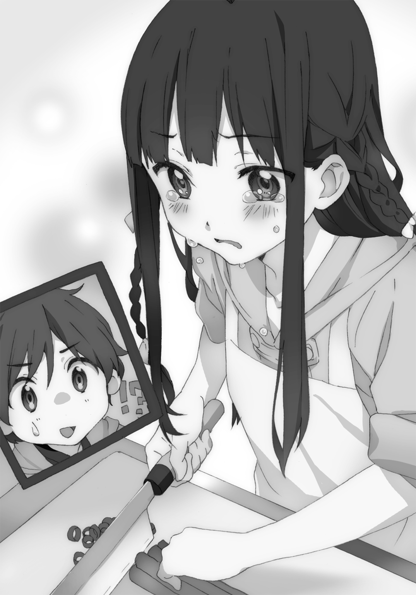
「約束っ......破ったからっ......友達なのにっ......」
「......約束？ 約束って......」
その単語を聞いて、ひとつ思い出した。小百合が儀式の日に口にした、決意。
『みんな守る。この手が届く範囲ぜんぶ、春一も羽音ちゃんも、守る』
印象的だったせいか、頭の中で鮮やかに反芻される。そして、わかった気がした。
小百合が見ていたのは......敗北の、さらにその先だったのだ。
「小百合、小百合よお。なに言ってるんだよ。ちゃんと俺も羽音も守ってくれたじゃん。おまえが身体張って、飛鳥丸から守ってくれてたじゃん」
「守れてないっ......守ったのは、栗子っ......もし栗子がいなかったらっ、春一はまた怪我させられて、羽音ちゃんも奪われてたっ......私は約束を、破ったのっ！」
当の本人が許しているというのに、強情にもこの半天然の魔法少女は自責を深めていく。
「私がっ、羽音ちゃんを橋姫の巫女にしたいってっ、言ったからっ......そのせいでっ......こんなことになって......っ......ぜんぶ、私のせいっ......」
「おい......その話は前に片がついただろ。みんな悪いし、みんな悪くないんだよ」
「ちがう......っ！ 私が奈々子さんに、羽音ちゃんだったらって言わなかったらっ......！」
ダメだ。もう悪いほうへ意固地に......独りよがりになっちゃってる。なにがそんな風に考えさせるんだ......なんでその耳に俺の言葉は届かないんだ。
ここで小百合は、張っていた声をひそめ、忍び泣くように、ぽつりぽつりと弱々しく、よくわからないことを言い出した。
「......欲張ったのかな、私......」
「......なんで」
「春一と友達になって......羽音ちゃんとも友達になったからって......っ......羽音ちゃんがこっちの世界にほんの少しでも、触れてくれればいいなって......願っちゃったから......。結果羽音ちゃんを苦しめて......っ......春一はイヤだってずっと言ってたのに、羽音ちゃんを完全にこっちの世界に引き込んで......みんなみんな苦しめて......私のせいで............うえっ......」
「........................」
愚かな俺は、忘れてしまっていたのかもしれない。
小百合が、ずっと孤独のなかで生きていたことを。
平安から続くという家柄のせいで、同年代の人たちは小百合に近づかなかった。数週間前この街で出会った俺が、最初の友達だったんだ。
小百合にとって俺との......友達との触れあいはどれもこれも新鮮で、だからこそなにがきっかけで傷つけたり嫌われたりするかわからなくて......常に探り探り、不安の連続だったんだ。
友達を知った小百合は、再び独りになることに、とんでもない恐怖を感じているんだ。
それなのに俺は、そのことを考えなくなっていた。そんなんで......なにが友達か。
「小百合、俺は絶対におまえの友達だから」
小百合は「え......？」と呟き、こちらを向いて濡れる瞳を見せる。
「たかだか約束を違えただけじゃ嫌いにならないし、俺の大切なものを危ないことに巻き込んでも、おまえの前からいなくなったりしない。絶対に。俺とおまえとの縁はそう簡単に切れないし、切ってやらない。だから、安心しろ。泣かないでくれ」
伝えたいこと、ぜんぶ言ってやった。だが小百合はまだ不安なようだ。そんなうまい話あるわけないと、友達を知らない俺の友達は、疑っている。
「でもっ......約束やぶったのにっ......簡単に許せるはずないしっ！」
「わかったよ！ じゃあもし約束を破ったら、友達として俺はこうしてやる！ おらおら！」
頑なすぎてちょっとムカついてきたので、俺は小百合の頰を思いっきりつねり回すという罰則を制定する。涙で濡れてつるつる滑る小百合の頰をそれでも絶対に放さないように強く摑み、引っ張り回す。
「うっ、うあっうあっ......ひたひひたひ」
正直に言おう。小百合の頰つねるの、超楽しい。
放してやると、小百合は今までとはちがった涙を浮かべ、大事そうに頰をさすっていた。
すると小百合は眉間にシワをよせ、子供のようにむくれはじめる。
「じゃあっ、春一も今言ったこと約束っ！ 絶対に、私の前からいなくならない！」
「おお、望むところだ。やぶったらいくらでも頰つねってくれ」
「いや、私はあまり春一の頰をつねりたいとは思わない」
「そ、そうか......」
急に冷静になったな......いいけどさ......。
「だから約束やぶったら......私の言うこと一コ聞く。今思い浮かばないから、そのとき考える」
「いいよ。なんでもする。約束やぶることなんて絶対ないし。おまえももう、やぶるなよ」
改めて釘を刺すと、目尻が上がって引き締まった顔が、俺を見つめる。
「うん。もう、違えない。春一も羽音ちゃんもみんなみんな、この手が届く範囲......いや――戸隠の届く範囲は、私が守る」
「かなり広がったな」
「うん」
筋肉が弛んだような笑顔で、小百合はしっかりと頷いた。
「おまえのそんな自然な笑顔、最近見てなかった気がするなあ」
「自然に笑うのって......難しい。すごく」
「おまえにとっちゃそうだろうな。羽音を見てよく勉強しなさい」
「......春一は、人が笑ってるの、好き？」
「そうだな。特に女の子は笑っているのが一番だ。そう、羽音のように」
ツッコミ待ちだったのだが、小百合は「そっかそっか」と微笑むだけだった。
仕込みはもういいのだろう、小百合は刻んだ長ネギを冷蔵庫に入れると、きっぱりとした足取りで厨房をあとにする。
孤独を恐れて泣いていた少女の面影は、もうそこにはなかった。
いくらでも食べていいよ、との言葉を素直に受け取った女子三人の食べっぷりに顔を青ざめさせる奈々子さんは、なかなか新鮮だった。
よく食べる子の羽音と、なんだか吹っ切れた様子の小百合、二人を見てつられた栗子は、それはもう店にあるすべての肉を食い尽くすのではと危ぶんだほど、焼き肉を堪能していた。
その後俺は羽音とともに帰宅、現在は自室でのんびりとネットを眺めている。そんなとき、羽音がなにやらカメラを持って部屋に入ってきた。
「はるにぃ今大丈夫？ 祭のときの写真、みんなに送りたいんだけど、よくわかんなくって」
「あーそういえば全然見てなかったな、あのときの写真。せっかくだし、今見てみるか？」
「うん！ 楽しみーっ！ 私どんな感じだったのかなっ？」
俺はカメラからＳＤカードを取り出し、ノートパソコンにデータを読み込む。羽音とベッドに並んで寝転びながら、画像をスライドショーで表示する。が、思いもよらぬ事態が発生した。
「あ、小百合ちゃんだ」
一枚目に表示された画像はなんと、境内のベンチに座るマヌケな顔した小百合だった。しまった！ 羽音の巫女姿を撮る前に小百合を撮って遊んでたんだった！
「わあああっ！ ち、ちがうぞ羽音！ これはだなっ、試し撮りだから！ こいつがどうしても撮ってって言うから仕方なく撮ってやっただけで......」
「大丈夫だってはるにぃー、こんなことで嫉妬なんてしないよー。もう、腫れ物扱うみたいに。そんな心狭くないですよーだ」
「そ、そうか......そうだよな。ごめんごめん」
よかった......ここで嫉妬が発動してしまったら、小百合を呼び出すハメになっていた。
羽音は「でも......」と呟き、スライドショーを停止させる。小百合の画像を表示し続ける画面を、恋人でも映っているかのように微笑んで見つめていた。
「いい写真だね、これ......」
「そうかー？ 被写体が市松人形だしなー」
「もーそんなこと言ってー。でも本当に......写真ってさ、撮る人の印象が出るよね」
羽音は画面の中にいる小百合を撫でるように、優しくなぞる。
「撮影する人とされる人の、お互いへの意識というか、絆みたいなの。信頼し合ってなきゃ、こんな写真撮れないよ」
そんなことないよ、と言おうとしたが、羽音の顔を見て少し戸惑った。嫉妬の呪いに苛まれる苦しいものではない、遠い場所を見据えるような、そんな表情。
「実はさ、聞いちゃってたんだ。さっき......はるにぃと小百合ちゃんが厨房で話していたこと」
「え......」
「ごめんね。たまたまトイレ行くときに、聞こえてきちゃって。盗み聞きしちゃった」
羽音は舌を小さく出し、可愛く悪びれる。たまたま聞こえちゃったなら、仕方ない。恥ずかしいけど。すっごい恥ずかしいけど。
「小百合ちゃんがあんな覚悟でいたなんて、知らなかった。そもそも小百合ちゃんの様子がおかしかったことさえ、気づかなかったよ......」
寂しそうな声色で呟く羽音。友達として、気づいてあげたかったのだろう。でも友達がそういうものだとは、小百合はまだ理解していない。嚙み合うにはまだ早かったのだ。
羽音は意を決したような面持ちで、俺に尋ねる。
「ねえ、はるにぃ......小百合ちゃんはどうして、はるにぃを守ることにこだわってるの？」
「......前の事件で、犯人逮捕のために俺の能力が必要だったから、協力する代わりに俺を守れって約束をしたんだ。でも......より執着するようになったのは俺が怪我したときだな」
もはや懐かしいとさえ感じる。あのときはまだ互いに互いのことをわかっていなかった。
「俺を守れなかった罪悪感であいつ、俺との出会いをなかったことにしようとしたんだ。俺とか羽音、関わったみんなの記憶を消してさ」
「え......」
「そうして自分だけでどうにかしようとしたんだ。まあ結局それも失敗して、記憶も戻させたけどな。でもそれから、いっそう俺を気遣うようになったな」
かつて小百合の犯した気丈な愚行、事件の裏話に、羽音は絶句していた。
その表情はなぜか、しとやかな笑みへと変わる。
「やっぱり、小百合ちゃんは強い人なんだ......」
「強い？」
前にもそんな感想を漏らしていたな。おそらくその強さとは、目に見えない部分のことなのだろう。変なところを気にするんだな、羽音は。
「大切な人のために、その人の中にある自分の記憶を消してでも守る......究極の自己犠牲だね。たぶん私には、思いつくことさえできないもん......」
「そんなの思いつかなくてもいい。考えが独りよがりなんだよ、あいつは。というか絶望的に、人との関係ってものがわかってないんだ。みんなの記憶消してあれだけ寂しい思いしたのに、まだ人といっしょにいることに不安を抱いてるんだ。独りでいた時間が長過ぎたから」
「でも......だからこそ守ると決めた人は、絶対に守ろうとするんだね」
「......ああ。約束したからな。あいつは羽音も、俺も、守ってくれるって。だから安心だ」
そう言うと、羽音は口元をほころばせた。
ここで羽音は、話題を大幅に変更させる。いきなり妙なことを言い出した。
「思ってたんだけどさ......私の呪いとはるにぃの能力って、ちょっとだけ似てるよね」
「え？ そうか？」
「うん。はるにぃの能力は『色』を見て人の本質を見抜く......醜いものもすべて。私の呪いは、私の嫉妬っていう醜いものに、私自身気づかされる。ね？ ちょっとだけ、似てるでしょ？」
言われてみれば......自他のちがいはあれど、人間のまっさらな本質を理解させられるという点では、似ているかもしれない。
頷いてみせると、羽音は澄みきった微笑みを見せる。
「もしかしたら私......少しだけかもしれないけど、嫉妬を受け入れられるようになったのかも。だってほら、こんなにはるにぃが小百合ちゃんの話ばかりしていても、苦しくなくなったよ」
おお、たしかに。よく考えれば、あの調理場での会話を聞いていても嫉妬が発動しなかったのは、かなりの進歩だ。その後の焼き肉屋さんでも問題なかったし。
もしかしたら今羽音は急速に、呪いの解除へと向かっているんじゃないか？
「この調子だな、羽音！ そうだよ、だって羽音が嫉妬なんかに負けるわけないんだから！」
「うん！」
喜びがにじみ出ているような返事をし、羽音は天真爛漫な笑顔を見せた。
この話題はここで打ち止めとなる。その後は長いこと小百合の画像で止まっていたスライドショーを再生させ、麗しき羽音の巫女姿を二人で鑑賞する。
終盤に控えていた羽音と小百合とのツーショットを見ると、羽音は頰に手を当てて、ほろりと「これも、いい写真だね......」と呟いていた。
羽音がこちら側に踏み込んでしまったことへの抵抗感は、やはりまだある。
しかし、そこまで悲観するものでもない気がしてきた。この隠し事のなくなった現状はきっと、羽音にとっても小百合にとっても俺にとっても、良い傾向だと思えた。
そしてこの呪いですら、いつか羽音が幸せになるために越えるべき壁なのだと。
そのときはまだ――そう錯覚していた。
翌日、羽音は可愛い寝顔のまま、目を覚まさなくなった。
第四章
定休日にもかかわらず、此花庵には明かりが灯り、店内には三つの人影があった。
俺、小百合、栗子の三人はでくのように椅子に座ったまま、だれも口を開かない。その顔はどれも失意の色で染まっている。
俺はもうこの世界のどんな光も目に入れたくないと、頭を抱え視界を閉ざしていた。
異変に気づきはじめたのは、正午を過ぎた頃だった。
午前のうちは、規則正しい羽音にしてはめずらしいな、などと俺と母は笑っていた。しかし母が出かけ、十二時、十三時、十四時と刻々と時が過ぎても、羽音は一向に目覚めなかった。眠る羽音を揺すり、声をかけてみたが、目を覚まさない。
十五時を過ぎた頃、俺は小百合たちと連絡を取り、検査のため羽音を此花庵まで運んだ。
それから小一時間が経ったときだ。ついに奥の部屋から奈々子さんが出てきた。
「奈々子さん！ 羽音はっ......？」
奈々子さんは俺の顔を見て唇を嚙み締め、首を横に振った。
「ダメ......起きない......」
「そんな......な、なんでですか......？ だって昨日の夜まで、普通に......」
「わからない......けど症状からしておそらく、橋姫の妖力にいよいよ耐えられなくなって、意識すら支配されているんだと思う......」
静聴していた栗子だったが、我慢できないとばかりに奈々子へ疑問を投げる。
「でも......昨日検査したときは問題なかった......」
「羽音ちゃんが冒されている呪いは感情が要因だから......想いひとつで妖力値は爆発的に上昇することもあるの。春一くん、昨日の夜、羽音ちゃんになにかおかしなことなかった？」
おかしなことは、なにひとつない。ただ......原因はあのときの会話にあるのかもしれない。ベッドの上での会話。小百合のことや、羽音の嫉妬のこと......。
「......いろいろな話をしました。小百合のこととかも......。だけど、羽音は苦しむ様子を一切見せていなかったですよ......っ？」
「......だとしたら......心配かけないよう、その苦しみを隠していたのかも......そうして嫉妬心が蓄積したために妖力が暴発した、と考えられるね......」
隠していた......？ そんなの、少しも気づけなかった......。俺はバカか......っ！
「それで......治す方法は......目覚めさせる術は......？」
俺の問いに、奈々子さんは沈痛な面持ちで正直に答える。
「根本の原因がわからないから......羽音ちゃんの意識がないのならもう、できることは......」
「そんな......」
がくっと膝の力が抜け、気づいたときにはうずくまっていた。絶望に脳を支配され、もうなにも考えられなくなっていた。
耳には、奈々子さんと小百合の会話が聞こえてくる。
「小百合ちゃん、藤十郎ちゃんは......？」
「わかりません......何度も電話かけてるんですけど、繫がらなくて......」
そんなとき、ポケットに入れていたスマホが振動した。取り出してみると、画面には『藤十郎』の文字。ひとまず出てみることに。
『久しぶりだな。おまえさんは、巫女の兄の......春一だったかな？』
明らかに藤十郎のとはちがう男の声。その声には確かに聞き覚えがある。
「おまえ......三鉾坊かっ？」
その名を呼ぶと、小百合、栗子、奈々子さんの三人は一斉に俺を見る。
『ああ、そうだ。ちょうど一週間ぶりだな。元気にしていたか？』
「ふざけんな！ こっちはそれどころじゃ......てか、なんでおまえが藤十郎の携帯から......？」
『そう、それが本題だ。実はあの水猫、我々が捕らえさせてもらった』
「なッ！」
脳にクギを打ち込まれたような驚きが走った。俺はすぐに手元にあった紙ナプキンにペンで『とうじゅうろう、ゆうかい』と殴り書きする。瞬間、三人は息を呑んだ。
『もっと早く動きたかったんだがな。情報収集に時間がかかってしまった。それで今日、晴れて実行に移したわけだ』
「なにが目的だ！」
『人間は忙しなくて仕方がないな。まあいい。要求はひとつ、橋姫の巫女、そこにいるのだろ？ 彼女を連れ、大鳥見山の我が城まで来い。休更月の者なら知っておるだろ』
「羽音を......？ ......そうすれば、藤十郎を返してくれるのかっ？」
『それはどうだろうな。ただおまえさんらは立場上、こちらの要求を飲むしかないと我は思うがな。それでは......』
「待て！ 藤十郎の声を聞いてないぞ！ 本当にそこにいるのかっ？」
『ああ、忘れていた。声を聞かせないと意味がないな。ほれ』
『うぐっ......は、春一さま！ 来てはいけません！ わたくしは......』
『おっとそこまでだ。......そういえば、巫女は今、相当に苦しんでいるのではないか？』
「なッ！ てめえ......なにか知ってるのかっ？」
『まあ、幾ばくかはな。知りたいなら来るがいい。では』
軽薄な声を最後に、一方的に切られた。その前に聞こえた声はたしかに藤十郎のものだ。
電話を終え、場には沈黙が流れる。そんな中を、凜とした声が響く。
「......行く」
やりとりをメモした紙ナプキンを見て、小百合はそう言って立ち上がる。戸隠の入ったケースを手に扉へ向かった。
「ま、待って小百合ちゃん！ 状況を整理しないと......」
「待ってられない。それに羽音ちゃんを連れて行く必要もない。向こうだって水神の座を乗っ取りたいなら、藤十郎に危害は加えないはず」
「たしかに......じゃなくて！ こういう場合はよく考えて―――ああもう！ じゃあ私と小百合ちゃんで大鳥見山まで行くから、栗子ちゃんはここで羽音ちゃんの警護！ 春一くんも......」
「俺も行きます。大鳥見山」
俺の発言に、三人全員が見開いた目で俺を見る。
「俺も行って、直接三鉾坊に羽音について、聞きます」
「ああ―――もう、若い！ 若いよみんな考えがっ！ でも......春一くんを置いてここを奇襲されたら栗子ちゃんは二人を守りながら......はキツいね！ よし春一くんも行こう！」
「うっす！」
思い通りになったらしい。こういうとき奈々子さんはいろいろ考えなきゃならなくて大変だ。
俺は外に出る前、奥の部屋で眠る羽音をもう一度見に行く。苦しみも安らぎもなく、ただ静かに眠る妹の耳に口を近づけ、告げる。
「ごめん羽音、ちょっと弱気になってた。でももう大丈夫。絶対あの川天狗野郎ふん縛って、羽音を救うから。もうちょっと待っててな」
無論、返事はない。あとどれくらい待てば、あの天使の笑顔が見られるのだろうな。
羽音から離れた俺は、部屋の外でこちらを見ていた栗子の肩に手を置き、簡潔に頼む。
「栗子、羽音を頼む」
「うん。絶対守る」
揺るぎない瞳で、栗子は宣言する。それだけでもう安心だった。
此花庵を出ると、もう小百合と奈々子さんは準備を終えていた。小百合は俺に手を差し伸べる。
「最高速で飛んでいく。振り落とされないように、しっかり握ってて」
言われた通り俺はその白く小さな手を握った。
「行くよっ！」「ああっ！」
そうして俺たちは飛び立つ。向かうは大鳥見山、川天狗一派の根城。
「大鳥見山にこんな城、あったんですか......？」
大鳥見山の中腹、夜粋川の上流のほとりに異様な存在感を放つ建物がひとつ。目前にそびえる立派な城に、俺は気圧されてしまう。これ川天狗一派たちが建てたのか......？ ていうかこんな城があるなんて、聞いたこともないけど......。
「ここは境界を越えた『怪の域』だから、普通の人間は入ってこれないの」
「か、かいのいき......？」
「ゆっくり説明する暇はないから簡単に言うと、妖怪が住処とする領域ね。『意識』して足を踏み入れないと入れないの。思いっきりアウェーだけど、結界張らなくていいのは助かるね」
まあ......あとでじっくり聞こう。今はそれどころではないので。
城内へ繫がる大きな扉を見つけ、俺たち三人は堂々と正面から入り込むことに。ありがたいことに開けるだけで重労働だろうでっかい扉は開きっぱなしだった。
扉をくぐると、天井が高く広い空間が俺たちを迎え入れる。
しかし......待っていたのは、それだけではなかったようだ。
「あら、大勢でお出迎え」
平然とした様子で奈々子さんはその光景を的確に表現していた。広間にいたのは、密集して並ぶ黒と白の山伏装束を着た、翼を持つ男たち。総勢百人以上はいるように見える。そのすべての手には、刺股。なるほど川天狗一派......こりゃ一筋縄じゃいかないぜ......っ！
「春一、動き辛いから服摑まないで」
「お、おおう、バッチこいだぜ......」
震え上がる俺とは対照的に、小百合は至って冷静な顔で川天狗の軍勢に目を向けている。と思ったが、なにやら内で昂るものを抑えているようだ。
静かに燃える小百合の瞳の先には、軍勢の先頭で仁王立ちする少女。目立つ桃色の山伏装束を身に纏う、川天狗一派特攻隊長、飛鳥丸だ。
「よくもノコノコやってきたな！ 人間ども！」
「おい！ 藤十郎は無事だろうな！」
「あ、あたぼーよ！」
なにか言いよどんだのは気になったが、飛鳥丸はすぐさま次の言葉を紡ぐ。
「それより、橋姫の巫女はどうしたの！」
「忘れた」
「じゃあしょうがないね！ あたしもよくやる！」
飛鳥丸はへらへらと笑って納得していた。いいのかよっ、という心の中のツッコミは、彼女の背後に控える川天狗たちによって代弁される。
「あ、飛鳥丸様！ ダメでしょそれじゃ！」
「あっ、そっか！ こら人間ども！ 約束やぶるなんて、そんなの......アレなんだぞ！」
どれだよ。やっぱあの子どこか小百合と同じ匂いがするな。
そのとき、小百合が俺や奈々子さんを置いて、一人軍勢に向かい威風堂々と歩いていく。俺たちと軍勢のちょうど真ん中あたりで立ち止まると、飛鳥丸へ宣戦する。
「藤十郎の無事を確認できないのなら、立場は同じ。なら互いにやることは単純、力ずくで奪うのみ。だから――来い、飛鳥丸」
雄々しい小百合の背中を見て、奈々子さんは呆れるように呟いた。
「まったく......負けたのが悔しかったのね、小百合ちゃん。でもたしかに、三鉾坊さんや藤十郎ちゃんの姿が見えないのは気になるねえ......」
「それよりいいんですかっ、小百合一人で行かせて！ 飛鳥丸だけならまだしも......」
「大丈夫よん。あの飛鳥丸って子も、どうやら戦闘に対してはまっすぐみたいだからね」
すると前方にて、奈々子さんが言った通りのやりとりが行われる。
「いいよ、『よわいやつ』。もう一回闘ってあげる」
「飛鳥丸様、加勢しますか？」
「いい。一回倒したやつだし。前は三鉾坊さまに手伝ってもらっちゃったから気になってたの」
飛鳥丸は軍勢から離れ、小百合へと歩を進める。
この瞬間、だだっ広い空間が、小百合と飛鳥丸のためだけの闘技場となる。
静かに対峙する両者。飛鳥丸はどこか嬉しそうに微笑んでいる。
「あたしに負けてもまた立ち向かってきたのは、あんたがはじめてだよ『よわいやつ』。うれしいよ、たのしいよ」
「そう」
「あの栗みたいな髪のやつはいないの？」
「いない」
「そっか。あいつともやりたかったけど、しょうがないね。『よわいやつ』......あんたで我慢する！」
言下、飛鳥丸はぴょんと飛び上がるやいなや空中で姿を消した。
高さもあるこの広間にて、好き勝手飛び回っているのだろう。戦闘機のような風を切る音と壁を蹴る音が、断続的に鼓膜を揺らす。姿も見えない高速少女に、きっと相手にもされていないであろう俺でさえ、恐怖で心臓がバクバクと高鳴っていた。
「........................」
しかし、ここから見える小百合の横顔からは畏怖も、慢心も、殺気すら感じられない。まるで星でも眺めるように、ぼーっと空中を見つめていた。
それどころか、小百合はありえない行動をとりはじめる。
「なッ......なに目瞑ってんだ小百合ッ！」
まぶたを下ろし、だらりと身体を脱力させる小百合。呼びかけても、反応しない。小百合の愚行に、奥で控える川天狗たちもあざけ笑っていた。
「な、奈々子さん、あいつあんなことしてますよ！ アホでしょ！ やっぱド天然でしょ！」
「まあまあ、慌てなさんな春一くんや。きっと、小百合ちゃんにしかわからない『なにか』を感じ取ってるんだよ」
「な、なんじゃそら......」
いくら俺が焦っても、奈々子さんは平気な様子だった。
「あははっ！ 立ち向かってきたくせに、寝ちゃうのっ？ おもしろーい！ ホントこんなのはじめて！ たのし――い―――っ！」
飛鳥丸の声は上空のあらゆる方角から響いてきて、頭がおかしくなりそうだった。声が聞こえたところで位置を把握することもできない。それくらい、速すぎる。
「でも......長引かせるなって、さんさんぼーぼーさまに言われちゃったから......バイバイ」
飛鳥丸は最後にこう告げると、もう声は聞こえなくなった。虎視眈々と小百合を狙っているのだ。どのタイミングで襲いかかるかもわからない。
緊迫した状況下、もはやだれ一人言葉をもたらすことはない。呼吸さえ厭う、勝利と敗北という紙一重を具現化した時間の連続。
そんな最中でも......小百合はその空色の瞳を外界に晒さない。
剛胆か蛮行か策略か――力の抜けた小百合の肢体は、一切の動きも見せず――。
「うっ......！」
突如として聞こえなくなったのは、暴風雨のような風切り音。
聞こえてきたのは刹那的なうめき声と打撃音。
そして、凪のような静けさを破る、鈴をふるわしたような声――。
「小百合ちゃん明鏡止水」
ドサッと、端正に磨かれた大広間の石床に墜ちたのは、飛鳥丸。眠るように気を失っていた。
「なッ......！」「あ、飛鳥丸様ッッ！」
びっくりしたのは俺だけでない。川天狗たちも特攻隊長の敗北にざわめく。視線の先は飛鳥丸と、その奥でいつの間にか戸隠を構えていた、小百合。
「不意打ちさえなければ......私のほうが、『つよいやつ』」
気にしていないようで、ムカついてたんだろう。小百合は鼻息荒く言い捨てた。
「い、一体なにが......？」
「おそらく、たったひとつの突きで意識を刈り取ったね」
説明する奈々子さんも、驚いているのだろう。一番弟子の勝利に声を震わせる。
「相手を余計に苦しめず、気絶させて捕らえるのが、大河流杖術なんだよね」
「いや、まったく見えなかったんですけど......小百合が攻撃繰り出した瞬間も、引き延ばされた戸隠も......。というより、なんで目を瞑ってたのに飛鳥丸を捉えられたんですか......？」
「そもそも人間の肉眼で飛鳥丸ちゃんを捉えるのは不可能。でも小百合ちゃんは敵の妖力を五感を超えた気配として察知する訓練をしてきた。心を止水のように落ち着けて、ね。だから目を瞑ったのはいらない情報を遮断して......って、悠長に説明してる場合じゃないね」
出し抜けに奈々子さんは視線を正面に戻す。そこには、綺麗な顔で倒れた飛鳥丸を運んでいく川天狗と、その奥でこちらを睨みいきり立つ、多勢の川天狗軍団。わー大変。
「どどどどうするんですか！ めっちゃ、めっっっちゃ怖い顔でこっち見てますよ川天狗さんたち！ 二対百って、大丈夫なんですかっっ？」
「うん、あたりまえのように自分は頭数に入れないんだね、春一くん」
そらそうでしょ。俺なんて死神もどき一人パイルドライバーしただけの男ですよ。
「あのひとたちが飛鳥丸ほどの実力を持っているとは思えない。なら余裕っ......って、お？」
挑戦的な発言をする小百合だが、奈々子さんがその肩に手を置いて、押しのける。
「ちがうでしょ、小百合ちゃん。条件下における、フォーメーションが」
小百合は「ああ、そっか」と言って、すんなり奈々子さんの言葉に従う。奈々子さんを最前線に残し、俺をかばうようにすぐ前まで後退してきた。奈々子さんはというと、グッと背筋を伸ばし、アトラクションを前にした子供のような口調で言う。
「そ。サシで燃える小百合ちゃんとちがって私は――多勢相手のほうが燃えるのよん」
戦う気満々の奈々子さんははじめて見た。というより、奈々子さんの戦闘を俺は見たことがない。タイミング悪く戦場にいなかったり、小百合にいいところを譲っていたからだ。
「小百合、奈々子さんはどんな......」
尋ねようとした、そのときだ。奈々子さんの小さな背中の向こうに見える川天狗の大群が、そろって野太い声と、ドドドドドという足音を立てて迫ってきた。
百人の川天狗は地鳴りのような音とともに空を飛び、地を駆け、向かってくる。まるで壁が押し迫ってくるような光景に、俺は「ぎゃああああ！」と悲鳴を上げ、小百合の背中に隠れた。
「落ち着いて、春一。見てみ、奈々子さんの戦い方おもしろいよ」
「へ？」
小百合の肩越しに、奈々子さんの後ろ姿を覗き見る。襲いかかってくる川天狗の多勢を前にしても、百五十センチの身体からは微塵の恐怖心も見いだせなかった。
よく見れば奈々子さんは、両の手のひらを天に向けている。そしてそれぞれの指先から奈々子さんの『色』を表すライトイエローの『糸』が発現し、続々と伸びていく。十本の糸は手のひらの上で複雑に縫い合わされ、なにかを形作っていた。
「なんだあれ......クマ？」
糸による縫い物は、数秒足らずで明瞭に形を示した。ストラップサイズの、小さな二体のクマ。クマを作ってどうしようというのか？ そもそもあの糸はなんだ？
「って！ わわわ―――奈々子さんヤバいって―――っ！」
川天狗の大群はもうすぐそばまで接近していた。クマ作ってる場合じゃないよ奈々子さん！
「んにゃ、クマ作ってる場合なのよん」
思いっきり心を読まれたことによる驚きは、すぐに別の驚きで塗り替えられる。
奈々子さんは完成した二体のクマを、両手のひらでポイッと放った。すると、直後――。
「「「う、うおわあああああああっっ！」」」
驚愕する俺の叫び声は川天狗たちとシンクロする。怖い顔をしていた川天狗たちだったが、突然摩訶不思議な障害物が現れたことで、息が詰まったようにぎょっと立ち止まる。
彼らの前に登場したのは、ライトイエローの二体の巨大なクマだった。
奈々子さんの手にあった二体のクマが、手を離れた直後まばゆい光を放ち、次の瞬間には急成長したのだ。その全長は十メートル近い。大広間の天井に届きそうなスケールだ。
「ク、クマでっけー......」
「奈々子さんの魔術師としての特徴は、魔力が無尽蔵であること。そして魔力の具現化がずば抜けて巧いということ」
混乱する俺に、小百合は敵に目を向けたまま解説をはじめた。
「要は己の魔力構造をほぼ完璧に理解しているが故、魔力による実体の創造が自由自在なの。それを証明するのがあの糸、通称魔力糸。一見単純なように見えてごくごく細密な魔力分子で構成された魔力糸は、丈夫であり複雑な具現化も可能にする超高等技術。魔力具現化の能力は、超結界とか結界術にも繫がる」
「......まあ、聞いてもよくわからんやね」
「だろうね。もう少しがんばりましょう」
「でもじゃあ、あのクマは奈々子さんの魔力の結晶ってことなんだな？」
「うん。奈々子さんの意思で自由自在に動く。大勢を相手にするのに向いてる技術」
だから多勢相手のほうが燃えるのね。知識量とか治療魔術とか、奈々子さんのすごいところはいくつも知っているけど、改めて感心してしまった。
「さあクマゴロー、クマワトソン、レッツらゴーだぜ！」
奈々子さんが名を呼んで鼓舞すると、二体の巨大クマは律儀に振り向き、頷く仕草を見せた。
うわっ......顔ぶっさいくだなークマ......なんだあの悲しい気持ちにさせる顔立ちは......。
「奈々子さんセンスが独特だから、あれが可愛いと思ってるの」
小百合が耳打ちしてくる。技術は天才的なのに、芸術センスは虫の息だな......。
クマゴローとクマワトソンに恐れをなしていた川天狗たちだが、慣れてきたのか戦意を取り戻す。猛々しく叫びながら、二体に立ち向かいはじめた。
「お、恐れるな！ 大鳥見山川天狗一派は、こんなブサイクなクマには屈しない！」
「そ、そうだ！ よく見ろおまえら！ こんなブサ......ホントにブサイクだな！」
「我ら誇り高き一団！ 自覚しろ、我らの一挙一動が三鉾坊様の......ホントにブサイクだな！」
士気を高めるために言いたい放題の川天狗たち。しかし......その方法は逆効果だった。
「んんんんどこがブサイクじゃあああああああッッ！ クマゴローッ、プレスッ！」
奈々子さんは叫び散らす。すると向かって左手のクマがぽーんっとジャンプすると、川天狗たちめがけてボディプレスをしかけた。
「「「ぎゃあああああああ！」」」
ずどーんっという轟音を立て、クマゴローが身体を地面に投げ出すと、地面にいた者、飛んでいた者をまとめて圧し潰した。そうしてプレスを喰らった者たちは......。
「ぐっ......なんだ......ち、力が入らない......」
その場に倒れたまま、動けないようだった。
「魔力を具現化しても質量はさほどない。だから物理攻撃は効かない。けどあの糸には触れた者の妖力を吸収するギミックが施されてるから、クリーンヒットすれば相手はもう戦えない」
小百合がそうつけ加える。相手を傷つけずに戦力を削ぐわけか、便利な能力だ。
「さあクマワトソンも戦闘開始だよ！ クマゴローは早く立ちな！ くつろがない！」
クマワトソンはガッツポーズし従順に言うことを聞く。が、ボディプレス後のクマゴローはごろりと寝転びリラックスムードだ。なるほど奈々子さんの魔力によって生まれたクマである。
「小百合ちゃんはわかってるね？ 取りこぼした敵を撃ち落としてね！」
どうやら小百合はクマ二体をかいくぐってきた川天狗を迎撃するポジションらしい。「了解」と呟くと、どこまでも伸びる戸隠の突きで次々川天狗たちをスナイプしていく。
見たところクマワトソンは器用な動きを得意とするようだ。巨体にもかかわらず俊敏に動き、美しいワンツーや蹴りを見せる。対してクマゴローは大技を繰り出したがるらしい。今はなぜかブレイクダンスという攻撃だか遊びだかよくわからない技を披露している。
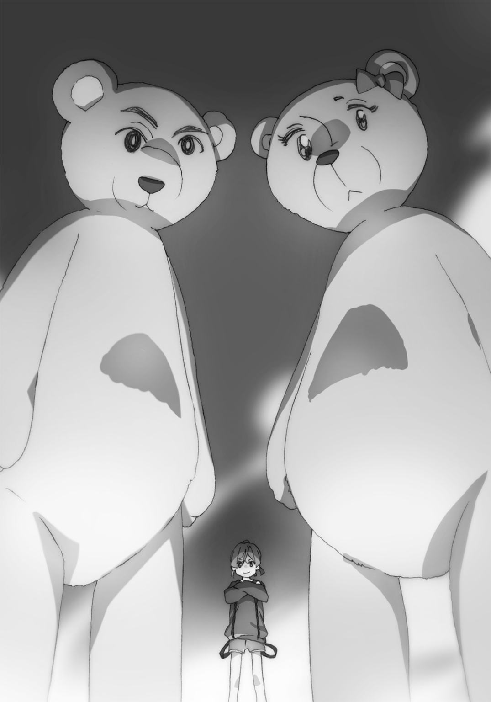
なんかもう、あそこだけ怪獣映画のような様相を呈していた。
「見切った！ あとは発動者であるおまえを叩けば、崩れる！」
「おおう、見切られた！」
不意に、クマたちを振り切った一人の川天狗が一見無防備な奈々子さんに襲いかかる。奈々子さんは「うわー」とか言って怯えるような仕草を見せていた。
しかし、川天狗が突き出した刺股は瞬発的に現れたうずまき状の防御壁によって防がれた。かざした右手の指から発生した魔力糸が瞬時に巻かれ、バリアとなったのだ。
「なんつって。ごめんなすって」
今度は左手の指から伸びる魔力糸で敵を縛り上げる。そうして勢いよく腕を引っぱると、敵はコマのように回転し、へたりと倒れるとそのまま動かなくなった。
「うわ......接近戦でも、十分強いじゃないですか......」
多勢相手のほうが燃えるとか言っておいて一対一でも強いって......無敵かよ。
奈々子さんの活躍で、流れは一気にこちら側へと傾く。あれだけいた川天狗軍団も、もう半分くらい戦意喪失していた。
これは制圧するのも時間の問題か、と勝手に思っていた、そのときだ。
「んんんうあ――おはようございます！ ってあれっ？ なんであたし寝てたのっっ？ あっ、なんかおなかいたいっ！」
広間の脇で寝かされていた飛鳥丸が、突如無駄に元気な声を上げて起き上がった。
「小百合ちゃん明鏡止水、完璧に喰らったのにもう起きるなんて......相当タフ」
そんな飛鳥丸を見て、小百合は呆気にとられていた。さすがは特攻隊長と言ったところか。
寝ぼけて頭をふらつかせていた飛鳥丸だったが、わりとすぐに事態を把握したようだ。阿鼻叫喚の大広間を見渡し、ハッとした顔で言い放つ。
「なっ......なにあのでっかいクマ！ かわい―――っ！」
「「「そっちかよ！」」」
またも俺は川天狗たちとシンクロするのだった。彼らもきっと苦労しているのだろう。
ちなみに珍しく可愛いと言われて嬉しかったのだろう。奈々子さんはこちらを向き、満面の笑みでサムズアップしていた。集中せい。
「飛鳥丸！ 三鉾坊は......藤十郎はどこっ！」
「へ？ あっ、『よわいやつ』......いやあたしさっき負けたのか！ じゃあ、『つよいやつ』？ でも一勝一敗......『引き分けやつ』？」
「大河小百合！」
「さゆり！ さゆりめ―――もう一回勝負だ！」
「それより三鉾坊が城のどこにいるかって聞いてるっ！」
「それよりじゃない！ それより大事なものなんてない！ てゆーかさんさんぼーぼーさまが城にいるわけないでしょっ、このアホめ！」
直後、現場は一瞬にして静まり返った。
すべての者が手も足も止め、飛鳥丸を凝視する。俺、小百合、奈々子さんの三人は「え？」という顔を、百余人の川天狗たちはそろって「あーあ......」という顔をしていた。
飛鳥丸は唐突な静けさに「あれ？」と不思議そうにしていたが、川天狗たちの醸し出す雰囲気に、やっと理解したらしい。
「ああ――――っっ！ これ言っちゃいけないやつだった―――――っっ！」
「飛鳥丸様！ もう口を開かないで！ このアホ！」
「さんさんぼーぼーさまがいるのは――――っ」
「やめて―――っ！ 飛鳥丸様これ以上やめて――――っ！」
「......どこだっけ？」
百人が一斉にずっこける光景はさすがに圧巻だった。
劇団川天狗一派のコントに感銘を受けていたときだった。ポケットのスマホが震える。取り出して画面を見ると......「えっ！」という声が自然と漏れた。
表示されていた名前は、『藤十郎』。慌てて出ると、こちらが声をかけるよりも早く、聞き覚えのある幼い声が耳に入り込んできた。
『春一さま！ 三鉾坊がいるのは大鳥見山の城ではありません！ 水野橋です！』
「なんだってっっ？」
『三鉾坊は小百合さまたちを大鳥見山に向かうよう仕向け、邪魔が入らない間に水神の座強奪の儀式を執り行おうと画策したのです！ そのためにわたくしを捕らえ、水野橋に......』
「ちょっと待て！ 橋姫の権限を奪うためには羽音も必要なんじゃ......？」
『現在の不安定な橋姫の巫女では力の権利がないも同然なので、わたくしだけでも無理矢理奪えると考えたのでしょう......悔しいですがやつの力なら、できなくはないです......』
「そんな......てか、おまえはどうやって電話を......？」
『隙をついて逃れたのです。今は橋の下に身を隠しています。三鉾坊の現在位置も把握していて......それより！ このままでは水野橋が奪われてしまいます！』
「だな、ちょっち待ち！ 小百合、奈々子さん、三鉾坊がいるのは水野橋です！ 今すぐ......」
と、言い切るよりも早く動きを見せたのは、川天狗一派だった。
「なっ！ まだいたのか......っ？」
彼らは窓という窓、扉という扉を死守する隊形をとりはじめた。また出入り口からも新たな川天狗たちがぞろぞろ現れ、扉を塞ぐ。俺たちを閉じ込め、橋まで行かせない気だ。
「こりゃ一筋縄じゃいかなそうだね......敵ながら天晴な戦陣だこと......」
「ど、どうしますっっ？ どうしましょうっっ？」
電話の向こうの藤十郎も状況を察したのだろう。こんな妙案を申し出てきた。
『わたくしの召喚術で小百合さまか奈々子さまをこちらへ呼び寄せます！ 城の位置は把握していますので、できるはずです！』
「な、なるほど......でもそしたらこっちの戦力が手薄に......」
「私が残るよ！」
そう言いだしたのは奈々子さんだ。その目には少しの恐れもない。むしろさっきよりも愉悦の混じった表情をしている。
「言ったでしょ？ 私は多勢のほうが燃えるの！ だから小百合ちゃん、あなたが行って！」
「......わかった」
小百合は力強く頷いた。そこで俺は決定した方針をすぐさま藤十郎に伝える。
「藤十郎、小百合だ！ 小百合をそっちに召喚しろ！」
『了解しました！』
そうして電話は途切れる。おそらく藤十郎は召喚の術を唱えはじめたところだろう。
「小百合ちゃん、三鉾坊の黒羽根の陣にだけは気をつけるように。身動きとれなくなるからね」
「はい。もう一回経験したので、大丈夫です」
「小百合......がんばれよ！ 夜粋川の......いや、この街の命運はおまえにかかっている！」
「うん！」
き、決まった......っ！ 人生で一度は言ってみたい名脇役的セリフ、まさかこの口で言える日が来ようとは......っ！ もう本事件での俺の役割は終わったと言ってもいい。
感動的すぎて身体がふわふわしてきた。しかも俺を祝福するような光が、身体を包んで......。
「って！ なにっ？ なんか俺光ってるよ！ 神々しくなってるよ！」
カッコ良すぎたからか突如光を放ちだした俺に、小百合や奈々子さんも目を丸くしている。
「は、春一、それだけじゃなく......足から消えはじめてる」
「えっっ？」
見下ろすと、俺の足の先は光の粒と化していた。もう膝より下は完全に消失している。
「なに俺死ぬのっ？ こんな唐突に成仏しちゃうのっ？」
「落ち着いて春一くんっ......多分これ、藤十郎ちゃんだよ......」
藤十郎？ たしかに、これは藤十郎の『色』を示すリンドウ色の光......ま、まさか......っ！
「春一......」
小百合はどこか達観した顔で、告げる。
「この街の命運は、春一にかかっている......」
目を開くこともできない閃光が広がると同時に、ジェットコースターのような強烈な浮遊感が俺を襲う。おおよそ把握した俺は、心の中で叫ぶのだった。
あいつこの局面で......俺と小百合、間違えやがった―――――っっ！
即座に感じとった。今までとはちがう吹きさらしの感覚。青臭い雑草の匂い、川の流れる音。
目に映るのは、闇に浮かぶ黒き翼を持った着流しの男、三鉾坊だ。
「おまえさんが......なぜ？」
河原に立つ三鉾坊は、驚いた表情でいきなり現れた俺を見る。そのとき、俺と三鉾坊との間に、なにかがズボッと雑草を搔きわけ飛び出した。小学生の姿に変化した、藤十郎だ。
「見たか三鉾坊っ！ わたくしの召喚術で援軍を呼んだのだ！ この方こそ休更月の若き妙手、黒き静黙の杖術使い、大河小百ええええええなんで春一さまがあああああああッッ？」
「知らね――よ、おまえが呼んだんだろうがッッ！」
飛び上がる藤十郎とともに、俺は驚き喚く。
「ふふふ......残念だったな水猫よ。切り札も、不発に終わったようだ」
「「ひいっ！」」
三鉾坊は、わざとらしく足音を立ててゆっくりと近づいてくる。
先ほどまで目の当たりにしてきた川天狗たちを率いる、総大将。漆黒の翼を広げる威圧的な姿は、恐怖を増長させる。俺と藤十郎は抱き合って怯えていた。
「あっ......てかそんな姿、周りの人に......あれ？ 結界張ってある......？」
ふと違和感に気づいた。小百合も奈々子さんもいないのに、結界が張ってある。なぜ？
「心配することはない。これでも長年川天狗として生き、大空を飛行してきた我だ。隠境の術、休更月で言う結界術は習得している」
あ、そうなの。言い方からして魔力と妖力の差異はあるみたいだけど......関係のない人を巻き込まないようにする術は、妖怪にもできるのね。
「いやーてっきり結界って休更月しかできないものかと......なるほどねー」
「できない妖怪のほうが多いがな。まあそういうことなので、人払いは済んでいる......いくら悲鳴が上がっても、問題ないわけだ」
「ひ、ひい―――っ！」
疑問も解決したところで再び思い出す危機感。敵うわけのない強敵......正直どうすることもできない。が、藤十郎はそれでも三鉾坊へ立ち向かおうとする。
「しょ、召喚に失敗したことなど、大した問題ではないっ！ わたくしのやることに変わりはないのだっ！ 三鉾坊っ、貴様に水野橋は渡さないっ！」
「ふん、たかだか水猫風情が......逆らわずに水神の権限を譲渡していれば、そんな痛い目を見ずに済んだとまだわからないらしい。......はっ！ 足が震えておるではないか！」
言う通り、藤十郎の細い両足は歩くことさえままならないほど震えている。よく見れば、身体中傷だらけだった。きっと俺が来るまでも、ずっと戦っていたのだろう。
そんな勇ましく、脆そうな姿を見て熱くならないほど、俺は冷徹ではない。
「大丈夫だ藤十郎、おまえの言うことはなにひとつ間違っちゃいない。こんなやつが水神なんて願い下げだし、おまえが俺を召喚したことだって、正解にしてやる......っ！」
「は、春一さま......無理なさってはいけません......。春一さまが怪我でもすれば、羽音さまに向ける顔がありません......」
「心細そうな可愛い顔でなに言ってんだ。いいから、いっしょにあいつ倒すぞ」
「春一さま......うう............はいっ！」
少しの畏れもない顔をする三鉾坊へ、俺は無遠慮な眼光をくれてやる。
「ほう......春一とやら、なかなかいい目をするではないか。いいだろう、二人まとめてかかってこい。少しは楽しませてくれるのだろう？」
「はっ、遊びで済めばいいな三鉾坊！ 言っとくが俺は死神にパイルドライバーした男だぞ！」
「えええっ！ そうなのですか春一さまっ！」
「おうよ！ いくぞ藤十郎！ あいつに目にもの見せてやるぜ―――――っ！」
熱き咆哮をあげながら俺たちは、三鉾坊に向かって駆け出した――。
――十秒後。
「うぐぐ......今日はこれくらいで勘弁してやるぜ......ううっ......」
「春一さま......セリフが完全に三下です......ううっ......」
「口ほどにもなさ過ぎるだろ、おまえさんら......」
呆れる三鉾坊の見下ろす先には、折り重なって倒れる俺たち。頭には名誉のタンコブができていた。目にもの見せられちまったぜ。
描写するまでもないだろう。俺と藤十郎は圧倒的すぎる力量差でもって、十秒も経たずに完敗してた。わかっていたことだが、死神もどきなんかとは、比べ物にならない。
「まあいい......手間も少なくて助かった」
三鉾坊は寝そべる藤十郎に、手をかけようとする。しかしそれはまずいと判断し、俺は藤十郎を固く抱きしめ決死で逃れた。
「おいおい......まだやるというのか？ 往生際が悪いぞ」
もっともな意見だと思うが、当の藤十郎は腕の中で感謝を口にしていた。
「ありがとうございます春一さま......わたくしが捕らえられては、一巻の終わりでした......」
「それよりもこれからどうするかだ、藤十郎。まず正攻法じゃ敵わないことがわかったわけだが......これからとれる選択肢はおおよそ三つある」
言うと藤十郎は「ほうっ！」と期待のこもった瞳を向ける。
「まずひとつ......もう一度召喚術を行って、小百合か奈々子さんか栗子を召喚する」
「それは......無理です。前に言った通り人を召喚してしまうと、妖力が十分溜まるまでは......。それにきっと三鉾坊がそれを阻止してきます」
「......ではふたつ目。脚力の限りを尽くして逃げる。おまえが捕まんなきゃいいんだろ？」
「それも、難しいでしょう。やつも飛鳥丸ほどではないとはいえ、飛行速度は尋常の範疇を超えています。ものの数秒で捕まるのが関の山です」
「......ならもう最後の手段しかない。水野橋のことは忘れ、みんなで仲良く幸せな日々を......」
「いけませんッッ！」
ですよねー。でも下手に怪我するのもイヤなんですよねー。羽音に怒られちゃう。
そこへ、どこか憐れんだ表情の三鉾坊が会話に割って入り、諭すように語りかける。
「なあおまえさんら。何度も言うようだが、おまえさんらが言うことを聞けば済む話なのだぞ？ 我だってカタギさんと小動物を痛めつける趣味はない。怪我したくはないだろう？」
その通り。思わず口から出そうになったが、押しとどめた。
「水猫よ、我々の統治に不満があるなら、おまえさんを使いとして迎えることも考えてやる」
なだめるような口調で、三鉾坊は藤十郎に告げる。それは一見悪い話ではないように思える。もちろんウソでなければだが。
しかしながら――藤十郎は寸分の迷いさえも見せない。
「......わたくしが求めるのは橋姫の使いの身分にあらず。水野姫さまに付き従うことこそが、存在意義である。そのような申し出、考慮の余地もない」
男子小学生風の幼い勇姿が、巨大な翼をもつ大男を威嚇する。その毅然とした立ち振る舞いには、魂にあるはずの臆病さは微塵も見受けられない。
「それに......もし貴様らが水神の、橋姫の権限を手に入れたら、水野姫さまはどうなる......？」
「そうだな。やつは橋姫として生まれた存在。そうなれば、消滅するのは避けられまい」
「そんなこと許せるはずがないだろうッ！ ただの醜い化け猫であったわたくしを拾い、そばにおいてくれたのは他でもない、姫さまだ！ 姫さまに返す恩はあれど、仇などありはしない！ この四肢がちぎれようとも、姫さまをお守りするのがわたくしの使命だッ！」
普段の藤十郎からは考えられない力強い言葉に、やはり俺は目を見張る。
言い方は悪いが、『色』の本質を凌駕する、勇壮なやせ我慢だ。水野姫が関わると現れるこのどこまでも勇猛な意思、そこに一体どのような理由があるのか、俺は興味をもった。
なのでぜんぶ終わったら蹂躙してでも聞き出すことを心に決め、俺は再び藤十郎の横に立つ。
「春一さま......本当に、いいのですよ？ 無理なさっては......みなさん心配なさいます......」
「アホぬかせ。おまえが必死に戦ってるのを、俺はただ寝転がって見てろってか？ そんなことしたら羽音に嫌われちゃうだろうが」
「......わかりました......わたくしといっしょに戦ってください、春一さま」
まるで長年組んだ相棒に向けるような瞳が、俺の瞳を捉える。
そのとき――不可解な感覚が走った。
瞳の見せる『色』の、さらにその奥が俺を招いた。未体験の状況に戸惑いながらも、俺は抗わず、その感触に身を委ねる。
刹那の中で理解した。そこで見えたのは、『色』を形成する――断片的な記憶。
藤十郎の意識に残る、だれかにもらったいくつかの言葉――。
『よし決めた。おまえを、私の使いにしよう』
『理由？ 素直そうな良い目をしているじゃないか。それが気に入ったのだ』
『名前はなんと言う？ なに？ 名前がない？ 仕方ないな、ならば私が与えてやろう。そうだな......藤十郎、がいいな。理由？ なんとなくだ。凜々しくたくましい名だと思わないか？』
『似合わない？ たしかに！ だがもう決めてしまったのだから無駄だ。橋姫に二言はない。そぐわないと思うのなら、その名におまえ自身が馴染むよう、励むのだな。もっと凜々しく、たくましくなれ。そして――』
『いつか私を守ってくれよ、藤十郎』
「......なおさら、退けねえよな。『藤十郎』が、似合うまでは」
「え......？ 春一さま......なぜそれを......」
呟いた俺の言葉に、藤十郎は面食らったように目をぱちくりとさせる。
「いいから、いくぞ藤十郎！」
「は、はい！」
ヤケクソ気味に走り出す俺たちだが、なぜかそれを制したのは三鉾坊だった。
「まあ待ておまえら」
「なんだこの野郎！ 良い感じで熱くなってんだよ止めんなよ！」
「いやなに、どうせならさらに熱くなってもらったほうが、面白そうなのでな。なあ春一......なにか大事なことを忘れてないか？ おまえはなぜ、城へと向かったのだ？」
「そんなん決まって............っ！」
そうだ。俺はただ小百合たちについていったのではない。
「そうだ......っ！ おまえっ、羽音の......橋姫の呪いに関してなにか知っているのかっ？」
「そう、それだ。そしてその答えは......イエスだ。これがなんだかわかるか？」
三鉾坊が着物の袂から取り出したのは、長く白い和紙のついた棒。なんだっけあれ......どっかで見たことあるような......。と、首を傾げる俺とは逆に、それがなんなのか、なにを示すのかを瞬時に把握した藤十郎は驚愕し、怒りを露にする。
「三鉾坊ッッ！ やはり今回の件、貴様の仕業だったのかッッ！」
「......どういうことだ、藤十郎？」
理由もわからず同調はできない。俺は湧き上がろうとするなにかを抑え、冷静に尋ねる。
「あれは、大幣......おそらく儀式の際に使用されたものです」
単語を聞いた瞬間、思い出した。あれは羽音が橋で儀式を行っていたとき、穢れを祓うため頭上で振られていた紙垂だ。でも大幣はたしか宮司さんが橋から川に落としていたような......。
「そう、大幣だ。ある日、飛鳥丸がたまたま橋をくぐって飛行していた際、なんと頭上から落下してきたらしい。それがまさか橋姫の巫女の儀式で使用された大幣とは、なあ？」
「ふざけるなッ！ 貴様よくもぬけぬけと......ッ！」
「......藤十郎......俺にもわかるように説明してくれ」
「その行動が、なんの罪もない一人の女性を苦しめて......」
「藤十郎」
やっと俺の声に反応した藤十郎。俺を見て身震いを起こしていた。
藤十郎はどこか恐々としながら、説明する。
「大幣とは穢れを吸い取るための道具......つまり、儀式の際に羽音さまの体内に入った穢れを、消滅させるためのものです。そして穢れを祓うためには、大幣を橋から夜粋川へ流す必要があります。裏を返せば......ちゃんと流さなければ、穢れを祓いきれないということです」
「じゃあ......」
「はい。夜粋川に流れる前の大幣が奪われたことで、羽音さまは穢れを身体に残してしまい、それを媒介として必要以上に妖力を増大させてしまった............つまり、羽音さまが呪いにかかったのは紛れもない――やつらの仕業だったのです」
三鉾坊を見ると、ニヤニヤとほくそ笑みながら俺を眺めている。その様子から藤十郎の説明が事実であることが、確定した。
雑多な心情が、胸にすとーんと落ちる。
いやはや。すっきり収まったじゃないですか。
みんな、謝ってきた。小百合も奈々子さんも藤十郎も、羽音が苦しんでいるのは自分のせいだと。でも俺にはわかっていた。そのだれも悪くないと。
だからこそ......苦痛の表情を浮かべる羽音を見て心の底に沈殿するような暗い感情に、発散の場を与えてやれなかった。それが辛くて、おかしくなりそうだった。
それが、ほうら。行き場が見つかったよ。
なあんだ。羽音が呪われたのも羽音が泣いたのも羽音が苦しんでいるのも、ぜんぶ――。
「ぜんぶ、ぜんぶぜんぶぜんぶ、てめえのせいかあああああああああああああああッッッ！」
気づけばもう、憎き男は目と鼻の先だった。
ニヤニヤして挑発していたが、予想以上の効果だったのだろう。三鉾坊は表情を強ばらせる。しかしそれでも一団を率いる大将天狗。殴りかかる俺をすんでのところでかわした。
そうして三鉾坊は流れるようにカウンターの――。
「膝蹴り入れようとしてんじゃねえよこのクソボケ鴉野郎ッッ！」
「ぐおっ！」
俺は腹部を突き刺そうとする膝をガッチリ摑み、バランスを崩しながらもぶん投げてやった。河原にそのまま倒れこむ俺だが、三鉾坊もちゃんとぶっ倒れてたので、良し。
「き、貴様......今なにを......ッ？」
「うるせえ！ さっさと起きろてめえこの野郎ッ！」
やっと見つけた大義名分。心を占める黒の感情を一身に引き受けてくれる人と、巡り会えた。しかも都合良く、ぶん殴っても怒られない状況だ。ああ、なんて幸せなのだろう。こいつを殴ることのできる俺は、なんて幸せなのだろう。
幸せだからか、いつの間にか俺の能力は覚醒していた。死神もどきと対戦したときに目覚めた能力。目を見ることで、その瞬間になにを考えているかわかるやつ（名称未設定）。殴られそうな場面なら、どちらの腕でどのように殴られるのか把握できるのだ。
間違いなく『色』を見る能力の進化版で便利な能力だが、今まで死神のときしか発動できたことはない。発動条件もよくわからない、非常に曖昧な力だ。が......正直現在においては、最高に都合が良かった。
「人の妹、泣かせてんじゃねえぞおらああああああッ！」
忘我のまま三鉾坊へ襲いかかる俺。もう右でも左でもなんなら拳じゃなくても膝でもつま先でも、一発クリーンヒット当てられればそれでよかった。
しかしやつはまるで風に乗る羽毛のようで、少しも当たらない。それどころか読めるはずの攻撃も、完全には防ぐことができずダメージが蓄積していった。心を読めていても、速すぎて素人の俺なんかでは避けられるわけないのだ。
「あっ、あれっ？」
突如身体が動かなくなる。足元を見ると、俺を囲う黒い羽根が三本。前に小百合を封じた術だ。
「やっと止まったか。まるで猛獣だな。だが......ここまでだ」
三鉾坊は拳を振りかぶる。万事休す......と思われたが、ふいに身体が自由を取り戻した。
「う、うわわーっ！」
そうして俺は攻撃を瞬時に避け、三鉾坊から距離をとることに成功した。
「大丈夫ですか、春一さま」
すると、藤十郎がすぐそばまで近づいてきた。よく見るとその手には、黒い羽根が一本。
「もしかして、おまえが助けてくれたのか？」
「はい。召喚術で、引き寄せました」
「なるほど......そんなのもできるのか。助かったぜ」
「いえ。それに、召喚位置を設定すれば、こんなこともできます」
藤十郎は三鉾坊に向け手を掲げる。瞬間、三鉾坊の頭上に拳大ほどの石が十個ほど現れた。
だが落下する石が脳天に到達する前に、やつは余裕とばかりに腕で弾く。
「無駄だ。こんな技を避けられぬほど雑魚ではないわ」
三鉾坊は藤十郎に冷ややかな視線を送り、吐き捨てるように言う。藤十郎はそれに対し、悔しそうに三鉾坊を睨み返した。
「......なあ藤十郎、おまえのその能力で――」
「すみません......。召喚物は位置を完璧に特定できないと、引き寄せられないのです。先ほどの石もすべて、この河原にあった石だからできたことで......」
「......なるほど。位置さえわかればいいんだな。......じゃあおまえは、このまま援護を頼む」
「は、春一さま一人で立ち向かうのですかっ？ 無茶です！ わたくしも......」
「いや、おまえはこれから一回の召喚術さえ成功させてくれれば良い。チャンスはそう多くない。おまえはそれだけ意識してくれ。......羽音の、ために」
すべて伝えると、藤十郎は静かに頷いた。そこで俺は再び三鉾坊に向かい駆け出す。
「はっ！ またも我に立ち向かうか！ 愚かな人間だ！ 人間が川天狗に勝てると思うかっ？」
再度繰り広げる近接戦闘。だが勝っているのは気迫だけ。俺の拳はやつに触れることもなく、やつの拳は徐々に俺の急所に近づきつつある。
「ぐっ......ううっ......」
「どうした春一！ 辛そうだな！」
こんな思い、前にもした。もう絶対戦闘なんてしないと、心に誓った。
しかし今俺は、あまり戦っているという気がしなかった。俺はただただ、自分を苦しめることを目的としているような気分だった。
なあ羽音――おまえの心の痛みを再現するには、あと何発もらえばいいのかな？ 大好きな小百合や栗子へ無理矢理嫉妬させられて、胸を痛めて......辛かったよな。
だから絶対、ぜったい......俺がおまえを救ってやるから――。
やつの着物に手を伸ばすも摑めず、ついでに手刀を喰らい、土臭い地面に這いつくばる。
立ち上がれない俺を、三鉾坊は一滴の汗も出ていない顔で見下ろし、してやったりといった口調で俺に言葉をぶつける。
「はははっ！ わかったぞ、おまえさんの狙い！ なにやら我の着物ばかり摑もうとするのでなにかと思ったが......おまえさん、大幣を奪おうとしているなッ！」
「ッッ！」
とっさに俺は目を見開き、三鉾坊の瞳を捉える。
「そうだな、今からでも大幣を夜粋川に流せば、巫女の呪いは少しずつ解ける。なんと健気な兄妹愛か！ 我は感動したぞ。だが......一体どこにあるのだろうなっ？」
下衆にもそう言い捨てる三鉾坊。素直に教えてくれる気はさらさらないようだ。
しかし――こんなやつにだって、素直なところはちゃんとあることを、俺だけは知っている。
「......ありがとうよ、三鉾坊」
「なに？」
「気づいてくれて――大幣のことを、思ってくれてさ」
俺はすぐさま叫ぶ。相手はもちろん、相棒だ。
「藤十郎ッ！ 大幣はこいつの服にはないッ！ そこの草むらにある風呂敷の中だッ！」
「了解です！」
すでに術の準備はできていたのだろう。一秒も経たずに、大幣が藤十郎の手に召喚された。これぞまさに泥棒猫。
俺たちが狙っていたのはやつの言う通り大幣。だがやつは知らない。現在のフルスロットル状態の俺の能力で、心が読めることを。
怪しまれないよう十分痛めつけられてから話を振ろうとしていたが、自分から言ってくれるとは好都合だった。口はいけずだが、瞳はちゃんと教えてくれたぜ。
「なッ......！」
三鉾坊は豆鉄砲を喰らったような表情で、藤十郎の手にある大幣、そして風呂敷が隠してある草むらを振り返った。
「いやいや、よそ見しちゃダメでしょ」
「ハッ......ぐはあっ！」
隙をついた俺は、無防備な三鉾坊に思いっきりシスコンラリアットをぶちかます。大幣さえ手に入ればいいと思っていたのだが、やはり気に食わなかったので一発入れてやった。
ただその気持ちは、藤十郎にも共有できているようで......。
「春一さま、すぐに離れてください！ はあああああああッッ！」
「なッ、水猫ッ......！」
飛んできた藤十郎の声に従い、俺は一心不乱に走り草むらに飛び込む。直後、倒れ込む三鉾坊めがけて大量の石が流星群のように落下していった。藤十郎も相当溜まっていたと見える。
石の雨が止むと、三鉾坊を埋める石が山を築いていた。
藤十郎は俺に駆け寄り、手を取って立ち上がらせてくれる。そしてどちらからともなく俺たち二人は抱き合い、笑い合う。
「やったぜ藤十郎！ 俺たちやったぜ！」
「はい！ 春一さまのおかげです！ さすがです春一さま！」
「いやはや......あとはその大幣を川に流すだけだな」
「そうだぜ！ そうすれば羽音が............え？」
おかしい。二人で笑い合っていたはずが、三人になっている。
俺と藤十郎はおそるおそる、もうひとつの声がした方向を見る。
「だが......我のいる手前、そう簡単に行くかな？」
石の山に、黒翼の人影。三鉾坊が頂上を踏みしめるように立ち、こちらを見下ろしていた。
「「ひいいいいいいいっ！」」
俺たち二人はまたも固く抱き合うのだった。もう立ちやがった......あれだけ追い込んだのに。
大鳥見山川天狗一派大将の名は、伊達じゃないのだ。つぶてで傷のついた顔に一切の苦痛の色も、汗すらも見せない姿が、それを証明していた。
「さて。春一には二回のダウン、水猫には大技を一発もらってしまったわけだ......川天狗一派の長として、もはや遊びは許されまい――本気で行くぞ」
しかも今までのは遊びだったとまで口走っておる。これアカン。小百合が来るまでの時間稼ぎにもならない。くそ......ここまでか......？
「じゃあ、ここからは私が相手」
そのとき、頼もしい平坦な声が、頭上から聞こえてきた。
ツインテールの髪を夜風になびかせ、無表情でこちらを眺める少女。なんと栗子だった。
栗子は土手の上から斜面を駆け下り、俺と藤十郎のそばまで寄ってくる。その視線は、三鉾坊から外れない。対する三鉾坊の顔は、驚いているがどこか愉快そうにも見えた。
「栗子......なんで......？」
「羽音ちゃんが、『夜粋川が危ない』『はるにぃが危ない』って、寝言で言ってて」
栗子の背中には、いまだ眠ったままの羽音が背負われていた。此花庵に置いてくるのは危険だと思ったのだろう。でもなんで羽音がそのことを知って......？
「おそらく、わたくしの危機感が共有されたのでしょう。羽音さまの中にある妖力はわたくしと同じ、水野姫さまから分け与えられたものなので......。現在その妖力が不安定だからこそ、余計に感じ取ったのではないかと......」
「なるほど......って、そうだ！ 大幣流さないと！」
せっかく手に入れた呪いを解くカギ。これを夜粋川に流せば、羽音は回復していくはずだ。
「春一、あいつは私が見てるから、それ早く流して。藤十郎は羽音を預かってて」
栗子は眠る羽音を藤十郎に渡し、三鉾坊に身体を向ける。
「すまん、ありがとう栗子！」
そう言って俺はすぐそばの夜粋川へ足を踏み入れる。春先の川はまだ突き刺すような冷たさだが、それでも進み、中央付近で大幣を流した。これで、羽音は良くなるはずだ。
もはや大幣などどうでもいいのか、三鉾坊は俺の邪魔をすることもなく、興味深そうな顔で栗子を見つめていた。そして、粘り着くような声で話しかける。
「『栗毛少女』、だな」
「え......」
栗毛少女。たしかに事件当時栗子に付いていた通り名だ。が、それをなぜ三鉾坊が......？
「我は異常に慎重なタチでな。敵のことは委細調べたくなるのだ。おまえさんの情報はなかなか出てこなかったが、ついに昨日判明した。ずいぶん特異な経歴と体質を持っておるようで」
得意げに話す三鉾坊。どうやらあの事件のことも、栗子のこともおおよそ調べはついているのだろう。休更月さん、情報はしっかり秘匿してください。
だがそんな中でも栗子は表情を崩さない。そこまで気にはしていないようだ......と思っていたが、ひとつだけ、看過できないことがあったらしい。
「......ちがう」
「うん？」
「私はもう栗毛少女じゃない。栗子って名前をもらった。私は、栗子」
「そうか。いやまあそんなことはどうでもいいんだ」
三鉾坊はさして興味はないようにあしらった。イラッとしたが、当の栗子は平然としている。
「このまま我がおまえさんとやってもいいが......時間もあるので、ぜひ試したいことがある」
「試したいこと？」
「ああ......ペットの、実戦テストをな」
三鉾坊はパチンと指を鳴らす。すると一羽の小さな黒い鳥が飛来し、その肩にとまった。ピーピーとか鳴いていて、思わず「あら可愛い」と口走ってしまった。
三鉾坊がその鳥を両手で包み、なにか唱える。そして上空へ投げ飛ばした、次の瞬間......。
「「う、うわああああああああっっ！」」
二十センチくらいだった鳥が急に成長し、なんと全長七〜八メートルほどの全然可愛くない大きさになり、ドスンッと音を立てて着地した。その禍々しさに俺と藤十郎はそろって悲鳴を上げる。栗子はというと、じっと黒き大鳥を見上げていた。
「大鳥見山、なぜこの名前がついたか知っておるか？ 山の形が大きな鳥のように見える、と思われているようだが、ちがう。かつて大きな鳥が山から飛び立つ様子が、目撃されたからだ。そしてこいつこそがその大鳥。川天狗一派が代々飼いならしてきた、怪鳥だ」
飼いならしてきた、ということは......栗子と戦わせる気かっ？
「栗毛少女、おまえさん大した怪力と速度を持っておるようだな。その力で、大河小百合と渡り合い、何人もの一般人に手をかけたとか」
その言葉に、栗子の肩がピクッと反応する。
「だがそれは......地上での話だ。大空を駆ける相手にはどう対処するのかな？ そういうわけでぜひ、こいつと遊んでやってくれ」
三鉾坊はひとっ飛びで怪鳥の背中に乗る。再び指を鳴らすと、怪鳥は全長よりも巨大な両翼を広げ、強烈な風圧を地上の俺たちに浴びせながら飛翔した。
大空で放たれる高周波の鳴き声は、地を這う俺の脳髄まで轟き揺らす。
夜空を覆い尽くすような黒い影が月光を隠す。臆病風が吹き荒れる俺と藤十郎は「ひいいいっ！」と震え上がっていた。
そんな俺たちを尻目に、栗子は空に浮かぶ強敵へ、視線を突き刺していた。
どちらが優位かは歴然だった。
怪鳥はあらゆる方法で地上の栗子を襲い続ける。上空から急降下し超低空飛行で栗子に体当たりをしかけ、地上に降り立てば大きなくちばしや翼を武器に攻撃を繰り出す。シンプルだが、そのすべてが巨大な分、破壊力は恐ろしいものだ。
対して栗子はお得意の超高速移動で懐に潜り込もうとするも、翼の風圧で押し返され、空に逃げられてしまう。たまに接近しても、その強力な拳を浴びせるには一度飛び上がる必要があり、ほとんどそのモーションの間に巨大な翼で弾かれていた。
この戦況では、怪鳥に命令を送る三鉾坊の存在が大きかった。栗子の戦法も熟知しているのだろう、出される指示はすべて的を射ている。また怪鳥に乗っているのは、唯一と言っていい弱点の背中を守る意味合いもあるのだろう。乗り込もうとする栗子を何度も邪魔していた。
つまり栗子は今、圧倒的に不利な状況下で戦っていた。
「栗子ッ！」
例によって栗子は翼で弾かれ、夜粋川へ叩きつけられる。だがすぐに、毅然と立ち上がってみせた。ずぶ濡れの身体には至るところにすり傷ができており、口角からは血が流れている。
「無理はしないほうが良いのでは、栗毛少女。そもそも勝ち目はないのだ。いくら力強くとも空も飛べないおまえさんは、三次元の飛行を可能とする我らに勝つ術はないのだ」
三鉾坊は優越心を覗かせて高らかに笑う。
そのとき、どんな非礼な言葉にも応えず、どんな攻撃にも悲鳴すら上げなかった栗子が、はじめて三鉾坊と言葉を交わす。
「空を飛ぶ必要はない」
「なに？」
「私の守りたいものは、ぜんぶ地上にある」
そう答えると、栗子は地に足をつけている怪鳥へ駆け、立ち向かう。
翼で、くちばしで、風圧で、そのすべての攻撃は弾き返され、そのたびにカウンターを浴び続ける。リプレイを見ているようなその光景に、俺はひりひりと心臓を焦がす。
しかしそれでも......栗子は何度でも立ち上がり、その強大な敵に向かって走る。なにが彼女をそうさせるのか。俺にはほんの少し、わかっていた。
化け物みたいな敵と戦うこと、橋を守るということは......休更月として街を守るということ。
それが栗子の『がんばる』ということなんだ。
だが、そんな栗子を表面しか知らない三鉾坊は、無遠慮な言葉を平気でぶつける。
「実に殊勝な心がけだな、『栗毛少女』。実を言うとな、我はおまえさんに興味があるのだ。ひとつ気になっていてな......栗毛少女、おまえさんの言う『私』とはなんだろうな？」
「........................」
「人間の魂と正体不明の肉体。そのどちらもおまえさんのものではないのだろう？ 借り物の入れ物に、借り物の魂。じゃあ、おまえさんはだれなんだろうな？ おまえさんはその身体のどこにいるのだろうな？ おまえさんの言う、『私』とはなんだろうな？」
「........................」
「おまえさんの言う『私』なんて――存在しないのではないか？」
黙って聞いていたが、やはりプッツーンときてしまった。あの鴉野郎、言わせておけば......。
「ふざけるなッ！ おまえが栗子のなにを......っ!?」
反論の途中、当事者から制止がかかった。片腕を広げて俺を止めた栗子は、背中ごしに俺を見た。どうやら、自分で言いたいらしい。
「......私は栗毛少女じゃない。羽音から、栗子という名前をもらった」
「だからなんだ！ そんな小娘の......」
「この服は、春一からもらった。この靴は、春一と羽音と小百合が選んでくれた」
抑揚のない口調で言葉足らずながら、栗子はけして多くない己を語る。
「藤十郎といっしょにそば食べた。奈々子といっしょにいろいろ食べた。みんなと、いっぱいいろいろな話をした。みんなに、助けてもらった。だから『私』はここにいる、ここにある。『私』はみんなで出来ている。だから『私』は――みんなを守る」
栗子は、小さな一言で結ぶ。
「戸隠の届かない範囲は、私が守る」
「あ......」
俺はその言葉の真意をすぐに理解し、苦笑してしまった。
羽音も栗子も、そろいもそろって盗み聞きしやがって。スケベなやつらだ。
接近する栗子に怪鳥は両の翼を連続的にはためかせ、向かい風で対抗する。しかし、強風が栗子に到達するよりもわずかに早く、栗子の姿は消えていた。
「なっ！」
想定外の出来事に、怪鳥よりも三鉾坊が驚きの声を上げる。怪鳥の身体が邪魔をして彼には見えていないのだろうが、後ろから見ていた俺にはわかっていた。
物理的常識的にありえない速度で横っ飛びしたのだ。敵の視界から外れた栗子は土手を斜めに駆け上がり、怪鳥の真横の位置につける。芝生が焦げるほどのスピードで斜面を蹴り、怪鳥へ向けて跳ね飛んだ。人間離れした跳躍力で空を駆けるその先には、三鉾坊。
そして、次の瞬間――。
「さんさんぼーぼーさま――――っっ！」
「飛鳥丸っ？ なん......ぐああッ！」
突然現れた忠誠心に溢れる飛鳥丸のまさかの裏切り......ではなく、飛鳥丸に変化した栗子の体当たりが見事的中。三鉾坊は怪鳥の背中からはね飛ばされた。事前に調べたとはいえ、実際に変化した姿を目の当たりにすれば、やはり隙は生まれてしまうものだ。
しかして栗子の現在位置は怪鳥の無防備な背中。邪魔者は弾き落とした。
それはまるで、闇夜に降る隕石のように――。
バキィッッ！ と栗子の拳は黒一面の背中に振り落とされた。怪鳥は強烈な打撃に甲高い悲鳴を上げ、その場にズンッと崩れた。
「よしっ......って、栗子！ 後ろ！」
ガッツポーズしている場合ではなかった。怪鳥に渾身の一発を浴びせて一息ついていた栗子の背後に、翼を持つ人影が急接近していた。飛来する三鉾坊は栗子の背中に肩をぶつけ、栗子を怪鳥の上から落とす。その背に再び立つと、地を這うような低い声で一言。
「起きろ」
その声にハッと目を覚ました怪鳥は、指鳴らしのサインで再度夜空へ飛び上がる。
三鉾坊は地上へ吐き捨てるように告げる。
「奇襲成功といったところかな。さすがに驚いたが、もうあのような機会はないと思うのだな。こちらも手間だったので幾ばくか地上戦を演じたが......もう我々が地に足をつけることはない」
その言葉に、栗子はわずかに顔を曇らせる。
空からの攻撃のみに切り替えるということか......そうなれば空を飛べない栗子は、絶望的に攻撃の機会が減る。ジリジリと追いつめていく気か......。
「くそ......小百合がいれば......」
小百合なら魔力で飛行できるのに......きっと小百合も奈々子さんもまだ城で、川天狗たちによって立ち往生させられている。
ふと、俺は先ほどから藤十郎の声を聞いていないことに気づいた。見ると、藤十郎は芝生の上に寝かせた羽音の傍らで、目を瞑って正座をしていた。よく見るとその顔は、あまり健康的ではなさそうな汗をかいている。
「藤十郎......なにを......？」
「......小百合さまを、召喚します......」
思わぬ返答に俺は耳を疑った。そりゃ召喚できれば万々歳だけど......。
「でも妖力を溜めないと、また人間の召喚はできないんじゃ......」
「ええ......ですので現在全体力、全神経、全意識を妖力の蓄積につぎ込んでいるところです......もう少々お待ちください......もうちょっと......もうちょっとです......」
「そ、そんなことして大丈夫なのか......？」
「......簡単に言うと、足りない生命力を無理矢理生成しているので......おそらく召喚した直後わたくしは意識を失います......なのでそのあと、よろしくお願いします春一さま......」
「なっ？ それ命に関わるんじゃないのかっっ？ そんなこと......っ！」
「やらせてください春一さま！ これが......これがふがいないわたくしが、姫さまを守るためにできる、唯一のことなのです......だから、どうか......どうか......」
「........................」
栗子は今も、上空からの攻撃に決死で相対している。しかしどう見ても不利だ。このままではやられるのも時間の問題。ならば、迷っている暇はない。
「......わかった。おまえが気を失っている間に水野橋を奪われた、なんてこと絶対にさせないから。安心して気を失え。それと......おまえはふがいなくなんてない」
言うと藤十郎は、身体を痙攣させながら、少しだけ口角を上げた。
「では......いきます！ はああああああああああッッ！」
藤十郎をリンドウ色の光が包み、爆発的に膨張していく。藤十郎は両手を大空へ掲げた。
すると藤十郎を覆う光がしぼんでいくと同時に、空に同じ色の光が浮かび上がり、まるで藤十郎から吸い上げるように大きくなっていく。三鉾坊は己よりもさらに高い位置で発生、膨張していく光に「なんだッ？」と声を上げた。
その身体から光が消え入るその寸前、凜々しくたくましい橋姫の使いは、かすれた声で祈る。
「水野橋を、お守りください......小百合さま......」
言下、ポンッと音を立て、藤十郎は猫に戻る。そしてぐったりと、俺の腕に身を委ねた。
そして俺は――夜空を見上げる。
怪鳥よりもさらに上空。闇を照らす月に、ひとつの影。絹糸のような髪を夜風にはためかせ、少女は空に浮かぶ。今度は、間違えなかった。
「――了解」
黒き静黙の杖術使い・大河小百合はすべてを理解したように呟いた。
「なんだとッ！」
小百合のヒロイックな登場に三鉾坊は目を剝く。
小百合は魔力で飛行しながら得物、戸隠を構え、怪鳥に照準を合わせる。
登場から二秒足らず......三鉾坊も怪鳥も、逃げる暇はなかった。
「小百合ちゃん流星群ッ！」
繰り出されたのは、空から降る数多の突き。戸隠の伸縮が音速で繰り返されることで為される連撃に、そのすべてを背中に浴びた怪鳥は悲痛に啼く。三鉾坊も重い一発一発を、歯を食いしばりながら腕でガードしていた。
突きが止んだ矢先、小百合はなにやらタイヤのように空中で回転しはじめる。顔の位置もわからないほどの回転速度に達した瞬間、急激に伸長した戸隠が、怪鳥の頭部を襲う。
「小百合ちゃんローリングスマッシュッ！」
直撃した怪鳥は短くうめくと、ふらふらと中空で糸の切れた凧のように揺れたのち、夜粋川に猛烈なしぶきを上げて墜落した。
一仕事した、といった表情の小百合はゆっくりと地上に降りてくる。
「小百合ちゃん着地」
「それはいいだろ」
小百合は並んで横になった羽音と藤十郎を見つめたあと、俺に精悍な目を向ける。
「春一......」「小百合......」
同時に互いの名を呼ぶと、俺たちは心にある想いの丈をありのままに口にする。
「ごめん、待たせ......」「やっぱおまえの技名絶妙にださ......ぐふぅっ！」
戸隠は一直線に俺の愛らしいヘソを突くのだった。これでも三鉾坊戦でそこそこ怪我しているというのに......こやつ手加減を知らない。
そんな小百合に、栗子はなにも言わず歩み寄る。小百合はボロボロの栗子をじっと見つめ、栗子はただただ小百合に透明の瞳を向ける。
幾秒か、二人の間に二人にしかわからない沈黙が流れる。
静謐で美しい時間の果てに、二人は口を開く。
「手伝う」
「うん」
どこまでも淡々とした意思交換だが、たしかに互いを信頼し合った瞬間を、俺は見た。
「よっ、休更月の風神雷神」
なんだか面白くなった俺はそう言って二人を茶化す。小百合は「春一うるさい」とどこか照れくさそうに言い返し、栗子は「どっちがどっち？」と素直な疑問をこぼした。
滝のような豪快な水音が聞こえ、俺たちは夜粋川を見る。どうやら意識を取り戻したらしい怪鳥が、再び翼を広げて飛び立った。
「大河小百合の登場はさすがに想定外だったが......いいだろう。二人まとめて相手をしてやれ」
その指示に、怪鳥は咆哮を上げる。何度もやられついに怒りを覚えたのか、先ほどまでよりも興奮した様子で、小百合と栗子を睨んでいた。
「......小百合、戸隠を真上に伸ばして。怪鳥よりも高く」
「へ？ なんで？」
「おねがい」
会話になっていない。小百合は首を傾げながら戸隠をにょきにょきと伸ばした。すると......。
「え、えええっ？」
栗子はなんとその戸隠を超高速で駆け上っていく。まるで靴底に接着剤でもつけているのかと思ってしまうほど、ほぼ垂直の細い棒上を手も使わずに走っていった。サーカスかよ。
地上から二十メートルほどの頂点に達すると、直径二センチにも満たない戸隠の先端に平然と立つ。バランスを崩すこともなく、まるで地上にいるかのごとく。
「足場さえあれば勝てる」
栗子は視線の先にいる怪鳥、そして三鉾坊に言い放った。
「あ、足場とはなにか――っ！ 私の戸隠を―――っ！」
地上で戸隠を支える相棒の小百合は憤慨していた。いや、やっぱダメだろこのコンビ。
「癪なことを言う......行け！」
三鉾坊が叫ぶと、怪鳥は戸隠の上に立つ栗子へ突っ込む。対して栗子も戸隠を蹴って、向かい打つ。正面衝突すると思いきや、栗子は襲いかかるくちばしをとっさに身体を捻って避けた。そして、その横っ面に、固い拳で一撃。
「くっ......！」
拳を喰らってバランスを崩す怪鳥を、三鉾坊は必死で操る。ちなみに空を飛べない栗子は......。
「小百合、助けて」
あっけらかんとした声で、上空二十メートルから落下しながら助けを求めるのだった。
「もう！ 勝手！ 春一あいつ超勝手！」
憤慨しながら、小百合はちゃんと栗子へ戸隠を伸ばしてやる。
しかし、そんな栗子に再び怪鳥が飛来し迫る。急速に接近する怪鳥の鋭利なくちばし。だが、小百合の戸隠のほうがわずかに速かった。くちばしが栗子に触れる寸前、栗子に握られた戸隠は高速で縮小し、回避できた。
ビューンと空から戸隠によって引き戻されてきた栗子は、河原にすさまじい勢いで着地した。
「ちょっと栗子！ なにを勝手に！」
「......一発入れたから、いいじゃん」
「そういうことじゃない！」
そうだな。せめてなにをするか小百合にちゃんと説明してから......。
「私だってああいうカッコいいことできるし！」
そっちかよ。しょーもない嫉妬だなおい。
「小百合、すごい自信」
「そいつ地味にナルシストなんだよな」
「やかまし！ だから栗子っ、今度は......」
そう言って小百合は栗子になにか耳打ちしていた。そんな最中だ。
「おいおいおいッ！ 来たぞ来たぞッ！」
急降下し、猛烈な低空飛行で小百合と栗子に怪鳥が襲いかかる。気づくと小百合は戸隠で棒高跳びのように、栗子はその身体能力をもって、二人そろって高く跳躍。なんとか逃れた。
「栗子！ 用意！」「うん」
直後、二人は声をかけ合い、妙なフォーメーションをとる。小百合は戸隠の先端を握り、腰を落とす。栗子はもう一方の先端を握りながら膝を曲げ、飛行する怪鳥に身体を向ける。
怪鳥へ照準を合わせるような仕草を見せる二人。小百合は大きく深呼吸すると、声を上げた。
「栗子発射ッ！」
瞬間、栗子が飛び跳ねると同時に戸隠が伸長した。戸隠を摑んだまま栗子は一直線に怪鳥を目指して夜空を走る。
「なっ！ 栗毛少女かっ？」
三鉾坊は構えるが、栗子の目的は三鉾坊よりももっと前方、怪鳥の首だった。くちばしでの迎撃をまたもうまく避けると、栗子は怪鳥の首にしがみつく。
戸隠を摑んだまま両手がふさがった状態で攻撃できるはずないと、おそらく三鉾坊も思ったことだろう。しかしこの一連の流れ、すべては小百合のための布石だった。
「う―――に――――――っっ！」
怪鳥を見上げていた俺は変なかけ声が遠ざかっていくのを聞いた。見れば小百合はもう地上にはいない。戸隠の縮小能力を利用し、先端を握る栗子のもとまで急上昇していた。
しかしてその靴底は怪鳥を狙い、吸い込まれるように到達する。
「小百合ちゃん足ボンバーッ！」
風神ご自慢の音速ドロップキックは、怪鳥の顎を突き上げた。怪鳥は叫声を上げて苦しんでいる。やはりすごい攻撃力だ、小百合ちゃん足ボンバー。名前超ださいけど。
見事な連携を見せた小百合と栗子は互いに戸隠を握り、小百合の魔力によってふわふわ空に浮かぶ。そうして墜落していく怪鳥を眺めていた。が、怪鳥は空中で意識をとり戻すと、すぐさま体勢を立て直して急上昇。二人へ一直線に迫る。
「うわわっタフ！」「もう一発くらいで......」
小百合はそれに慌て、栗子は強い視線で睨む。怪鳥が接近する直前に戸隠を伸ばしたことで小百合は降下し、栗子は上昇する。突進の回避には成功した。
「下だ！ 大河小百合を狙え！」
三鉾坊の声が飛ぶ。飛行能力のない栗子を相手にする必要はなく、小百合から叩くのが最善だと考えたのだろう。怪鳥はその命令通り、降下していく小百合を追った。
「くっ......」
小百合は大きな翼のはばたきをひたすらに避け、くちばしでの攻撃を戸隠で受け続ける。一発一発が相当に重いのだろう、小百合はそのすべてを死にものぐるいで受け流していた。
その最中で小百合は、なにか不自然なほど大げさに夜空を動き回っている。
それはまるで、誘っているような......。
「......はっ！ しまっ......ッ！」
先に気づいたのは三鉾坊だった。しかしもう遅い。小百合に気をとられすぎたせいで、もはや気にも留めていなかったのだ。上空に残した少女のことを。
小百合は栗子の落下点まで、怪鳥を誘導していたのだ。
なればこそ栗子はもう、拳を振りかぶった体勢で、怪鳥のすぐ頭上にまで近づいていた。
自由落下から生まれる速度は破壊力に変換され――雷神の鉄槌は、炸裂する。
「栗子ちゃんハンマーっ」
あまり真似しないほうが良いと思われる技名を叫びながら、怪鳥の脳天に振り下ろした拳の一撃。時間差で訪れる鋭い衝撃音が雷鳴のように轟くと、怪鳥は夜粋川に叩きつけられた。川の水がすべて噴き上がったかのような水柱を上げると、巨体は微動だにしなくなった。
風神雷神二人で、ついに怪鳥を撃破したのだった。
「はあっ......はーっ！」「疲れた......」
二人そろって空から降りてくると、着地してすぐ並んで座りこむ。もはや二人とも体力の限界といったところか。よく考えれば小百合も、ここに召喚されるまでは城で多勢を相手にしていたのだろう。ならばへたるのも当然だ。
「......ん」「......うん」
ふと小百合が、ゆっくりと拳を栗子に向ける。栗子はそれに、同じく拳を突き出す。コツンと両者の拳が当たると、二人は恥ずかしそうに拳をしまうのだった。
さて......良いシーンなのだが、あまり浸っている場合ではない。空気の読めないラスボスが、ちゃんと控えているのだ。
「ふむ。もう少々、調教が必要のようだな」
どこまでも冷静な声が夜粋川のほうから聞こえる。三鉾坊は倒れこむ怪鳥の上に立ち、腕を組んで何度も頷いていた。
それを見て、小百合と栗子は表情を引き締め直し、ゆっくり立ち上がる。だが、見るからにわかる。もう二人とも限界だ。きっと小百合の魔力も、もうあまり残っていない。
それでも二人は覇気のある瞳で敵を睨む。きっと最初からこの状況を狙っていたのだろう三鉾坊は、もはや勝利を確信したような誇らしい口調で言った。
「さあ、ペットのテストも済んだことだ。最後に、我も胸を借りるとしようか。椎葉奈々子にまで来られれば厳しいのでな......油断せず、全力でやらせてもらおう」
三鉾坊の戦闘における特徴は、地味だが純度の高い近接格闘術にあると見受けられる。
徒手による力強く素早い攻撃は敵の急所を的確に狙う。防御の際もしなやかに受け流すと即座に攻撃に転じ、防御と攻撃が一連の自然な流れと化している。
現在小百合と栗子を同時に相手する三鉾坊。その体術を見てわかったことは、俺と藤十郎を相手にしていたときなど、力の半分も出していなかったということだ。
地上でも強者だが、さらに鬼に金棒といった特殊能力も併せ持つ。天狗と名のつくものに許される飛行能力。そしてもうひとつ厄介なのが......。
「あっ......」
今まさに栗子にしかけられた、黒羽根の術。地面に突き刺さるやつの羽根に囲まれれば、動きが封じられるのだ。
「気をつけて栗子！」
「うん。ごめん、ありがとう」
すでにその毒牙にかかり、痛い目を見た小百合は十分警戒している。だが初見の栗子は何度か術にはまっていた。そのたび小百合が、戸隠で羽根を地面ごとひっぺがして助けていた。
このように小百合と栗子のコンビネーションはうまく回っている。だが......。
「ぐっ......うあっ！」
一瞬の隙を突かれた小百合が三鉾坊の大きな拳をわき腹に受け、吹っ飛ばされる。
「小百......うっ！」
その光景に目がいってしまった栗子も、隙を見逃すはずもない三鉾坊のハイキックをもろに喰らい、同様に地面に投げ出された。
河原の砂利に尻餅をつく傷だらけの少女二人に、三鉾坊は冷酷な瞳を向ける。もはやそこに、舐めてかかるような雰囲気はない。
三鉾坊はただ実直に、小百合と栗子を壊しにかかっていた。
「五十三年」
ふと、三鉾坊は口を開き、重々しい声色で話しだす。
「水野橋ができて......我々、大鳥見山川天狗一派が水神の座から引きずり落とされてから経った歳月だ。そのときよりこの地における、我らの立場は一変した。百数十年に渡り積み上げてきた地位が、一瞬にして崩れ去ったのだ。あの、橋のせいで」
三鉾坊が指差す先に立つ水野橋。今ここにいる様々な妖怪、人間が想いを寄せているそれは、今も変わらず夜粋川をまたぎ、こちらを見下ろすように横たわっている。
「あなたたちは元々、ただ勝手に支配していただけ。その証拠に、橋ができてから救われたと言う妖怪を、何人も私は知っている。水野姫が統べる現状こそが、ふさわしいこの川のあり方」
「だがそのせいで、この川にかつてあった習俗や風儀は打ち捨てられた。支配していた、と言えば聞こえは悪いが、我らはたしかにこの川一帯をまとめてきたのだ。その我らに皆目の配意もないのはどうなのだっ？」
小百合の弁に三鉾坊は珍しくヒートアップする。が、それはほんの一刻の出来事、その後我に返り冷静さを取り戻した。熱を持った内情は、地に足の着いた声で静かに表される。
「と、意見を口にしても水かけ論になることは承知している。我らにも、おまえさんらにも事情がある。だからこそ......力ずくで奪うに至ろう」
立ち上がり戦闘態勢を整える小百合と栗子。
「我は川天狗。天空を飛行し、水を愛する誇り高き種族。地も川も空も、すべて我らの手におさめることこそ高祖よりの宿願であり、存在意義となる。なればこそ――夜粋川はいただく」
深い渇きすら見せる菖蒲の『色』を瞳に、そして魂に持つ三鉾坊は最後に豪然と言い放ち、黒き翼を広げて襲いかかる。夜の夜粋川、その河原にて戦闘が再開される。
二対一ではあるが、やはり小百合、栗子の二人は体力的にギリギリだ。一人無傷の三鉾坊に戦況が傾いているのは、一目見れば明らか。もはやジリ貧、押しのけられるのも時間の問題か。
「くそ......どうにかならない......か......？」
ふと、耳に微かな声が届いた。泣きたくなるほど、聞き覚えのある声。まさかと思い声のしたほうを見た瞬間、心が色めき立つ。
「は......はるにぃ......？」
「羽音ッ......！」
羽音は上体を少しだけ起こしてその瞳を開き、俺を見つめていた。二十時間弱、見つめることのできなかった羽音の『色』が、心に染み込んでいく。
「羽音っ......大丈夫かっ？ 苦しくないかっ？」
「まだっ......胸の奥がズキズキしてっ......苦しいけど、だんだん良くなってるよっ......。はるにぃの、おかげだね......」
羽音は口角を上げて、強ばった笑みをこぼす。
「え......なんで......？」
「眠っている間、頭にずっと入ってきたんだ......はるにぃも、藤十郎ちゃんも、栗子ちゃんもがんばっているところ......小百合ちゃんが召喚された瞬間に、途切れたけど......」
先ほど藤十郎が言っていた、藤十郎の意識が羽音と共有されていた、ということなのだろう。藤十郎の見てきたものが、羽音にも伝わっていたのだ。
「ねえはるにぃ......お願いがあるの......」
「なんだ羽音？ なんでも言ってくれ......」
「私を、見て。私の中をぜんぶ、見てほしいの......」
羽音は片手をゆっくりと伸ばし、羽音を覗き込む俺の顔を撫でる。その瞳は、涙で濡れたようにゆらゆらとたゆたう。
「私ね......わかった気がするの......。呪いの......嫉妬の、正体......」
「嫉妬の正体って......」
「勘違いしてたんだ......これは、この嫉妬は、もっと深いところにある、情けなくていやらしいものだったの......。ずっと気づかないふりして、ひた隠していたの......。でも、わかっただけじゃダメ......だから、他のだれでもないはるにぃに......私をちゃんと見てほしい、理解してほしいの......そうじゃないとその嫉妬を、うまく受け入れられない......」
どういう、ことだ......？ 今まで呪いの原因だと思っていた嫉妬とはちがう、なにか別の嫉妬心があるというのか......？ 俺が羽音のその感情を、心を覗けば、変わるのか......？
「でも羽音......俺の能力は......」
羽音の望むようにしてやりたい......そう頭で思っていても、この苛立つほどに不安定な能力は微笑んでくれない。三鉾坊と戦っていたときには使えていた読心能力は、いつの間にか消えていた。それにあれは心の表面を見る、ただそれだけ。そんな深いところまでは......。
心を弱気で占められていた俺へ、意識の外から弱々しいエールが飛んでくる。
「大丈夫、です......春一さまなら......できますよ......」
「と、藤十郎っ？ もう大丈夫なのかっ？」
羽音と同じく横たわっていた猫姿の藤十郎も、知らぬ間に意識を取り戻していたようだ。ただ身体を動かすことはまだ叶わないらしい。首だけをこちらへ向けながら、話す。
「先刻、わたくしの心も見てくださったではないですか......？ わたくしの原点に触れ、それを今一度考えさせてくれたではないですか......？」
「......あ......」
そうだ。たしかさっき、藤十郎の瞳を見つめたとき、藤十郎の古い記憶を覗き見ることができた。まるで夢のような感覚だったために、すっかり忘れていた。それすらも共有されたから、羽音はこんな要望を口にしたのか。
そしてあのときはきっと......俺たちが極限状態の中で信頼し合い、見たいと思ったからこそ、見ることができたんだ。
「わたくしに対してでもそこまで深く潜れたのです。春一さまにとってだれよりも大切な羽音さまであれば、もっともっと......羽音さまの言う嫉妬の正体にまで、届くはずです......」
「........................」
そこまで言われて心が燃えないほど、シスコン指数の低い俺ではない。
その証拠にほら、羽音の『色』――パステルグリーンが、激しくきらめきだした。
「羽音、藤十郎、ありがとう。二人のおかげで、どうやら見えそうだ......羽音の、心の奥」
言うと、二人は顔を見合わせ、小さく微笑んだ。
「でも......いいのか、羽音？ きっとそこまで覗けば、だれにも見られたくないようなものも、ぜんぶ俺は見てしまう......それでも、いいのか？」
「うん......はるにぃだから......はるにぃに、見てほしいの、私の醜いものも、ぜんぶ......」
「......わかった」
俺は羽音の頭を、優しく撫でるようにつかむ。顔を近づけると呪いのために青白い肌が、ほんのりと紅潮していく。くすぐったそうな笑みが、俺の心を蕩かす。
鼻がぶつかりそうな至近距離で、俺はその大きな瞳を見つめる。黒いモヤをくぐり抜け、パステルグリーンで覆われたその真核へ、俺は手を伸ばす。
指先が触れた瞬間感じたのは――胸が押し潰されるほどの、懐かしさだった。
＊＊＊
妹とは往々にして兄の背中にぴったりへばりつく幼少期を送るものだが、羽音は人見知りで内気な性格だったためか、その性質はより如実に表れていた。
どこへ行くにもついて回り、ひとたび俺を見失えばじわじわ涙を流しはじめるほど。それをうとましいなどと思ったことはない。羽音の無上の可愛らしさと純真さを、彼女が生まれた瞬間に感じ取った俺は、早々に兄としての重責を受け止め、妹を守ることを心に誓った。
羽音の瞳から流し込まれる記憶は、そんな相思相愛な幼少期からはじまった。羽音の目線で描かれる映像には、常に俺の背中が映る。少年は振り向くと、なかなか可愛らしく優しい笑顔をたえず浮かべていた。
瞳に映る俺の背中は、徐々に大きくなっていく。羽音の視線も、少しずつ高くなっていく。
そして、その事件はあまりにも唐突に訪れた。
覆面をした大男に腕を摑まれ、引き離されていく小学生の俺は、最後までこちらを......羽音を強ばった笑顔で見つめている。羽音は小さな手を伸ばし、声帯が裂けそうなほど泣き叫んだ。俺が救出されても、病院で目を覚ますまで、心を挽き潰すような感情が羽音をいたぶり続けた。
共感されるその心情は、俺の精神をズブズブと突き刺し続ける。
その後、羽音にひとつの想いが芽生えた。
それは、俺を守るということ。
二度とあんな思いをしないように、俺に降りかかるすべての害悪を排除するために――羽音はその小さな拳を握った。
空手と出会い、長い年月が経ち、羽音は強くなっていった。
そんなとき、羽音の前にとある少女が現れる。
彼女は名を、大河小百合といった。
小百合を見たその瞬間、羽音はすぐに理解した。人形のような容姿、清閑な佇まい、ちょっとした仕草の中に表れる気品。瞳の奥にひそむ強靭な信念。
彼女は自分の女としての理想に、自分よりも近いところにいる人。
そんな小百合が春一の隣に立つということは、とてつもなく寂しいこと。けれど、認めざるを得なかった。だから羽音はそこにある万感の想いを、小百合への好意として補完した。
そのかりそめの自分隠しを、橋姫の妖力はめざとく見つけてしまった。
心を嫉妬が蝕み、苦しみを感じる羽音。そこへ、追い討ちをかけるような感情が芽生える。
見てしまった。橋の上で俺と羽音を守らんと戦う、小百合や栗子。のちに休更月の話を聞き、羽音の意識は少し外れたところに向かった。羽音は、静かに理解したのだ。
どこまでも理想的な小百合に強さが加わることで、いよいよはるにぃにふさわしい人だ、と。
栗子もそうだ。俺を守ろうとする強い意志と、それを可能にする力がある。
だからこそ......彼女たちを殴ることで嫉妬は解消されたのだ。
さて、それに比べて自分はどうだ？
危険な目に遭うはるにぃを、今まで一度でも救えたか？
俺、小百合、栗子――自分たちの何気ない言葉が、羽音の嫉妬心を涵養させる。
『春一に怪我をさせたのも羽音を傷つけたのも私――私は、何十人も傷つけた』
『私の勝手な気持ちだけど......殴ってもらわないと、これから羽音と向き合えない』
栗子ちゃんは悪くないのに？ 私は気にしてないのに？ そんな責任感、私にある？
『この手が届く範囲......いや――戸隠の届く範囲は、私が守る』
『俺を守れなかった罪悪感であいつ、俺との出会いをなかったことにしようとしたんだ。俺とか羽音、関わったみんなの記憶を消してさ』
どうしてそんなこと言えるの？ どうしてそんなことできるの？ そんな覚悟、私にある？
『約束したからな。あいつは羽音も、俺も、守ってくれるって。だから安心だ』
すごく穏やかな顔だね、はるにぃ。そんな顔、私に見せたことあったかな？
そんな顔ができるほど、小百合ちゃんのこと信頼してるの？ 私には頼ってくれないの？
あの日、強くなろうと決意した。強くなった自覚は、少なからずあった。
どこか思い込んでいた。はるにぃに良い人が現れても、はるにぃを守るのだけは私の仕事だと。
私がはるにぃを、守るはずだったのに――。
これが羽音の持つ、嫉妬の深層。情けなくていやらしいものの正体。
それは、強さへの嫉妬だったのだ。
「ばれちゃったね」
ふと、視界が一掃される。パステルグリーンを背景とした意識の世界に、羽音が姿を現した。
「私はね、小百合ちゃんや栗子ちゃんや詩衣さんへの、はるにぃをとられるっていう嫉妬だけじゃなくて......小百合ちゃんや栗子ちゃんの、はるにぃを守れる強さが羨ましかったんだ......」
これがすべてだよ、とそういう意図をもって羽音は、辛そうに微笑む。
「........................」
俺は、この堰を切ったような感情の吐露に、どうするべきかわからなかった。
いつものように優しく触れることもできる。辛かったなと、撫でてやることもできる。
でも......今俺の中には、穏やかではない本音が存在していた。羽音を否定するような、突き放すような、優しくない本当の気持ち。言いたくない。羽音を悲しませたくない。
でも......羽音は心のすべてを俺に見せた。ならば俺だって、腹をくくるべきなんだ......。
「............ごめん、羽音。ずっと、言えなかったことがあるんだ。言ったらおまえを傷つけてしまうんじゃないかって......それが怖くて......言えなかったんだ......」
「......うん」
「俺は......俺はな......」
震える声を無理矢理抑えて、俺はそれを吐き出す。
「俺は――羽音に強くなんて、なってほしくなかったんだ......っ！」
「........................」
「俺のせいで......俺が事件に巻き込まれたせいで、空手はじめて......あんなことがなければ、羽音はもっと穏やかで、幸せな生活を送れたんじゃないかって、思って......おまえが強くなっていく中で俺は、どこか苦しかったんだ......」
気づけば膝から力が抜けていた。パステルグリーンの精神世界で、俺はひざまずいていた。
羽音の傷つく顔を恐れて、視界を閉ざす俺。その肩に、優しい手のひらの温かさを感じた。
「知ってるよ」
見上げると、羽音は雲から抜ける光の束のような、まぶしくて柔かな笑みを俺に向けていた。
「はるにぃがそう思ってたこと、知ってたよ。苦しんでたことも、わかってたよ。でもね、はるにぃ......これだけは、わかって」
「え......？」
「私は今――これ以上ないくらい、ちゃんと幸せだよ？」
「ッ......」
そのとき、心にずっとあった重くて暗い感情が、さらさらと消え入っていくのを感じた。
そのたったひとつの言葉で、救われた気がした。
「......でもじゃあ......羽音はこれからも、ずっと強くなっていくんだな」
「うん！ ......いや？」
「んー......まあ、羽音がいいなら、良いかな。羽音は成長したもんな。もう、大人だもんな」
「......うん......ありがと」
感謝を述べる羽音は、俺の表情が投影したようで、どこか寂しそうだった。
そこで羽音は、視線をそらしながらもじもじと尋ねる。
「......ひとつ、聞いてもいい？」
「ん？」
「こんなわがままで、緊張しいで、人見知りで、内気で、情けなくていやらしい嫉妬までして、まだまだ弱くて、はるにぃにいっぱい迷惑かけちゃうことになる、けど――」
どこか緊張した面持ちでじんわり涙を浮かべながら、やさしい問いを俺に手渡す。
「それでも――ずっと私のお兄ちゃんでいてくれますか？」
やさしすぎて、考慮にさえ至らない。やさしすぎて、泣きそうだった。
俺は羽音を抱きしめると、耳元で穏やかに回答する。
「俺は羽音が生まれてから、いつでもずっと思っていたよ。俺は羽音の兄で......羽音が妹で、本当によかった。だから、ふがいない兄ちゃんだけど、これからもよろしくな」
「っ......うんっ。私も、はるにぃがお兄ちゃんで、よかったよ」
俺たちを、パステルグリーンの光が包む。現実に戻る時間だ。「ちょっとさみしいな」と素直な心情を漏らすと、おかしそうに笑う妹は耳元で小さく「私も」と呟いた。
でも、戻らなければならない。俺たち兄妹は、一人じゃないんだ。
みんなが、待っているから――。
＊＊＊
目を開くと、目も開けられないような光の塊が至近距離にあって驚いた。よく見ればそれは、羽音だった。横たわる羽音が、パステルグリーンの神々しい光に包まれている。
「な、なんじゃこりゃあ......」
「は、春一さま、これは一体......？」
状況がわからず啞然としていると、すぐそばにいた藤十郎が声をかけてくる。
「いや、こっちが聞きたいくらいだ......一体どんな流れでこんなことに......？」
「春一さまが羽音さまと見つめ合ってから十秒も経たないうちに、このようなことに......。その直後、春一さまの意識が戻ったのです......」
あ、そんな短かったんだ、あの間。結構長いこと羽音の中にいた気がしたけど。
異常な羽音の姿に俺たちだけでない、離れたところで交戦していた小百合や栗子、三鉾坊も目を丸くしてこちらを見ていた。
光はより強くなっていき、もはやそこにいるのが羽音かもわからないほど眩しくなっていく。が、その現象は唐突に終わりを告げた。
「ど―――――こいしょいっっ！」
謎のかけ声が聞こえたと同時に、一瞬にして消え去ったパステルグリーンの光。
残っていたのは、驚天動地の光景だった。
「え、ええええええっっ？ なんだ羽音っ、その恰好！」
そこにいたのは羽音だ。たしかに俺の可愛い妹だ。ただ彼女の恰好は先ほどまでのパジャマではない。なんと、巫女装束だったのだ。しかもその袴は水色。もうわけわからん。
「おお！ お願いしたら、ホントにできた！ すごいや橋姫の力！」
俺の問いに返答する余裕もないようで、羽音は自分の姿を見て嬉しそうに驚いていた。その様子に、羽音以外の全員がぽかーんである。
「は、羽音......？ どういうことか教えてくれ......？」
「んとねー、はるにぃのおかげで嫉妬を受け入れられて、呪いから解放されたわけですよ。でもそのまま解放されたら、私の中に大量にある妖力も、いっしょに消えちゃうじゃん？ それはもったいないなーって思って。だから、もらっちゃった。これは巫女さん戦闘服！」
「もらっちゃったって......」「す、すごいです......羽音さま」
もう圧倒的なまでに異次元な発想に、俺と藤十郎はきょとーんであった。
羽音は、身体の中にあってずっと自分を苦しめていた妖力を受け入れ、自分のものにしてしまったのだ。言うなれば、真・橋姫の巫女である。
「よっしゃーいくぞー。あの人が大ボスだね。私が相手だよーっ！」
全員いまだ頭が追いついていないが、キュートでマイペースな我が妹はずんずんと肩で風を切って三鉾坊へ向かっていく。
「勇ましい！ 勇ましいけど羽音！ それはさすがに無茶だ！」
「大丈夫！ ホントいっぱい妖力もらったから！」
えーなにその自信ー？ 猛々しすぎるってー。
「は、羽音ちゃんなにを......」「羽音、ここは私たちに......」
当然ながら小百合と栗子も羽音を止める。だが羽音は二人の言うことさえ聞かない。
「大丈夫だってー二人ともー。もー傷だらけじゃん。はい、タッチ！」
「ぐほおっ！」「へぶうっ！」
軽いタッチのつもりだろうが、例によって二人は吹き飛んでいくのだった。
「さあ！ 私が相手だ、さん......さんぼ......あの、名前なんでしたっけ？」
「三鉾坊だ！ おまえさん、橋姫の巫女かっ？ ただの人間かと思ったら......ありえないほど適応しているじゃないか......これは驚いた......」
「ごたくはいーの三鉾坊さん！ 来ないならこっちから行くよ！」
そう言って羽音は両手を天に掲げる。するとその頭上に、なんと水が集合しはじめ、大きな球体を作り出していた。よく見れば、背後にある夜粋川の水が引っ張りだされているのだ。
「な、なにぃっっ？」
今日一番の驚きの声を上げる三鉾坊。無論、やつだけではない。俺、小百合、栗子、藤十郎の四人も、あんぐりと口を開けていた。
「そりゃ―――っ！」
羽音の頭上に浮かぶ大きな水の球体から、一直線に三鉾坊へ水鉄砲が発射される。相当な勢いのようで、油断していた三鉾坊は「ぐわあっ！」と悲鳴を上げ、慌てて空へと退避した。
「くっ......たかだか素人の小娘だと甘く見てはいけないようだな！ ゆくぞ、橋姫の巫女！」
三鉾坊は空中で華麗に一回転すると、高速飛行で羽音へ突っ込もうとする。
羽音はというと、いつの間にか夜粋川の中にまで足を進めていた。が、よく見ると水の中に入ってはいない。なんと水面に立っているのだ。
「は、橋姫の巫女って、あんなことできるの......？」
「い、一応川の水を自在に操るなどは水野姫さまも得意としているので......それが羽音さまにも可能となったのかと......橋姫の妖力を持っているのですから、辻褄はあっています......」
辻褄はあっていてもにわかには信じ難いな......あれでは羽音が妖怪になったようではないか。
まっすぐ自分に向かって飛来してくる三鉾坊を確認すると、羽音は片手を身体の前に突き出し、すぐさまその腕を振り上げた。
「なっ......うぼあっ............ッ！」
突如として夜粋川から、ドーンッと水柱が上がった。それは狙い澄ましたかのように、飛行する三鉾坊に直撃。三鉾坊は水柱の中で目をひん剝く。
「今だ！ おりゃ―――っ！」
さらに羽音は両手を三鉾坊へ掲げる。直後三鉾坊を捕まえている水柱は形を変え、またも大きな球体が形作られた。閉じ込められた三鉾坊は中から球体を破壊しようとするも、破れない。言うなれば、水の牢獄だ。
「すごい......妖力を自分のものにしたばかりなのに......あんな器用な......」「天才的......」
小百合や栗子をしてそこまで言わせるとは、やはり羽音は見た通りすごいことをやってのけているらしい。いやはや兄として、鼻が高いぜ。と、浮かれていたときだった。
「......あっ、ありゃっ、ありゃりゃーっ？」
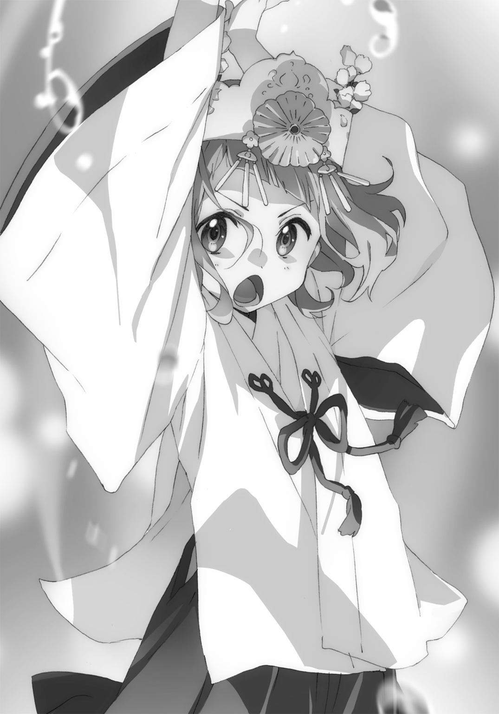
要領を得ない声を上げたと思ったら、羽音の作り出した球体が徐々に揺れ動き形を崩していく。そしてついには崩壊してしまった。きっとまだ力が安定していないのだろう。いくら器用で可愛い羽音でも、いきなり完璧に使いこなすのは難しいようだ。
お粗末な自らの妖術に、羽音はコツンと頭を叩き、一言。
「失敗しちゃった♪」
「可愛い」
「可愛い」
可愛い。
と、小百合や栗子と心の中でシンクロしている場合ではなかった。水の牢獄から解放された三鉾坊は大げさに深呼吸をすると、タフなことにすぐさま羽音へ襲いかかる。
「いくら強力な妖力の持ち主といえど、やはりまだひよっこだな！ そんな相手には、接近戦が一番だ！ どうだ！ この距離では水の妖術も使えまい！」
得意げに三鉾坊は豪語する。二人の距離は、互いの腕が届くほどにまで詰められていた。三鉾坊は余裕しゃくしゃくといった表情で、羽音に手を伸ばす。
さあ、見事にフラグが立った。羽音を可愛いだけの女子と油断する者の末路は決まっている。小百合や栗子、藤十郎など先人たちは「終わったね」「三鉾坊終わったね」と口にしていた。
彼女の名は十河羽音。ごく普通の生活を送り、ごく普通の可愛く清廉潔白な俺の妹である。でもただひとつちがっていたのは......妹は、豪傑だったのです。
「はあああッ！」
「ゴフッ......」
羽音の正拳突きがモロ顔面に直撃した三鉾坊は、短くうめくと綺麗な弧を描いて宙を舞う。
さらにその軌道を事前に予測した羽音は、俊足で夜粋川の水面を駆け、落下点にて構えた。
「わーたたたたたたッッ！」
「ぐぼぼぼぼぼぼッッ！」
落下してきた三鉾坊の上半身へ、両の拳でもって目にも留まらぬガトリングのような連突き。三鉾坊は抵抗する術もなく、そのすべてを身体に刻む。何発入れたか皆目見当もつかない連撃を終えても、羽音はそう簡単に三鉾坊を地につけさせない。
「んんんせいッ！」
強烈なサマーソルトキックで顎を下から蹴り上げると、三鉾坊は再度宙を舞う。もはや悲鳴すら上げなくなった三鉾坊の身体は、頂点に達してふわりと降下してくる。それを、羽音は静かに構え、見据える。間違いない......とどめの一発を狙っていた。
タイミングを見計らい羽音は飛び上がると、身体をギュルンッと横回転させる。
そして、巫女であり天使であり女神であるその踵に――武の神が宿る。
「ブラコン胴回し回転蹴りいいいいいいいいッッ！」
ドカバキィッという激しい打撃音が響き渡る。とてつもない大技を喰らい夜粋川へ叩きつけられた三鉾坊は、力なくぷかぷかと浮かんでいた。もはや同情の余地しかない。
水野橋・夜粋川水神強奪騒動というかつてない大事件は、スーパールーキー巫女羽音によるまさかの肉弾戦の末、圧倒的勝利をもって幕を閉じた。
「「「........................」」」
己を苦しめてきた三鉾坊の壮絶すぎる敗北に、小百合、栗子、藤十郎の三人は茫然を通り越し、無の表情でそれを眺めていた。そんな三人と俺のほうを振り向いた橋姫の巫女は、天衣無縫な笑みを弾けさせ、褒めてほしそうに両手を振るのだった。
苛烈を極めた異次元バトルに決着をつけた羽音が俺たちのもとへ駆け寄り、「あー怖かった」などと口走って皆を震撼させていたときだった。
「お、おおう......なんかもうカオスなことになってるねえ......」
上空から声が聞こえたかと思うと、城から飛んできたのだろう奈々子さんが着地する。夜粋川に浮かぶ三鉾坊と巨大な鳥、そして巫女装束の羽音を見て苦笑いを浮かべていた。
ここで起きたすべての出来事を、奈々子さんは時折大仰に驚きながら興味深そうに聞く。話し終えると、「はえー......」と感嘆の声を漏らす。
「まさか羽音ちゃんが橋姫の巫女として覚醒するとは......さすがの奈々子さんでも予想外だよ」
「いやでも私の中にいっぱいあった妖力を、そのまま使ってるだけですから......」
「いやいや......その妖力を受け入れられているって事実が驚きなのよ」
そうだよなあ......ほんのちょっと前までその妖力に身体が拒絶していたっていうのに......。嫉妬を受け入れたと同時に、そのぜんぶがポジティブなものに変わったのか......。
「んー......まあこの話はいったん置いておこう。ひとまず三鉾坊さんを............え？」
奈々子さんは夜粋川のほうを見て、目を見張る。なんとあれだけ羽音のコンボ攻撃を受けたというのに、三鉾坊はたたらを踏みながら立ち上がろうとしていた。
「まだっ......負けてはおらぬっ......」
「えーまだやるんすかー？」
「あたりまえだ！ 小娘一人にやられるなど言語道断！ 夜粋川は......我らのものだ......っ！ おらっ！ 貴様もいつまで寝ているっ！」
三鉾坊は傍らで倒れている怪鳥をひっぱたくと、そっちも意識を取り戻してしまった。怪鳥は頭をぶるぶる振ると、三鉾坊とともにこちらを睨む。異様なタフさを誇る川天狗大将とペット。そこへ、さらにいろいろな意味で厄介なやつまでも加わってしまう。
「うお――――っ！ 待て―――クマのやつ――――っ！」
大鳥見山の方角から超高速で飛来するのは、飛鳥丸だ。彼女を見ると奈々子さんは、これ見よがしにため息をつく。
「全員のしてきたってのに......あの子だけはホントタフだねえ」
てか奈々子さん、あの川天狗たち制圧してここに来たの......？ やっぱこの人も規格外だよ。
「クマのやつ―――......あっ！ さゆりもいる！ 栗のやつも！」
「飛鳥丸！ おまえも加勢しろ！」
「うおおおさんさんぼーぼーさまっ！ ボロボロじゃないですかーっ？ 転んだんですかっ？」
「んなわけあるかっっ！」
川天狗一派の中でも特に厄介なやつらが集結してしまった。しかもまだまだやる気だ。こっちも集合しているが......いかんせんもう疲れたよ......。
いきり立つ川天狗二人と怪鳥一匹に、小百合や栗子、羽音、奈々子さんも身を引き締めている。そうして再戦がはじまると思った......そのときだった。
「おーおー。今夜の夜粋川はなにやら賑やかだなあ」
聞き覚えのない、飄々とスローな口調の声がどこからか降ってきた。思わずそこにいた全員が声に反応し、その姿を探す。すると、最初に見つけたのは三鉾坊だったようだ。なにやら血の気の引いている顔が見つめる先は......水野橋の、欄干の上。
「よ、三鉾坊。なーにやら良からぬこと、してくれたようだなー？ 地球の裏っかわにいたってのに、ひしひし伝わってきたぞー？」
そこに立っているのは見覚えのない女性。脚のすらりとした長身でモデルのような凜々しい容姿を、なにか多国籍な衣服が包んでいる。派手だがカッコいい雰囲気のあるお姉さんだ。
その女性の登場に一番の反応を見せたのは、藤十郎だった。
「み、み、水野姫さま―――――っ！」
「おお、藤十郎。おまえもいたのか。ちっこくて見えなかったぞ」
水野姫さまって......水野橋の橋姫っ？ 本物っ？
「水野橋や夜粋川の危機を感じ取って帰ってきたんだろうねえ......しかし、もうちょっと早く来てくれればいいのにさ......」
奈々子さんはそう、厭世的に呟いた。いやホントですよ。
「さて......悪いがおまえらのやってきたことは、すべてお見通しでな。いつかこんな日が来るとは思っていたが。三鉾坊よ、私は今まで幾度となく、おまえに話を持ちかけたではないか。言いたいことがあるなら来いと。なのにおまえはこんなことしかできないのか？」
「やかましい！ その態度が気に入らんのだ！ 夜粋川は古来より我ら川天狗の......」
「あーあーわかったわかった。意見をすり合せることさえ叶わないことは、十分にわかった。つまりあれだろ？ おまえらは力ずくで水神の座を奪いたいのだろう？ うむ、よーくわかった」
水野姫と三鉾坊の会話の途中だが、俺は妙なことに気づいた。なにやら夜粋川が、逆流している。水の行く先を辿っていくと、なんと途中から天に昇っていた。
よく見ればその終着点は、仁王立ちする水野姫の背後。
「ならば――私も力ずくで守らなければなるまい。橋姫として、な」
水野姫によって集められた川の水は、羽音の操っていたときとは比べ物にならない膨大なものとなる。そしてそれらは大きく、複雑に、形作られていく。
水野姫の頭上に現れたのは、怪鳥さえも有に超える、とてつもなく巨大な水龍だった。でっかいクマからはじまり、でっかい鳥ときて最後に龍。なんだ今日のこの怪獣大戦争。
その絶大さに俺たちは大口を開け、三鉾坊や怪鳥はぶるぶると怯えていた。飛鳥丸は目を輝かせながら「かわい――っ！」と叫んでいた。もうあの子は本当にわからない。
「では、な。今度いっしょに呑もう、三鉾坊よ」
水龍は三鉾坊、飛鳥丸、怪鳥へ突っ込んでいく。無論、そんなもの避けられるわけもなく、川天狗一派たちは水龍に飲まれるとそのまま空へ投げ出され、超絶な勢いで吹き飛ぶ。
「わ―――っさんさんぼーぼーさますごいですっっ！ 私たち飛んでますよっっ！」
「もとから飛べるだろうがっっ！ くそ―――――っ！ 覚えていろ―――――――っ！」
そんな捨て台詞を叫びながら、川天狗一派は大鳥見山の方角へ星のように消えていった。
啞然とする俺たちをよそに、水野姫は欄干の上でただただ愉快そうに高笑いしていた。ずっといなかったくせにこの女神さま......最後にぜんぶ持っていきおった......。
「うああ―――姫さま―――――っ！」
「おお藤十郎。どうしたどうした」
「姫さまがいればこんなことには――っ！ も―――姫さまのばかばか――――っ！」
水野橋からふわりと飛び立ち俺たちのもとへ降り立った水野姫に、猫姿の藤十郎はだれよりも早く駆け寄った。その足にしがみつき、びしゃーっと噴水のように涙を流している。水野姫は藤十郎を両手で摑むと、肩に乗せるように抱きしめる。
「ずいぶん傷だらけじゃないか藤十郎。こんなになるまで、がんばったんだなあ」
「ううう―――っ！ がんばりました―――っ、藤十郎はがんばりました――――っ！」
藤十郎、水野姫の前だとこんな感じなんだな。俺たちの前ではずっと気丈に振る舞おうとしていたのだろう。まあ完璧にできていたかと言えば、噓になるが。
泣き続ける藤十郎を抱きかかえながら、水野姫は好奇心に染まる瞳を俺たちへ向ける。
「さて。見ない顔ばかりだな。奈々子はもちろん知っているが......他も皆休更月なのだろう？」
俺と羽音はちがうが、否定するのはひとまず控えた。さすがは女神と言うべきか、フランクな態度の中にある有無を言わせぬ厳かな空気を、俺は感じていた。
水野姫は俺たちへ一歩歩み寄ると、颯爽とした笑みを見せた。
「君たちが橋を守ってくれたのだろう？ 改めて、ありがとう」
感謝を述べるその口調や立ち姿さえ、端麗で精悍である。俺や小百合、栗子はその完璧な雰囲気に気圧されていた。
「そして......君が、橋姫の巫女だな？」
水野姫はそう言って、羽音の前に立つ。神様に対しても標準搭載している人見知りが発動し、もじもじする羽音。その問いに、こくんと小さく頷いた。
「なるほど。これは可憐だな。こんな女子を見つけてくるとは、藤十郎も隅に置けないな」
「あ、あのっ......私っ......」
「よいよい。皆まで言うな、わかっている。先ほど言っただろう？ すべて、お見通しだ。君が嫉妬に苦しみながらそれを乗り越えたことも、嫉妬の根源......そこにいる兄をどれだけ大切に思っているかもな。こちらまで赤くなってしまうよ、まったく」
「っ......」
藤十郎の想いを羽音が共有していたように、水野姫も羽音の感情を断片的に共有していたのだろう。意地悪な水野姫の言葉に、羽音は顔を真っ赤に染め上げていた。
「なに、恥じることはない。嫉妬しない者などいないし、女子は嫉妬してこそ凜々しく成長するのだ。純白な心は美しいが、眩しすぎる。少し濁った乳白色くらいのほうが、人には馴染みやすいものだ。だが君はまだ子供で、それがわからなかった。だからこそ、呪われたのだ」
「え......？ それはどういう......？」
「そもそもな、穢れを祓いきれなかったからといって、呪われることなど普通ならありえない。なのに拒絶反応を示したのは、嫉妬さえ知らない君の心が美しすぎたからなんだ。だからこそ嫉妬を受け入れた今、橋姫の巫女にふさわしい人間となり、妖力を使いこなせているんだよ」
なるほど......と俺を含めた皆、納得した。羽音の心が美しいのは、周知の事実なのである。
すると水野姫は、なにやら嫌な予感のするえびす顔で羽音の肩を叩く。
「そういうわけだ。これからも水野橋と夜粋川を頼むぞ。私がいない間もな」
「ちょっ、姫さま！ この期に及んでまだ放浪癖を直そうとしないのですかっっ？」
「ははは、良いではないか藤十郎。強くて可愛らしい巫女がいるのだ、私がいる必要もないだろう？ いや、この娘を見たら無性にウユニ塩原へ行きたくなってな。なんなら今すぐ......」
「こら――――っ！」
藤十郎の怒鳴り声にも、水野姫は少しも気にかけていない様子で「はっはっは」と笑う。このひと全然懲りてないな......危うく自分の存在が消されるところだったんだぞ......。
そんな水野姫の服の裾を、出し抜けに羽音がくいっと摑む。首を傾げて顔を向ける水野姫に、羽音はうるんだ瞳を見せた。
「水野姫さま......旅行が好きなのは良いけど......藤十郎ちゃんに、あんまり迷惑かけちゃダメだよ......？ 私も、一人じゃ心細いよ......」
ぽつぽつ羽音は健気な心情を吐露した。それを見ると、水野姫はいきなり羽音を抱きしめる。
「なにこの子、本当に可愛い。持って帰っていい？」
「「「ダメです」」」
水野姫と羽音以外の全員が、そろってそう口にしたのだった。
結局、羽音必殺の見上げ懇願術に屈した水野姫は、もう少し放浪を控えることを約束した。女神とはいえ、天使のお願いには勝てなかったとさ。
「そういえば、巫女よ。名前を聞いていなかった。なんと呼べばいい？」
水野姫のその問いに、羽音はすぐさま応える。
「羽音です！ 私の名前は、十河羽音です！」
この世の憂いも哀しみも寄せつけない太陽のような声で、明快に名乗る。
朗らかで、あどけなくて、ほんの少し大人びた、幸せそうな笑顔であった。可愛い。
終 章
「いやだから悪かったって。また明日付き合ってやるって」
『結局はるちーは俺のことなんてどうでも良いって思ってるんだな。よくわかったよ。いつの間にかいなくなってたからもしやとは思ったが......ホントに忘れてたとはな』
「忘れてたわけじゃないんだ。来週のうんたら曜日に改めて映画行く、って記憶してたから、いつ行くかは最初から憶えていなかったんだ」
『より酷いじゃねえか！ そうやって俺のことをないがしろにして、小百合ちゃんとイチャイチャすんだろっ？ このスケベ！』
「小百合じゃねえよ。羽音だ」
『あーそっちか。それ言われたらもうなにも言えねえな......。だってもう治療行為だもんな、それ。シスコンって病気の』
「ねえよそんな病気」
『そういえば、羽音ちゃんの様子はどうなんだ？ なにか悩んでるってやつ』
「ああ、それはもう解決した」
『えっ？ そんな短期間で解決できるものだったの？ 結局なにが原因だったんだ？』
「んーまあ、要は思春期っていうか成長期っていうか......おっと羽音が来た。切るぞ」
サクの『えっ！ ちょっ......』という別れの挨拶を耳にしたところで、俺はスマホをしまう。そうしてちょっと懐かしい校舎から出てくる女子二人組を見つめる。
「それでねー............はっ！ はるにぃの匂いがするっ！」
一方の女子、羽音はそう言って辺りを見回すと、校門の外で待つ俺の姿を発見した。
「はるにぃ―――っ！ ただいま！ なんでっ？ 駅で待ってるんじゃなかったのっ？」
「はいおかえりー。いや単純に、一秒でも早く羽音に会いたかったんだぜ」
「え――？ もう恥ずかしいよはるにぃ―――っ！」
そういうわりには嬉しそうな顔で、羽音はくねくねしていた。
「総督、お疲れさまです」
もう一方の女子、金髪中学生レイチェルも羽音を追って俺に歩み寄る。その表情はどこか不思議そうだ。その理由は言わずもがな。なぜ俺が羽音の学校にて待機していたか、だろう。
「今日、俺も羽音も小百合に呼び出されててな。いっしょに行こうと思って」
「なるほど、そうだったのですね」
「レイちゃんもいっしょに行く？ 私から小百合ちゃんに連絡するよ？」
その問いにレイチェルは少し考えるような仕草を見せる。しかし、並び立った俺と羽音をじっと見つめると、柔和な笑顔で断りの旨を告げる。
「ごめーん今日これから塾なんだー。また今度誘って！ 私も小百合さんと話したいしっ！」
「そっかー。わかった、小百合ちゃんの予定押さえておくから、今度いっしょに会おうね！」
一言二言交わしたあと、レイチェルはその場で俺たちと別れ、足早に去っていった。
その中で、俺は優秀な部下からの合図を受け取っていた。レイチェルは俺に対し、不自然なタイミングで一切のえぐみもない、花のように艶やかな微笑みを見せた。
言葉なくとも把握した。レイチェルが気にかけていた、羽音の笑顔の件だ。学校でも羽音に笑顔が戻ってきたのだろう。あの子にもいろいろ心配をかけてしまった。金に輝く背に視線で感謝の気持ちを送りながら、俺は羽音と連れ立って歩き出す。向かうは、此花庵。
日差しが暖かくなってきた三月の空は、まるで俺たち兄妹の気分を表したような晴天だった。隣の天使は太陽をたっぷり浴びてご機嫌なようで、んがーっとあくびをしている。
「栗子ちゃんとかもいるのかな？ 今日」
出し抜けにそんなことを尋ねてきた。小百合同様、栗子にも懐いているようでなによりだ。
「一応あいつも休更月なわけだから、此花庵にいてもおかしくはないな」
「そっかそっかー。そういえばー......はるにぃ兄さんは、だれがお好みなのですかな？」
可愛く下衆な顔で、下世話な話題を持ちかけてきおった。我が家の天使はたまにこういうことを平気で尋ねてくるから、困ったものだ。
「お好み焼きで好きな具はタコかなー」
「タコじゃない！ 話逸れると思ったら大間違いだよ！ ちなみに私が好きなのは豚肉だよ！」
芳しくない話題をするりと避けようとするも、羽音が腕をぎゅーっと握り物理的に捕まえる。
「可愛い女の子いっぱいいるよねー、はるにぃの周り。相性もいい感じだしー」
「相性？」
「うん。まずはるにぃはＳでしょ？」
えっ？ そうなのっ？ 考えたこともなかったが......羽音がそう言うのだから間違いはないのだろう。そうか......俺はＳなのか......。
「小百合ちゃんはたぶんＭだね。栗子ちゃんも、Ｍの匂いがするな。詩衣さんは、Ｍのようで実はＳの面もある。奈々子さんは完全にＳ。藤十郎ちゃんは完全にＭだね」
なぜそのラインナップに藤十郎が名を連ねているのかは疑問だが......まあわからなくはない。こうして分析してみると面白いもんだ。ただ詩衣さんは......Ｓの面があるのか？ それはよくわからないな......羽音にしかわからない感覚なのだろう。
「ちなみに、私もＭですぞ？」
「マジでか。じゃあいじめちゃおっかな―――？」
「きゃ―――♪」
「なんだか前にも増して仲良くなったねえ、十河兄妹」
不意に、俺と羽音の会話に割り込む声がひとつ。奈々子さんがすぐ後ろについてきていた。
「よっ、元気か二人ともっ」
「おや奈々子さんこんなところで............って、え？ その後ろにいるの......詩衣さん？」
言うと、奈々子さんの小さな身体に身を隠す詩衣さんがびくっと震えた。なぜ奈々子さんといるのか、なぜ隠れているのかなど疑問はあれど、なによりも聞きたいのはひとつだ。
「詩衣さん......？ 学校は......？」
高校教師である詩衣さんが、なぜこんな早い時間に学校の外にいるのか？ どんなに早くとも五時までは帰れない、と前に詩衣さん自身が話していたはずだが......。
「あ、あのねハルくん......これは授業のためなのよ......？ 野外調査によって生態系の......」
「仮病使って学校抜け出して、これから私とお茶しに行くんだぜ」
「奈々子ちゃ―――――んっっ!?」
詩衣さんはバビューンッと飛び上がると、涙目で奈々子さんの頭をばしばし叩く。その様子からわかる。奈々子さんの言っていることが本当なのだ。
「し、詩衣さんが仮病......？」「詩衣さんワルだぜえ......」
「うあ―――ごめんなさ――いっ！ ごめんなさ―――いっ！」
詩衣さんは一通り慌てふためくと、「よりにもよってハルくんに見つかるなんて......」とか言って粛々としていた。そんな詩衣さんを奈々子さんは愉快そうに見つめ、背中をさすっていた。今更だが、この二人いつの間にか仲良くなったな。
「いやいや......どうせ奈々子さんがそそのかしたんでしょ？ 詩衣さんにそんな大それたことできるはずないし」
「おおう春一くんよ。今の発言は私だけじゃなくしーちゃんに対しても失礼だぜ？ でもまーそんなところよ。しーちゃん悩んでることがあるって言うから、引っ張りだしちゃった」
「悩み？ そうなんですか詩衣さん？」
「わーわーっ、いいの！ 生徒十河くんは先生の悩みなんて気にしなくていいの！ それよりも二人そろってどこ行くのかなっ？」
強引に話を逸らす詩衣さん。詩衣さんの悩みは正直気になるが......女性の、しかも大人の悩みなのだから、子供の出る幕はないだろう。
「えーと、小百合に俺ら二人とも呼ばれてまして。たぶん栗子もいると思うんですけど」
「あー、うん。栗子ちゃんもいるよん。まー行ってみりゃわかるやね」
どうやら奈々子さんは俺たちが呼び出された理由を知っているようだ。ただそれを明確に口にしないところに、不穏な予感がする。
「......また小百合ちゃんと？ あと栗毛ちゃん？ 栗子ちゃんなの？ 改名したの？」
素直に答えたつもりだが、詩衣さんは慌てていた表情を改め、なにやらダークな空気を醸し出す。狼狽するも、俺はそこで一か八か尋ねてみる。
「し、詩衣さんも行きますか......？ なにが待っているかわからないですけど......」
どうやらその選択は正解だったらしい。詩衣さんはキラキラ輝く子犬のような目を俺に見せると、弾む声で言う。
「えっ？ いいの......？ 私が行ってもいいの......？」
「え、ええ......大丈夫かと......」
と、解決しかけたときに限って、空気の読めないちっこい人は意地悪心を働かせる。
「いやいやしーちゃんそりゃないでしょー？ 私呼び出しておいて途中で男の子とどっか行くなんて、そりゃマナー違反ですわー」
「えっっ？ い、いやでもね奈々子ちゃん......」
「さー行くよー。悩み聞くよーパンケーキ食べるのよー」
「いやいや待って奈々子ちゃん！ なんなら今まさに悩みが解決した節が......うあ―――っ！ 引っ張らないで―――、ちくしょ―――っ！」
奈々子さんが「じゃーねー」と告げると、詩衣さん奈々子さんという大人のお姉さんコンビは嵐のように去っていったのだった。なんだったのか。
「......はるにぃは、詩衣さんにも優しくしてあげてね？」
ん？ なんだそのフォローは。羽音には詩衣さんの悩みとやらがわかるのか？
まあ、羽音がそう言うのなら、というより俺が詩衣さんに優しく接することなど、イヤなわけがない。詩衣さんにもきっと、いろいろあるのだ。
今日は小さな悪魔に連れ出されてしまったが......埋め合わせはいつか必ず。
思わぬ人たちとエンカウントした俺たちだったが、無事此花庵へとたどり着いた。ランチ営業を終えた店の扉には『準備中』と書かれた看板がぶら下がる。遠慮なくその引き戸を開くと、そこにはなかなか興味深い恰好の人物がいた。
「おお！」「わあーっ！」
感嘆の声を上げる俺と羽音。そこには、白い作務衣にピンクの和風スカートという装いの、栗子がいたのだ。栗子は席に座りテーブルに乗る藤十郎の肉球をふにふにとしていた。
「栗子ちゃんかわい―――っ！」
「おお、春一、羽音。いらっしゃいませ」
「おまえその恰好、奈々子さんといっしょの......。そっか、おまえは接客か」
「そう。今日が栗子の此花庵初出勤日」
そう言いながら、小百合が厨房から姿を現した。その恰好は例によって料理人風だ。
この栗子をお披露目するために呼び出したのか。小百合のくせに気の利くことをする。
見た目ちょっと外国人風の栗子であるが、和風従業員っぽいその恰好もかなり似合っている。可愛い子にはなんでも似合っちゃうものだな。
「お疲れさまです、春一さま」
栗子の手から解放された水色の猫は、テーブルの上でしずしずとお辞儀をする。
「おう、藤十郎。どうだ？ 身体の具合は」
「はい、もうこの通りほとんど全快です。春一さまは、どうでしょう？」
「俺も大丈夫だよ。それで、最近どうだ？ 橋姫さまはちゃんとこの街にいるか？」
「もちろん！ 今日は橋の上で『るるぶ』などという雑誌を真剣に読んでおりました！」
それ、本当に大丈夫か？
「そうだ藤十郎ちゃん！ 見て見て、特訓の成果！」
小百合や栗子と談笑していた羽音が、俺たちの会話に入り込む。羽音はテーブルにあった水の入ったグラスに手をかざすと......。
「おっ！」「すごい」「便利」「さすがですっ、羽音さま！」
グラスの水が球体となり、ふわふわと宙に浮き出した。さらにそれはゆっくりゆっくり形を変えていき、ハート形にまで変形した。それを見る俺たち四人は手放しで誉め称える。
あの日、羽音が橋姫の巫女として覚醒した日から、羽音は毎日のようにお風呂の中でこのように水を操る特訓をしているようだ。水野姫によれば、羽音の妖力は水野橋を中心とした範囲で発現されるものなので、橋から離れれば離れるほど不安定になる。橋から十分に距離のある我が家にて自由自在に水を操れるようになれば、一人前なのだとか。
なぜ羽音がそんなにも特訓を重ねているのか。理由は、言わずもがなだろう。
「ふーっ......ああダメだ。もう崩れちゃいそうだから戻すね。いやーまだまだだね。全然水野姫さまみたいな繊細なものは作れないや」
「徐々に、徐々にですよ羽音さま！ 訓練あるのみです！」
ぐっと両手の肉球を握るポーズを見せてエールを送る藤十郎。羽音は「うん！」と快活に頷いた。この橋姫の使い＆巫女コンビ、なかなかいい関係を築いているようだ。
それに比べてこっちのコンビはというと......。
「小百合、お腹すいた。なにか作って」
「いや......さっきカツ丼大盛り食べたじゃん......」
「働いたからお腹すいた」
「働いたって、あれからお客さん来てないでしょ！ 藤十郎の肉球触ってただけじゃん！」
「テーブル拭いた。床掃いた。右京さんより先に犯人特定した。こんなに仕事した」
「ひとつ仕事じゃないの交じってる！」
日々こうしたちょっとしたことで対立していた。というより栗子のマイペースさに小百合が一方的に怒っている場面が多いように思う。ただそうは言いつつ、二人で仲良く仕事サボってドラマの再放送見ているあたり、けして悪い関係でもないと思うがな。
「ほら二人とも、喧嘩すんなって。ほら見ろ、このときはこんなに仲良しだったのに」
仕方なく俺は仲裁に入る。スマホで撮影したとある画像を二人に見せてやった。
それはあの日、二人が怪鳥を倒した直後交わした、グータッチの瞬間だ。二人ともこちらに背を向けて座っている感じが、なんかイカしている。
「なっ！ こ、こんな写真いつの間にっ！」「盗撮......」
しかしながら二人はなぜかよりいきり立ち、その感情を俺にぶつけてきた。いろいろ言っているが、つまりは恥ずかしいのだろう。ういやつらめ。
「いい写真だよなー。俺これデスクトップの壁紙にしてるんだ」
「すんなやっ！」「金とるぞ」
「ほら、ハートいっぱいのフレームで加工したやつもあるんだぞ」
「変なの作んなやっ！」「なにが『Fu-jin×Raijin ずっといっしょ♡』か」
二人して顔を赤く染め、俺へさらに詰め寄ってくる。しかしあんまりこうぐいぐい来られると......俺としてはちょっとドギマギしちゃうというか......。
「「「ハッ！」」」
反射的に俺たち三人は羽音のほうを見る。羽音はニコニコとしながらこちらを眺めていた。
「み、みなさま......そんな戦慄せずとも、もう嫉妬の呪いは解けているのですよ......？」
「お、おうそうだよな......」「なんか、条件反射的に......」「パブロフの犬的な......」
「まったくもー。いーんだよもう、私に気を遣わなくたってー」
羽音はそう言って、どこか大人びた笑みを浮かべる。
「そうだな。羽音はもう嫉妬なんてしないもんな」
「んーん、はるにぃ。それはちがうよ。私はちゃんと嫉妬してる」
「え？」
「けど、嫉妬も私の大切な感情のひとつとして、受け入れられるんだ。だって私は、はるにぃにとってたった一人の存在――妹なんだから」
「......そうか」
それが、答えを見つけた羽音の、ひとつの成長なのだろう。
「だから、はるにぃは私が守る！ 小百合ちゃんや栗子ちゃんには負けないんだから！」
にししっ、と歯を見せて笑う羽音に、小百合と栗子もつられて笑う。ひとしきり笑顔の交換を終えると、二人も好戦的に告げる。
「うん。でも私だって、約束したから」「負けない」
こいつら俺のこと、か弱きヒロインかなにかだと思っている節がある。失礼だよな、と藤十郎に愚痴ると、「そうあるべきなんじゃないですかねえ」とこやつも失礼を重ねていた。
「写真で思いついたんだけどさっ、私その恰好の小百合ちゃんと栗子ちゃんと写真撮りたい！」
「おお、そうだな。撮っておきたいな」
小百合や栗子も異論はないようで、そろってこくんと頷いた。
どうせなら店先で撮ろうという結論に至り、俺たちはぞろぞろと店を出る。小百合、羽音、栗子の順に此花庵の入り口前に並んだ。
「藤十郎ちゃんは入らないのー？」
「いえ、わたくしは遠慮しておきます。あまりこの姿が写真に残るのは良くないので......」
羽音の誘いをやんわりと断ると、藤十郎はカメラマンである俺の足元へトコトコ歩み寄る。
「まあ、あの仲良し三人の中に入るのは、ちょっと勇気いるよな」
こっそり呟くと、藤十郎は笑みを見せる。俺はそんなつつましい猫を抱きかかえて、肩に乗せてやる。藤十郎の定位置である。
「春一さま、重くないですか」
「大丈夫だって。遠慮すんなよ、相棒」
俺はスマホを取り出し、カメラを起動する。こんなことなら一眼レフ持ってくるんだったな。
「ほい、じゃー撮るぞ。さん、にー、いち......と。......おい両サイド、もうちょいがんばれや」
撮れた画像を確認してみると、真ん中に立つ羽音はもう言うことはない。完璧だ。完璧な御顔だ。だが、隣の小百合はやっぱりぎこちない妙ちきりんな笑顔。栗子に至っては無表情で、完全に目を瞑っている。ベッタベタですやん。
「小百合＆栗子......おまえらもっと自然に笑えんのか。そんで栗子は目瞑ってるし」
「わ、笑わせてみい！ 私を笑わせてみい、このシスコン年間最優秀選手賞受賞！」
「だから無茶ブリやめいって」
「二人とも、ちょいちょい。小百合ちゃんには前言ったけど......」
ふと、羽音が小百合と栗子を呼び寄せ、耳打ちする。こんな光景前にも見た。巫女の儀式後、小百合と羽音とで撮ったときだ。あのときは耳打ちのあと、小百合は見事に自然な笑みを見せていた。なにを言われたかは、意地悪な小百合は教えてくれなかったけれど。
だが......俺は知ってしまった。
羽音の心を覗いた際、期せずして見てしまった、聞いてしまったのだ。魔法の言葉――。
「はい！ いいよ、はるにぃ！」
そう呼びかける羽音の両サイド、不器用な無表情姉妹は羽音マジックが施され、実にいい笑顔となっていた。見ている俺でさえ、思わず破顔してしまう。
「可愛く撮ってね、はるにぃ！」
「あたりまえだ。俺が羽音を可愛く撮らなかったことなど過去になく、未来永劫ありえない！」
「は、春一......早く......い、息が続かな......い......」
「いや栗子っっ？ 息はしていいんだぞっっ？ ああもう撮るぞ！ はい、チーズ！」
「チーズ......」
「お腹すいてんじゃねえよ」
瞬間、スマホに記録された一枚の画像。三月のうららかな陽光に包まれて、三つの笑顔が咲いている。彼女たちの見せる幸せそうな雰囲気は、見る者さえも笑顔にさせる。
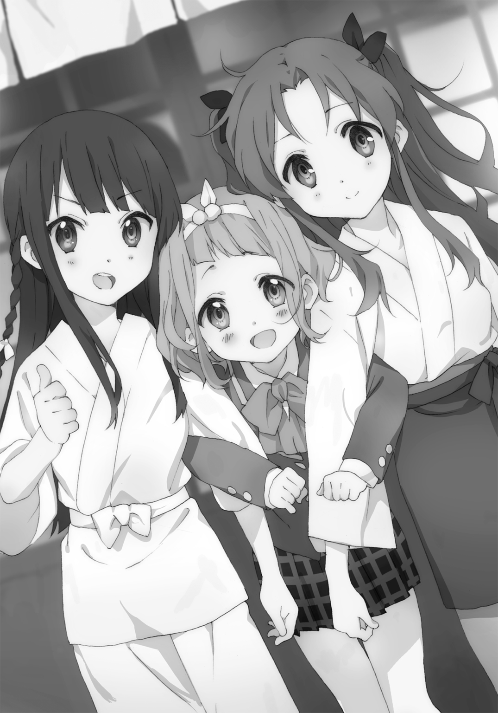
きっと記録に残すまでもない。この画像はいつまでも脳裏に刻まれているだろうと、そう感じてならなかった。
「さて。じゃあ写真も撮れたことだし......本来の目的へと移りますか」
小百合のこの言葉に俺や羽音、藤十郎はそれぞれいぶかしげに首を傾げる。栗子のコスチュームお披露目会なら、これでもう目的は果たせてると思うけど......。
「みんな席に座って。今からそば茹ではじめるから」
小百合の言う『そば』。それだけで、俺と藤十郎はぶるっと身体を震わせる。まさか......。
「もしかして小百合ちゃん、これからそば試食会するのっ？」
「うん。この前のでさらに創作意欲が触発された。今回はもっと気合いを入れて、考えた」
俺と藤十郎は瞬時に顔を青ざめさせる。あの地獄に、続きがあったなんて......。
戦慄する俺たちとは裏腹に、小百合の創作そば信者の羽音は声を上げて喜ぶ。興奮した様子で、俺の腕をぐっと摑んだ。
「楽しみだねっ、はるにぃ！ さっ、はやく入ろう！」
「うわあああああああああっっ！」
俺を生き地獄へ引きずり込もうとする羽音。その大きな瞳の中には、目にしみるような鮮やかなパステルグリーンを感じる。そこに、無粋な黒いモヤなどあるはずもない。
情けなくていやらしい感情だってもう、パステルグリーンの中に入っているのだ。
そばの良さもわからない俺は、いまだ大人になるということを明確に定義できない。
でも、羽音が俺のあとを追って少しずつ大人になっていくその時間の中で、いろんな顔を見せ、いろんな感情を表すその瞬間の連続は、どこまでも尊く、遙か先まで楽しみで、ほんのちょっとだけ寂しいものなのだと、俺は認識できていた。
妹の成長を悟ることこそが俺にとって大人になることに近しいものだと、そう考えることに抵抗はなく、むしろ両手を広げて迎え入れられる。
なぜなら、俺と羽音はいつまでも、どこまでも、いっしょにいられるのだから。
その瞳を見ても、感じるのはパステルグリーンのみ。もはや心は見えない。
しかしあのときこっそり見てしまった記憶は、ずっと俺の中にあり続ける。
『はるにぃはね、よく笑う女の子が好きなんだよ。だってはるにぃは、私のことが大好きなんだから！』
小百合の瞳に映る羽音はそう言って、どこかいたずらな、でも小春日和のように温かな笑顔を満面に湛えるのだった。可愛い。
あ と が き
持崎湯葉です。
せっかくだし性別不明の謎作家という設定でいこうと決意したにもかかわらず、一巻のあとがきにてまんまと「俺」という一人称を書いてしまいデビュー直後に計画が頓挫した、持崎湯葉です。
このことを友人に話したところ「おまえ、あんな下ネタと親父ギャグまみれの作品ぶちかましておいて、性別不明設定は無茶だろ......」とマジトーンで告げられ涙で枕を濡らしたのも、持崎湯葉です。
大変です。あとがきが三ページもあります。
三ページというのは中途半端です。小百合のスリーサイズを発表するだけでは余ってしまうし、小学生の頃の自作漫画『がんばれポメラニャン』が母親の手によって保管されていたことに気づき、隣町まで捨てに行った話をするには少々足りないです。かといって蚊がとまっていると思ったら濃い腕毛が絡まっていただけだった話は、単純に興味を持たれないと思います。
そもそもあとがきってなんですか？ なにを書くのが正解なんですか？
僕という人間の人となりを書くとなると、申しわけありませんが三ページでは書ききれません。人に歴史ありなのです。ただ短くまとめろと言われれば、「僕は腕毛の濃い親父ギャグ作家です」とだけ書けば済む話です。人の歴史なんてそんなものなのです。
あとがき三ページとはかくも恐ろしいものです。こんなにも人を苦しめるものなのです。
いつかまたあとがき三ページが襲いかかってきてもいいように、これからは良い塩梅の小噺を用意しておこうと思います。どうもすいません（額にコツン）。
さて、水増しも済んだところで少しだけ作品に触れようと思います。
もちろんですが、応募作（一巻）を書いていた段階では、まさか続編を書くことができるなど夢にも思っておりませんでした。なので本作の一行目を打ち込んでいく中で、じわじわとなにかがこみ上げてきたのを覚えています。
「一巻で完結したほうが綺麗じゃね？」なんて斜に構えていた時期もありましたが、書いていくとやっぱり楽しかったです。こんな楽しいものがこの世にあるなんて知りませんでした。
結果的にずっとやりたいと思っていた羽音ＴＵＥＥＥＥ展開や、街で見かけて可愛いと思った白ワンピ＋スタジャン少女も描けました。あまつさえ藤十郎という選択肢をも提示できたことには、喜悦を禁じ得ません。
願わくば、小百合や栗子や羽音が読者の方々の心の中で少しでも長く、楽しげに跳ね回ってくれたなら、これ以上の幸せはないと思っています。
ここで、謝辞を述べさせてください。まず前巻に引き続きイラストを担当してくださいました白身魚様、ステキな絵を本当にありがとうございました。白身魚様に描かれて、キャラクターたちも幸せだったことと思います。担当編集様、ならびに編集部の皆様、また校閲様に感謝を贈ります。校閲というとただ誤字脱字を正すお仕事かと思いきや、原稿を見ると担当してくださった校閲様の色みたいなものが随所に出ていて、シンパシーを感じました。名前も顔も知りませんが、この人と飲みに行きたい、なんて思ってしまいました。
そして本書を手に取ってくださっている皆様に、深甚の謝意を表します。
皆様に支えられて、『モノノケグラデーション』という作品は成り立っているのです。関わってくださったすべての方々、本当にありがとうございました。
ところで、この持崎湯葉、今更ながらブログをはじめさせていただきました。有益な情報を発信している自信はないですが、興味があれば覗いてみてください。『もちゆばハイム』なんて名前です。
それでは、長々と失礼いたしました。
また会える日まで、ごきげんようです。ありがとうございました。
持 崎 湯 葉
著者紹介
持崎湯葉 もちざき ゆば
第十三回スーパーダッシュ小説新人賞優秀賞受賞。
好きなものを３つあげるとしたら、そばと、そば屋のいなりずしと、そば屋の日本酒です。あと２つあげるとしたら、そば屋のカツ丼と、そば屋のだし巻き卵です。とにかくそば屋が好きなのです。
illustration
白身魚 しろみざかな
タケノコのシーズンがやってまいりました。
弟と１日交代で朝掘り（...と言っても運ぶ係ですが）に出ていますが、早起きが辛い！ 普段そんなに起きるの早くないので、朝掘りの日はずっと眠いです（笑）
ダッシュエックス文庫DIGITAL
モノノケグラデーション２
著者 持崎湯葉
© YUBA MOCHIZAKI 2015
２０１５年６月30日発行
この電子書籍は、ダッシュエックス文庫「モノノケグラデーション２」
２０１５年５月27日発行の第１刷を底本としています。
発行者 鈴木晴彦
発行所 株式会社 集英社
〒１０１－８０５０
東京都千代田区一ツ橋２丁目５番10号
０３－３２３０－６０８０（読者係）
制作所 株式会社デジタルディレクターズ
本作品の全部また一部を無断で複製、転載、改竄、インターネット上に掲載すること、および有償無償に関わらず、本データを第三者に譲渡することを禁じます。なお個人利用の目的であっても、コピーガードを解除しての複製は、法律で禁じられています。